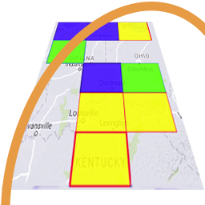
GridTracker2 User Guide
Version 2.261110.0
November 9, 2026
gridtracker.org
GridTracker2 User Guide¶
About This Guide
GridTracker2 License Agreement and Copyright¶
GridTracker2 is Licensed under the BSD 3-Clause “New” or “Revised” License
The information contained within this site / document is subject to change without notice. The products identified within this document are not approval of or endorsements for any of the product names or trademarks appearing in this document.
Permission is granted to copy this site / information, at no charge for non-commercial purposes. The sources cited and present copyright notice is to be included in all copies. Recipients of copies are equally bound to abide by the present conditions. Prior written permission is required for any commercial use or publication of this document, in whole or in part.
Copyright © 2026 GridTracker.org
All Rights Reserved Worldwide
Other Applications / Integrations License Statements¶
WSJT-X is copyright ® Joseph Taylor, K1JT and the WSJT-X Development Group, et al.
https://physics.princeton.edu/pulsar/K1JT/wsjtx.html
JTDX is copyright ® Igor Chernikov, UA3DJY and Arvo Järve ES1JA
https://jtdx.tech/
HamClock is copyright ® Elwood Charles Downey, WB0OEW, Clear Sky Institute
https://www.clearskyinstitute.com/ham/HamClock/
Microsoft® is a registered trademark and Windows Vista®, Windows 7®, Windows 8®, Windows 8.1®, Windows 10® Windows 11® are trademarks of Microsoft Corporation.
Mac® and macOS® are registered trademarks of Apple, Inc.
Linux® is the registered trademark of Linus Torvalds in the U.S. and other countries.
Linux AMD/Intel –
AMD is a registered trademark of Advanced Micro Devices, Inc.
Intel is a registered trademark of Intel Corporation
Raspberry Pi is a trademark of Raspberry Pi Ltd.
Parks On The Air® is a registered trademark of Parks On The Air, LLC. Summits on the Air (SOTA) is a program of the SOTA Management Team.
PSK-Reporter: Copyright 2024 Philip Gladstone
QRZ.Com: Copyright 2024 by QRZ.com
ClubLog: Club Log © Michael Wells G7VJR
eQSL.cc: Copyright 1998-2024 Electronic QSL Card Centre, a division of Air Wave Productions, LLC
LotW : Copyright 2024 American Radio Relay League, Inc. All Rights Reserved
Log4OM : (Copyright 2011-2014) by Daniele Pistollato
N3FJP Loggers: (Copyright 1997-2024)Written by G. Scott Davis N3FJP
Satellite Data¶
BirdWatch’s satellite names, details, modes and transmitters come from SatNOGS DB, developed, hosted and maintained by the Libre Space Foundation with data contributed by its volunteers. The data is licensed under the Creative Commons Attribution-ShareAlike 4.0 International license (CC BY-SA 4.0).
The amateur satellites’ element sets (TLE) and frequency list come from AMSAT, The Radio Amateur Satellite Corporation. The frequency list is gathered by the amateur-satellite-database project, Copyright (c) 2021 Los Angeles Times Data Desk, MIT License.
The full notices ship with GridTracker2 in resources/data/sat/NOTICE.txt.
Getting Help¶
The GridTracker2 team answers questions on our Discord server only:
Discord: join the discussion at discord.gg/gridtracker.
GitLab: report a bug at gitlab.com/gridtracker.org/gridtracker2/-/issues. See Submitting Bug Reports.
When you ask for help, include your GridTracker2 version from Settings → About, your operating system, and a screenshot (Ctrl+K copies one to the clipboard).
Other Programs¶
For help with other programs, please use their own support:
Program |
Support |
|---|---|
WSJT-X |
|
JTDX |
|
Log4OM |
|
N3FJP Loggers |
|
N1MM Logger+ |
|
DXKeeper |
|
HRD Logbook |
|
Cloudlog / Wavelog |
Introduction
What Is GridTracker2?¶
GridTracker2 is a companion program for amateur radio operators. Its original tag line, back in February 2018, was “GridTracker listens to traffic from WSJT-X and displays it on a map. It will also load ADIF log files.” It still does that at heart, but it has grown into a warehouse of amateur radio information in one easy-to-use window: live decodes, DX spots, your logbook, award progress, POTA and SOTA activations, propagation, weather and solar conditions.
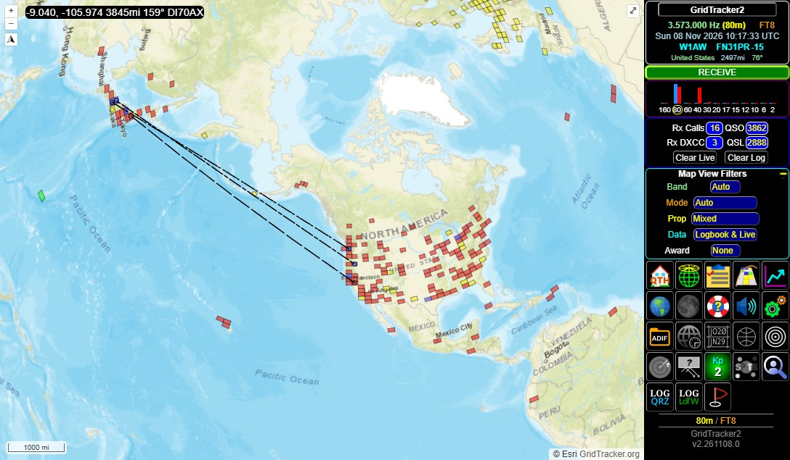
Features¶
A live, interactive map of the stations you are hearing and the grids you have worked, with paths between stations, push pins, two projections and more than 35 base maps. Overlays include the grayline, award progress, time zones, range rings, the Moon, US weather radar, propagation predictions, and where your signal is being heard.
The Call Roster: every station you are decoding in one table, with the ones you want highlighted: new grids, DXCC entities, states, counties, zones, prefixes, parks and summits. Click a callsign to call that station.
DX Feeds and the Feed Roster: DX Cluster and CW Skimmer spots for every band and mode, hunted the same way, and worked with a click through WSJT-X, AC Log or Log4OM.
Parks On The Air and Summits On The Air: activations on the map and in the rosters, with automatic POTA spotting and a SOTA chaser log export.
Alerts: spoken, sound, pop-up and map alerts, and push notifications to your phone.
Logging: new QSOs are sent to your logging program and online logbooks (QRZ.com, LoTW, ClubLog, eQSL, Cloudlog/Wavelog and more), and your logbooks are loaded to show your progress toward awards.
Statistics: your logbook, scores and progress toward DXCC, WAS, WAC, CQ and ITU zones, WPX, US counties and more.
Callsign lookups from Callook, HamQTH, QRZ.com or QRZCQ.com.
Offline Mode for Field Day, POTA, SOTA and mobile operating without internet.
Available in 13 languages.
It’s free!
What GridTracker2 Is Not¶
GridTracker2 is not a logging program. It displays QSO data from WSJT-X, JTDX and similar programs, your logging program, online logbooks and ADIF files, and passes new QSOs on to your logs.
GridTracker2 is under active development with you in mind. Tell us what you’d like to see!
What’s New in GridTracker2¶
This guide was last revised for version 2.261110.0. If you used GridTracker2 before 2025, these are the biggest changes since the previous edition of this guide. Each one is covered in detail in its own chapter.
New Features¶
DX Feeds and the Feed Roster. GridTracker2 can now receive DX Cluster and CW Skimmer spots. They appear in their own Feed Roster, next to the Call Roster in the same window, and on the map as DX Feed spots. The Feed Roster has its own Logbook, Hunting, Wanted, Exceptions, Watchers, Ignores and audio alerts. See The Feed Roster and DX Feeds.
SOTA Chasing. Summits on the Air activators spotted in DX Feeds are shown in a SOTA column, with a SOTA Wanted choice and their own map markers. A QSO logged with a spotted activator gets the summit’s reference (SOTA_REF). The Logbook can export your chases as a CSV file for the SOTA database. See Summits On The Air.
POTA improvements. Park information now also comes from DX Feeds spots, the POTA tooltip has a new header, and you can click a park on the map to work the spot. See Parks On The Air.
Log4OM connection. GridTracker2 can connect to Log4OM through its UDP remote control. It shows Log4OM’s frequency, band and mode, sends spots to its QSO entry, and can tune your rig through Log4OM. See Log4OM.
N3FJP AC Log, expanded. Connection status lights, “Enable Rig Control” (clicking a spot tunes your rig through AC Log), POTA_REF and SOTA_REF Other fields, and more reliable logging.
Colors tab. Change the color of any band, and of the Gridsquare Colors on the map, from Settings → Colors. Map pins are now drawn in the band colors.
Roster Columns tab. Each roster has a Columns tab where you can show, hide, reorder and recolor every column.
New map layers and buttons. Range Rings, Major Parallels and Meridians, a Tropospheric Inversion VHF prediction layer (with 6 m Es areas), a choice of grayline terminator (Horizon, Civil, Nautical or Astronomical), the US weather radar restored, new base maps, and the option to put the side panel on the left side of the window.
Multi-Mode Decoder. Decode CW, FT8, FT4, PSK, RTTY, MFSK, DominoEX and THOR, Olivia, NAVTEX, Feld-Hell, WEFAX, WSPR, SSTV, Packet and satellite data right in GridTracker2, from your rig’s or an SDR’s audio, with a waterfall of the whole passband. FT8, FT4 and WSPR decodes can go to the map and Call Roster, and SSTV pictures can be sent. See The Multi-Mode Decoder.
BirdWatch satellite tracking. Amateur satellites on the map with their footprints and ground tracks, a BirdWatch panel with each satellite’s position, AOS and LOS and sky views, a pass timeline you can export to your calendar, and pass alerts. With Rig Control your radio follows a satellite’s downlink and uplink, Doppler-corrected through the pass, and with Rotor Control your antenna follows it too. See BirdWatch.
Network Audio. Audio in and out over your home network, for the Multi-Mode Decoder: VBAN (Voicemeeter), RTP and the simple TCP protocol of PipeWire and PulseAudio, and the audio of a FlexRadio (DAX) or a networked Icom. See Network Audio.
Rig and Rotor Control. GridTracker2 can now read and tune your rigs and SDRs itself (rigctld, flrig, Icom CI-V, Icom LAN, FlexRadio SmartSDR, Kenwood and Yaesu CAT, SPY Server, SDR++), and turn your antenna rotator (Yaesu GS-232, Easycomm II, SPID, rotctld, CatRotator / PstRotator). See Rig and Rotor Control.
Event Viewer. What happened this session (QSOs logged, alerts, errors, BirdWatch announcements) in a list of its own, over the map or in a window. It replaces the side panel’s message list. See Event Viewer.
Rearrangeable side panel. Drag the band activity graph, Quick Stats and Map View Filters above or below each other and the buttons. See Rearranging the Panel.
Santa Tracker. From December 1st a button appears that follows Santa and his reindeer around the world.
More languages. The interface is now available in Chinese (Simplified and Traditional), Dutch, English, French, French (Canada), German, Italian, Japanese, Polish, Portuguese (Brazil and Portugal) and Spanish.
More programs supported. JS8Call-Improved, WS – Digital Mode Suite, MSHV, ADIF UDP broadcasts from programs such as fldigi, HRD Logbook, and improved Cloudlog / Wavelog logging.
Multiple instances. Run more than one copy of GridTracker2 with the
--gt-name=command-line option, for example one per radio.
Changed¶
Settings regrouped. Most Settings tabs are now arranged in titled boxes, with dependent options indented under the option they depend on. Several options were renamed:
“Merge Award Overlay” is now Keep Other Layers With Award View.
“‘CQ’ Highlighting” is now Outline Directed CQ Areas.
“Clear on CQ” is now Clear WSJT-X / JTDX On CQ.
The Grids tab is now the Grids box in Settings → Map.
Station callsign. Settings → General → Station has a Callsign for when no WSJT-X, JTDX, AC Log or Log4OM is connected.
Logbook window. The Logbook is one scrolling list instead of pages, with sticky search boxes and column headers, sort arrows, and County, POTA and SOTA columns.
Lookup-derived grids are marked with a diamond (◇): the location is likely, not certain.
Hotkeys. Animate Active Paths moved to Ctrl+J and the Conditions window to Ctrl+E. Letter hotkeys now use Ctrl, see Appendix C.
Removed¶
The Off-Air Message Service (OAMS) chat and on-air status sharing were removed. The current online features are described in Settings → Features.
Automatic highlighting of US 1x1 special-event callsigns was removed. To get it back, add a Watcher with the Callsign Regex
^[KNW][0-9][A-WYZ]$.
System Requirements¶
Hardware¶
Radio |
An amateur radio transceiver, with a computer interface for digital modes |
Computer |
A PC with an Intel or AMD processor (64 or 32 bit), a Mac with an Intel or Apple Silicon processor, or an ARM computer running Linux, such as a Raspberry Pi |
Monitor |
1024 × 768 or larger. A second or third monitor helps you watch WSJT-X, GridTracker2 and your SDR at once. |
Operating Systems¶
Windows |
Windows 10 and 11. A separate build is available for Windows 7 and 8. |
macOS |
Recent versions of macOS, on Intel or Apple Silicon |
Linux, Intel and AMD |
Any recent 64-bit distribution with a graphical desktop |
Linux, ARM |
32- and 64-bit ARM distributions, such as Raspberry Pi OS |
We only support operating systems that are still supported by their makers. If GridTracker2 runs on an older system you are welcome to use it, but we can’t fix problems that only happen there.
Other Software¶
GridTracker2 doesn’t need any other program to run, but most of its live features come from a decoding program: WSJT-X, JTDX, WS – Digital Mode Suite, MSHV or JS8Call-Improved. DX Feeds, POTA, SOTA and the online logbooks need an internet connection.
Getting Started
Installing GridTracker2¶
Download the current version from gridtracker.org/downloads. Packages are available for Windows, macOS and Linux.
If you aren’t familiar with downloading and installing software, see Appendix A: Installing GridTracker2 for step-by-step instructions for each system.
Once it is installed, GridTracker2 keeps itself up to date: see Updates.
Getting Started¶
Start GridTracker2 from the Start menu or desktop (Windows), the Applications folder (macOS), or your applications menu or the command line (Linux).
GridTracker2 doesn’t need WSJT-X or JTDX to be installed or running, but it finds them if they are. When it can read their settings, it uses your callsign, grid, band, mode and network settings from them. If no decoding program is connected, enter your callsign and grid in Settings → General → Station.
Connecting to WSJT-X or JTDX¶
When GridTracker2 is receiving from WSJT-X, the top of the side panel shows your frequency, band and mode, and the status bar shows RECEIVE.
If the status bar shows “waiting for message”, GridTracker2 hasn’t heard from WSJT-X yet. It can take up to 15 seconds. If it stays that way:
WSJT-X may not be running, or may be set up to send somewhere else. See Appendix B.
Another companion program may be receiving WSJT-X’s messages instead. To run several companion programs together, set them all up for multicast (see Using Multicast).
A firewall may be blocking GridTracker2.
Your First Session¶
Once decodes are arriving:
Look at the map. Grids light up as stations are heard. Your logged QSOs are colored too; see The Map.
Open the Call Roster (the Call Roster button, or Ctrl+F). Tick what you are hunting under Wanted, and click a highlighted callsign to call that station. See The Call Roster.
Load your logbook. In Settings → Logging, add your LoTW, QRZ.com or other logs so GridTracker2 knows what you have already worked and confirmed, and choose where new QSOs are sent.
Set up alerts so you hear about wanted stations: see Alerts.
Explore the Settings. Turn on POTA Hunting, DX Feeds or SOTA Chasing in Settings → Features if you enjoy those.
Tip
Hold the mouse over almost any button or setting to see what it does.
The Main Window
The Main Window¶
GridTracker2’s main window has two parts: the map, and the side panel next to it.
The map shows your QSOs and the stations you are hearing by Maidenhead grid square, along with the paths between stations and any overlays you choose: grayline, award progress, POTA parks, SOTA summits, DX spots, propagation predictions and more.
A standard WSJT-X message carries the sender’s grid:
CQ N0TTL CN84
N0TTL N2VFL FN20
GridTracker2 reads the grid from each decode and colors that square on the map as it is heard. When two stations are in a QSO, it draws a path between them.
Your logbook is loaded when GridTracker2 starts: the log files of WSJT-X, JTDX and similar programs, GridTracker2’s own backup log, and any other logs you choose in Settings → Logging. The grids you have worked are colored in your QSO color, and the confirmed ones in your QSL color.
The side panel shows what your radio is doing, your QSO and QSL counts, the Map View Filters, and the buttons that open the other windows and turn map layers on and off.
The next chapters describe:
The Map: grids, paths, pins, projections, overlays, award layers and spot markers.
The Side Panel: every part of the panel, including each button.
Settings: every tab of the Settings panel.
Other windows open from the side panel: the Call Roster, Statistics, and the Lookup, Conditions and Band Activity windows. Each window remembers its position and size. Closing one only hides it; the button opens it again.
Tip
Every window can be zoomed: Ctrl with + or –, or Ctrl+Alt with the mouse wheel. Ctrl+0 resets it.
The Map¶
The map fills most of the main window. Drag it to move around, and zoom with the mouse wheel or the + and – buttons in the top left corner. Below them, the compass button turns the map back to north up. The button in the top right corner makes the map full screen (or press F11).
Grids¶
The map is divided into Maidenhead grid squares. A grid is colored when you have worked a station there, or hear one there now. The colors are set in Settings → Colors:
Default color |
Name |
Meaning |
|---|---|---|
Yellow |
QSO |
You have worked a station in this grid. |
Red |
QSL |
Your QSO in this grid is confirmed. |
Blue |
QSX |
Stations here are working someone else. |
Green |
CQ |
A station here is calling CQ. |
Cyan |
CQ DX |
A station here is calling CQ DX. |
Yellow |
QRZ |
A station here is calling you. |
Orange |
QTH |
Your own grid. |
Which grids are colored depends on the Map View Filters: your logbook, live traffic, or both.
With Split QSL Grids on (Settings → Map), a grid that is both in your logbook and live is split diagonally: one half shows your logbook status, the other the live traffic. Live grids fade out after they were last heard, at the speed set by Live Grid Decay.
Note
In push-pin mode, the Maidenhead Width button chooses how precisely pins are placed. With MH6, a station is pinned on its 6-character sub-square when its grid has 6 characters, and on its 4-character square when that’s all it sent. With MH4, every station is pinned on its 4-character square, including those that sent 6 characters. No station is hidden in either mode.
Grid details¶
Hold the mouse over a colored grid to see who is in it: each station’s call, frequency, reports, who they are working, mode, band, QSL status, last message, DXCC entity and time. The header names the grid, whether you are seeing Live or Logbook data, and the DXCC entities and states that share it. Click a callsign in the table to look it up.
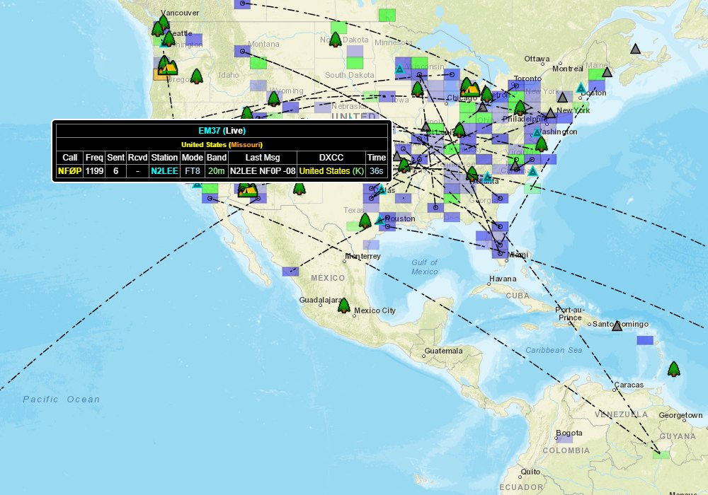
Right-click a grid to pop its details out into a separate window that stays open. Callsigns there can be clicked to look them up.
Shift+right-click selects the text so you can copy it.
While no award layer is shown, right-click and hold on an empty part of the map to see that grid’s name, its distance and bearing from you, its latitude and longitude, and every DXCC entity and state that shares it.
With Auto Mouseover Grids off (Settings → Map), click and hold a grid to see its details.
Paths¶
When two stations are in a QSO, a line (a great-circle path) is drawn between their grids. QSX paths are traffic between other stations; QRZ paths involve you. With Animate on (Settings → Map, or Ctrl+J), the paths move in the direction of the traffic. A station that doesn’t send a grid is drawn at the center of its DXCC entity when Missing Grid DXCC Fallback is on.
When a station calls a directed CQ (CQ NA, CQ EU, CQ JA…), the area they are calling is outlined, while Outline Directed CQ Areas is on.
Lookup-derived grids¶
When a station hasn’t sent its grid, GridTracker2 may find it another way: from a callsign lookup, the US or Canadian callsign database, PSK-Reporter spots or GridTracker2’s own spotting network. A grid found this way is a likely location rather than a certain one, and is marked with a diamond (◇) in the rosters.
Push Pins¶
Click the Push-Pin Mode button (or press Ctrl+P) to show a pin for each station instead of colored grids. Pins are drawn in the band colors:
a plain pin for a station you have worked;
a pin with a black cap for a confirmed QSO;
a diamond head for a station you are hearing now.
In MH4 pin mode with Band set to Mixed, logbook pins use the Gridsquare Colors for worked and confirmed. A Maidenhead Width button appears in pin mode to switch between 4- and 6-character placement.
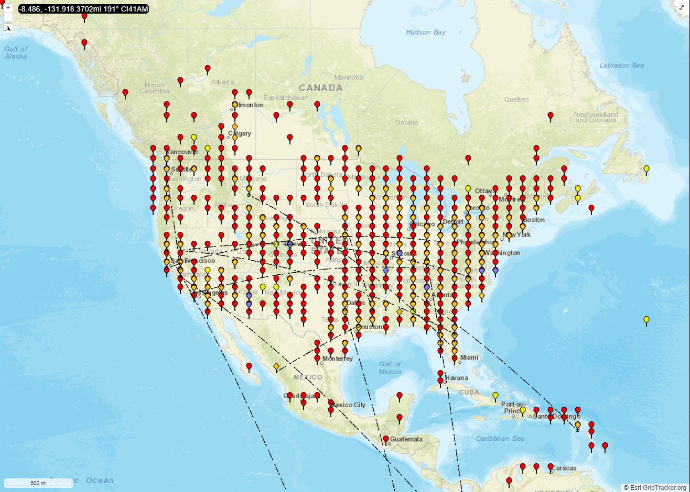
Projections¶
The Projection button (or Ctrl+W) switches between the flat Mercator map and an azimuthal equidistant (AEQD) map centered on your grid. On the AEQD map, straight lines from the center are great-circle paths, so the direction to any station is its true bearing from you, the way your beam points. Grids farther than about 11,500 miles aren’t drawn on it.
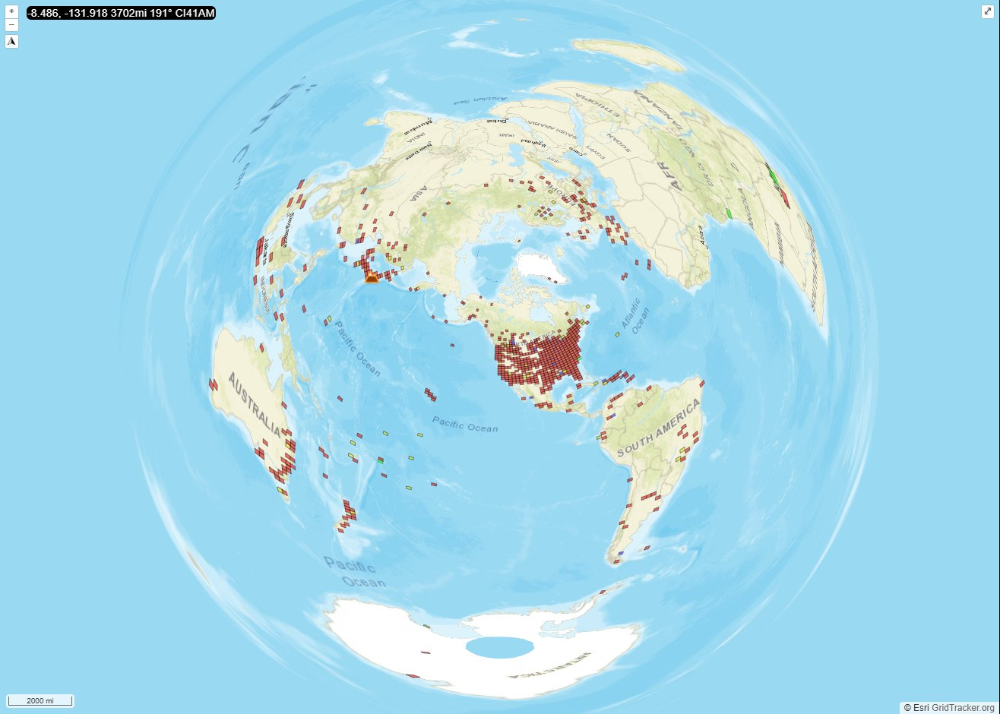
Base Maps¶
Settings → Map offers more than 35 base maps: street, topographic, satellite, ocean, dark and light maps from Esri, OpenStreetMap, Carto, OpenTopoMap, USGS, NASA and others. Newer additions include Topographical by OpenTopoMap, Topographical, Satellite and Satellite Topo by USGS, and Satellite Firefly by Esri. Auto Night Map switches to a second map at night. Offline Mode uses the maps that are built into GridTracker2.
Overlays¶
Grayline¶
The Grayline button (or Ctrl+N) shades the night side of the Earth. Settings → Map sets how dark it is, and where the terminator (the edge between day and night) is drawn: at the horizon, or at civil, nautical or astronomical twilight.
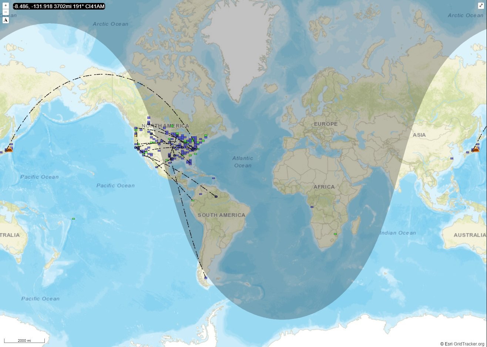
Range Rings, Parallels and Meridians¶
Range Rings draws circles around your grid at the distance set in Settings → Map. Major Parallels and Meridians draws the Equator, the Tropics of Cancer and Capricorn, the Arctic and Antarctic Circles, the prime meridian and the 180° meridian. Both work in either projection, in the colors chosen in Settings → Map.
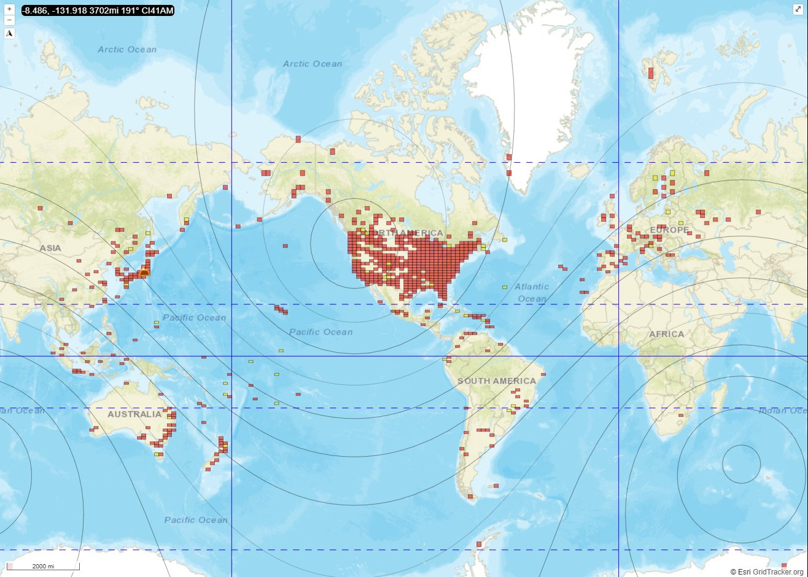
Maidenhead Grid Lines¶
All Grid Overlay (or Ctrl+B) draws the grid lines and labels them. As you zoom in, the labels change from the two-letter fields (DM) to the four-character squares (DM78). Its opacity is set in Settings → Map.
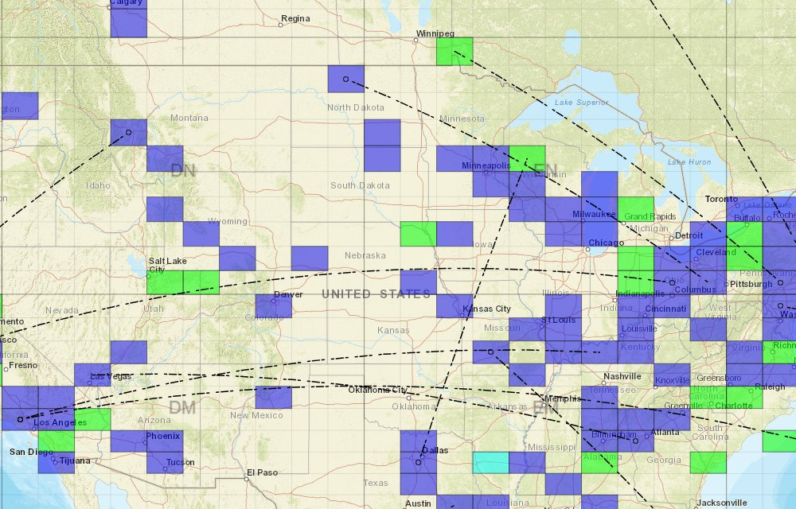
Time Zones¶
Time Zones (or Ctrl+H) shows the world’s time zones. Hold the mouse over a zone to see its name, its offset from UTC and its local date and time.
Moon¶
Moon (or Ctrl+D) shows where the Moon is overhead. Hold the mouse over it to see its azimuth and elevation from your grid: red below the horizon, yellow below 10°, green above.
US Weather Radar¶
US Radar (or 0) shows the US weather radar from the National Weather Service, refreshed every 10 minutes.
Prediction Layers¶
The Prediction Layer button cycles through propagation prediction maps. Right-click it to choose one directly, and to show or hide its legend in the corner of the map. Settings → Map sets how opaque they are.
Maximum Usable Frequency: the highest frequency that will reflect off the ionosphere, from KC2G.
Critical Frequency NVIS: the critical frequency (foF2) for near-vertical incidence skywave, from KC2G.
Es Probability Index: where sporadic E is likely, from PROPquest. A slider moves the prediction up to 11 hours ahead or back.
Probability of Aurora: from NOAA’s Space Weather Prediction Center.
Tropospheric Inversion VHF: where tropospheric ducting may carry VHF and UHF signals, with areas of 6 m sporadic E, from vhf.dxview.org.
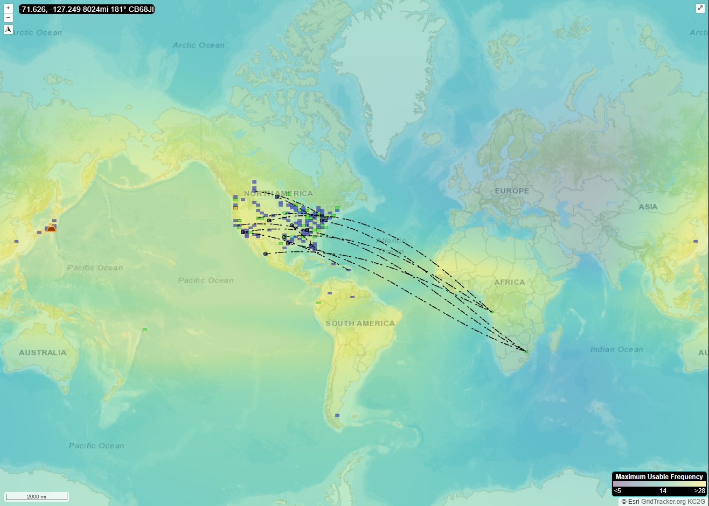
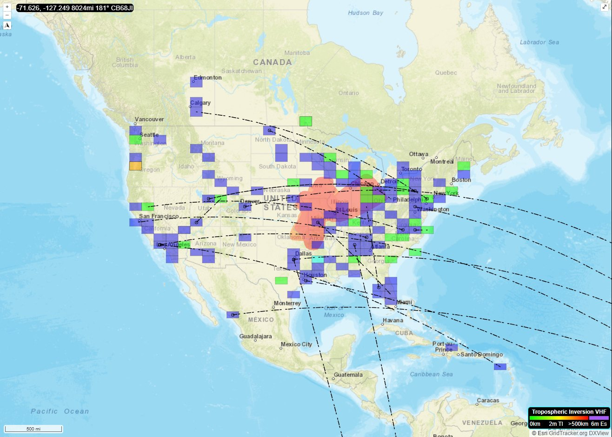
RX Spots¶
The Spot Reports button shows where your signal has been heard: RX Spots places each station that heard you on the map, and RX Heatmap shows the same reports as a heat map. Spots come from PSK-Reporter and from GridTracker2’s own spotting network, and need Spotting turned on in Settings → Features. Hold the mouse over a spot to see who heard you, how well, and when.
A legend in the corner of the map shows how many spots there are, and Max Age, how far back they go. Type hours and minutes into its boxes, or use its slider. Right-click the Spot Reports button to show or hide the legend.
With Spots Over Grids on (Settings → Features, or Ctrl+T), the spots are drawn over your grids; with it off, they replace them while shown.
Award Layers¶
Choose an Award in the Map View Filters, or press a number key, to color the map by your progress toward an award: confirmed areas in green, worked but unconfirmed areas in yellow, and areas you still need with a faint red tint.
Key |
Award layer |
|---|---|
1 |
None (back to the grid map) |
2 |
CQ zones |
3 |
ITU zones |
4 |
Worked All Continents (WAC) |
5 |
Worked All States (WAS) |
6 |
DXCC entities |
7 |
US counties (USA-CA) |
8 |
US continental grids (US48) |
9 |
Canadian provinces (WACP) |
= |
Cycle through them |
Hold the mouse over a zone, state, county or entity to see the bands and modes you have worked and confirmed it on, or “Needed”. Like everything else, the award layers follow the Band, Mode and Prop filters: set them to Mixed to see your progress on all bands and modes.
While an award layer is shown, the grids, paths and spots are hidden. Turn on Keep Other Layers With Award View in Settings → Map (or press Ctrl+U) to keep them.
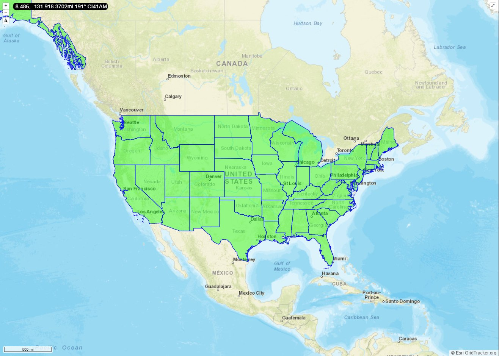
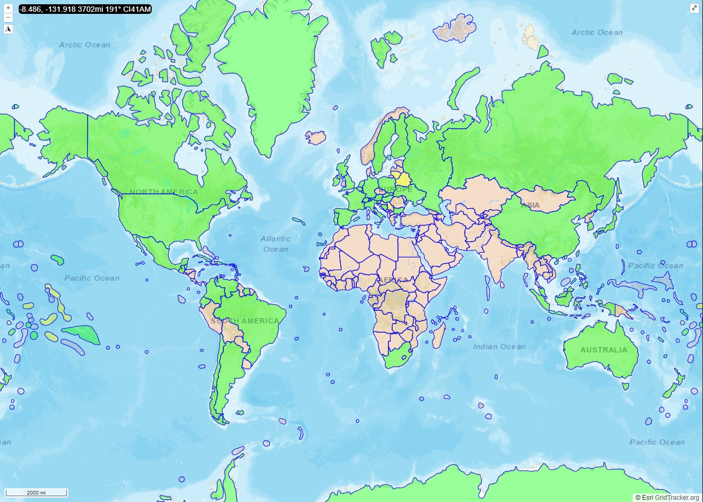
Spot Markers¶
POTA parks, SOTA summits and DX Feeds spots each have their own markers and button. All of them follow the Band and Mode filters, and their tooltips list every spot on that marker.
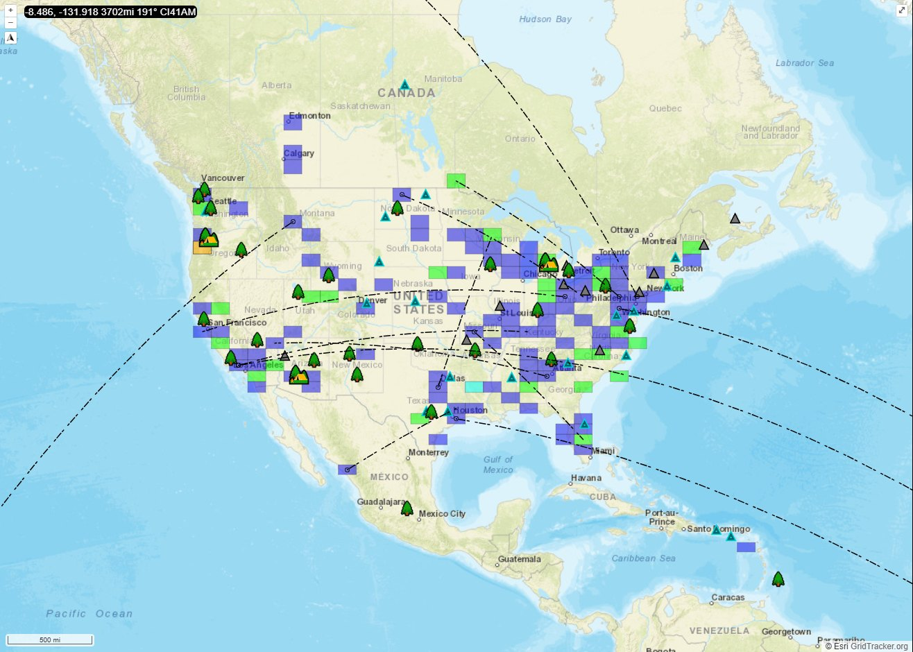
Each kind of marker has three looks:
DX Feeds |
||
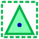 |
||
SOTA |
||
POTA |
||
Hover over a marker for its details. Right-click a POTA park to pop the tooltip out into its own window.
Click a marker to work the spot: it goes to a radio already on the spot’s band and mode (WSJT-X, JTDX, AC Log or Log4OM); otherwise to a connected AC Log or Log4OM, which can also tune your rig; otherwise to the active WSJT-X or JTDX as Gen Msgs. Where markers are stacked, only the top one is worked.
A marker for the callsign in a radio’s DX Call is ringed, so you can find it on the map.
With Group Overlapping Spots on (Settings → Map), markers in the same DXCC entity that would overlap are combined into one, with a compact tooltip (“POTA Spot × 3”, “Feed Spot × 2”).
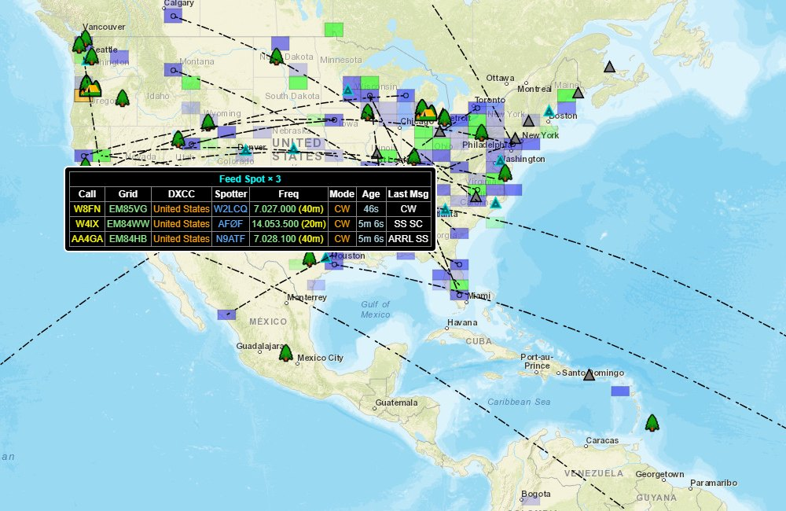
See Parks On The Air, Summits On The Air and The Feed Roster and DX Feeds for more.
GridTracker Spotters¶
The GridTracker Spotters button (or Ctrl+G) shows a flag for each GridTracker2 user who is spotting, filtered by the Band and Mode filters. Hover over a flag for their call, grid, band, mode, distance and bearing; the call is green if you have a confirmed QSO with them, yellow if worked, and cyan if new on your current band and mode. Click a flag to look the station up.
Map Position¶
The top left corner shows the latitude, longitude, distance, bearing and 6-character grid under the mouse pointer. Press Ctrl+X to hide or show it.
Press Shift+F5 to Shift+F10 to remember up to six map views, and F5 to F10 to return to them.
Rotator¶
With Rotor Control turned on in Settings → Features, Ctrl+click anywhere on the map to turn your antenna toward that point.
The Side Panel¶
The side panel runs down the right side of the main window (or the left, with Control Panel On Left Side in Settings → General). From top to bottom it has the operating information, the status bar, the band activity graph, the Quick Stats, the Map View Filters and the button panel. What used to be the message list at the bottom is now the Event Viewer. The band activity graph, Quick Stats and Map View Filters can be moved above or below the buttons, see Rearranging the Panel.
Click the title “GridTracker2” at the top to hide the panel and give the whole window to the map. Click the ↔ that appears, or press F12, to bring it back.
Operating Information¶
Frequency, band and mode: the frequency and band your active radio program is on, and its mode. Hover over them for a reminder of what they are.
Date and time: click to switch between UTC and your local time.
The station you are working: the callsign you are calling or last called, their grid and their last signal report. The line below gives their DXCC entity, the distance and the bearing (heading) to them.
Click the callsign to open the Lookup window for it.
Right-click the callsign to open your Logbook filtered to that station (Shift+right-click shows only confirmed QSOs).
Click their grid to center the map on it.
Several radios¶
When more than one WSJT-X, JTDX, AC Log or Log4OM is sending to GridTracker2, a selector appears under the operating information. The ◀ and ▶ arrows step through them, and the panel and map follow the one you choose. Each WSJT-X instance appears under its name (WSJT-X started with --rig-name=HF shows as “HF”).
GridTracker2 remembers which one you were watching when you closed it. At the next start it shows the first one it hears, then switches back to the remembered one as soon as that one starts sending, within 30 seconds of the map appearing. That way an instance that starts first, such as the Multi-Mode Decoder’s, doesn’t take over the view. If you pick one with the arrows before then, your choice stays.
Status Bar¶
The status bar shows what your active radio program is doing:
Text |
Color |
Meaning |
|---|---|---|
waiting for message |
green |
Nothing has been received from WSJT-X or JTDX yet. |
RECEIVE |
green |
Receiving. |
DECODE |
blue |
Decoding. |
TRANSMIT |
red |
Transmitting. |
CONNECTED |
green |
AC Log or Log4OM is the active radio. |
name CLOSED |
purple |
The active WSJT-X or JTDX has been closed. |
IGNORE |
gray |
GridTracker2 is ignoring incoming messages. |
Click the status bar to stop reading incoming WSJT-X and JTDX messages, for example while you test something; it then shows IGNORE. Click it again to resume.
Band Activity¶
The bar graph shows how busy each band is around your grid in your current mode. Your current band’s label is circled.
Red bars: the band activity score from PSK-Reporter, for your grid and mode.
Blue bars: activity seen by GridTracker2’s own network (Off-Air Services).
Hold the mouse over a bar to see the numbers behind it: the score, how many stations were spotted, and how many are transmitting and receiving. Right-click the graph to pop it out into its own small window that you can place anywhere on your screen; right-click that window to close it.
The graph needs Off-Air Services and Band Activity turned on in Settings → Features. Neighboring Grids adds the activity of the eight grids around yours.
Quick Stats¶
Rx Calls: how many callsigns you have heard this session.
Rx DXCC: how many DXCC entities you have heard this session.
QSO: how many QSOs are in your logbook.
QSL: how many of them are confirmed.
Click a number to open the matching list in the Statistics window: Rx Calls and Rx DXCC open the Live tab, QSO opens the Logbook, and QSL opens the Logbook showing confirmed QSOs only.
Clear Live clears everything you have heard this session: live grids, paths, callsigns and the Rx Calls and Rx DXCC counts.
Clear Log clears your logbook from GridTracker2’s display. It doesn’t delete any files. The button then reads Load Log; click it to load your logs again. You might clear the log to change which logs are loaded, see Logging Options.
When your Logbook Filters leave out some QSOs, an orange Log Entries Filtered line appears here. Click it to open the filters.
Tip
What counts as a QSO and a QSL depends on which logs you load. WSJT-X’s own log only knows that you logged a QSO, not whether the other station confirmed it. To see confirmations, load your LoTW, QRZ.com or ClubLog log, or a log from your logging program, in Settings → Logging.
Map View Filters¶
The Map View Filters choose which part of your logbook and live traffic is shown on the map. They also apply to the award layers, the Statistics window, and the POTA, SOTA and DX Feeds markers. Click the – in the corner to fold the box away; click its title to open it again.
Band: Auto follows the band your radio program is on. Mixed shows all bands. Or pick a single band.
Mode: Auto follows your current mode. Mixed shows all modes. Digital and Phone show those groups. Or pick a single mode.
Prop: the propagation mode recorded in your log (Satellite, EME, Meteor Scatter, Sporadic E and so on), or Mixed for all.
Data: Live shows what you are hearing now, Logbook shows your QSOs, and Logbook & Live shows both. Ctrl+Q cycles through them.
Award: shows an award layer: CQ zones, ITU zones, continents (WAC), US states (WAS), DXCC, US counties (USC), US48 grids, or Canadian provinces (WACP). See Award Layers.
Tip
If QSOs seem to be missing from the map, check these filters first. To see everything you have ever worked, set Band, Mode and Prop to Mixed and Data to Logbook.
The Button Panel¶

The buttons open windows and turn map layers on and off. A button that is turned off is drawn in gray. Some buttons only appear while the feature they belong to is turned on, so your panel may have fewer or more buttons than shown here.
You can drag a button to another place in the panel to rearrange them. Reset Button Order in Settings → General puts them back in their default order.
Buttons that open a window toggle it: click once to open, again to close. Right-click one of them to bring its window forward without closing it.
Button |
Name |
What it does |
Hotkey |
|---|---|---|---|
Re-center map |
Centers the map on your grid, turns it back to north up and resets the zoom. |
Ctrl+Z |
|
Projection |
Switches between the flat (Mercator) map and the azimuthal equidistant (AEQD) map centered on your grid. Each keeps its own view. |
Ctrl+W |
|
Call Roster |
Opens the Call Roster window. |
Ctrl+F |
|
Push-Pin Mode |
Switches between colored grid squares and push pins. |
Ctrl+P |
|
Maidenhead Width |
In push-pin mode only: MH6 places pins on the 6-character sub-square when a station sent one (otherwise on its 4-character square), MH4 places every pin on its 4-character square. |
||
Statistics |
Opens the Statistics window with your logbook and award progress. |
Ctrl+I |
|
Grayline |
Shades the night side of the Earth. |
Ctrl+N |
|
Moon |
Shows the Moon’s position. Hover over it for its azimuth and elevation, useful for EME. |
Ctrl+D |
|
User Guide |
Opens this User Guide in its own window. Type in the search box at its top to find a word (Enter for the next match, Shift+Enter for the previous one). Its toolbar zooms, prints or saves it, and its ☰ button shows page thumbnails and the contents. Esc closes the window. |
||
Audio Mute |
Mutes or unmutes all of GridTracker2’s sounds and spoken alerts. |
Ctrl+M |
|
Settings |
Opens the Settings panel. |
Ctrl+S |
|
Load ADIF Log |
Opens any ADIF log file and adds it to your logbook. The file is also added to Local File(s) in Settings → Logging, so it loads at every start. |
Ctrl+L |
|
Reload Local ADIF Files |
Reloads the local files listed in Settings → Logging. Shown when its Menu Button is ticked. |
||
Time Zones |
Shows the time zones. Hover over a zone to see its name, offset and local time. |
Ctrl+H |
|
All Grid Overlay |
Draws and labels the Maidenhead grid lines. |
Ctrl+B |
|
Major Parallels and Meridians |
Draws the Equator, the tropics, the polar circles and the prime meridian. |
||
Range Rings |
Draws distance rings around your grid. |
||
US Radar |
Shows the US weather radar. |
0 |
|
Prediction Layer |
Cycles through the propagation prediction layers. Right-click to pick one directly, and to show or hide its legend. See Prediction Layers. |
||
Current Conditions |
Opens the Conditions window. While GridTracker2 receives the planetary K index, the button shows it, with an arrow for its trend; it pulses during a geomagnetic storm (Kp above 5). |
Ctrl+E |
|
Spot Reports |
Cycles between off, RX Spots (the stations that heard you, on the map) and RX Heatmap. Right-click to pick one directly and to show or hide the spots legend. |
Ctrl+O |
|
Lookup |
Opens the Lookup window. |
||
PSK 24 Hour Report |
Loads the stations that heard you on PSK-Reporter in the last 24 hours. |
||
QRZ.com Log |
Downloads your QRZ.com logbook. |
||
LoTW Log |
Downloads your Logbook of The World confirmations. |
||
ClubLog Log |
Downloads your ClubLog logbook. |
||
N3FJP Log |
Downloads the log from N3FJP AC Log. |
||
Parks On The Air |
Shows POTA activations on the map. Shown while POTA Hunting is on. |
||
GridTracker Spotters |
Shows the other GridTracker2 users who are spotting. Hover over the button to see how many are on the map. |
Ctrl+G |
|
DX Feed Spots |
Shows DX Cluster and CW Skimmer spots on the map. Shown while DX Feeds is on. |
||
Summits on the Air |
Shows SOTA activators on the map. Shown while SOTA Chasing is on. |
||
Santa Tracker |
Follows Santa and his reindeer around the world. Shown from December 1st to 25th. |
||
|
Event Viewer |
Shows the Event Viewer. Right-click to choose whether it shows over the map or in a window of its own. |
|
|
Toggle Satellite Tracking |
Turns BirdWatch’s satellite tracking on and off: its panel, the satellites on the map, and its Auto-Track, Doppler and Pass Timeline buttons. Shown while BirdWatch is on. See BirdWatch. |
Ctrl+F12 |
|
Toggle Multi-Mode Decoder |
Opens the Multi-Mode Decoder window; right-click to bring it forward. A green dot on it means the decoder is listening in the background (FT8, FT4 or WSPR). Shown while Multi-Mode Decoder is on. |
|
|
Cast |
Shows the map on a TV through a Google TV Streamer or Chromecast; click again to stop. Right-click to pick the device. Shown while Enable Casting is on, and can be clicked once a Cast device has been found. See Casting the Map. |


The log download buttons (PSK, QRZ.com, LoTW, ClubLog and N3FJP) appear when you tick their Menu Button in Settings → Logging. Online buttons are hidden in Offline Mode.
Santa Tracker¶
From December 1st the Santa Tracker button appears. Turn the tracker on to see a countdown, at the top of the map, until Santa leaves at midnight on December 24th (your time). Then a box on the map shows where he is, his next stop and how many gifts he has delivered. Click where he is to center the map on him, and hover over a stop to see its DXCC entity and state or province.
Casting the Map¶
Turn on Enable Casting in Settings → General → Display to add the Cast button. It sends the map, as the main window shows it, live to a TV through a Google TV Streamer or Chromecast on your network.
The button is dimmed until GridTracker2 has found a Cast device on your network; it keeps looking every half minute until one answers. Right-click the button to look again.
Click the button to start casting. With one Cast device found, GridTracker2 casts to it; with more, it lists them, as a right-click does. Click the button again to stop.
Right-click the button to see the Cast devices found on your network. Pick one to cast to it; GridTracker2 remembers it and checks it in the list. While casting, the menu also has Stop Casting.
After the click, GridTracker2 makes about 12 seconds of the map’s video before it tells the TV to play it, so the TV has enough to start smoothly. Meanwhile the button is in color and its tooltip says the video is being prepared; a click stops. The TV shows the map about 10 seconds behind.
While casting, the button is in color and its tooltip names the device. The main window is sized to the TV’s 16:9 shape, and goes back to its size when casting stops. A maximized or full screen window is left as it is.
Starting and stopping, and a device that can’t be reached, are shown in the Event Viewer.
The video is served from this computer on the Port under Enable Casting (21575 unless you change it). If your firewall asks, allow GridTracker2 on your home network. The port can be changed while Enable Casting is on and nothing is being cast; those watching the video then open its address again.
The video’s address, such as
http://192.168.1.20:21575/map.m3u8, is shown beside Enable Casting. Click it to copy it. While Enable Casting is on, anyone on your network can open it in VLC (Media → Open Network Stream) or in a browser that plays HLS video, to watch the map on another screen, with or without a cast. The video starts a few seconds after it’s opened, and stops being made when nobody has watched it for 30 seconds (a cast counts as watching; cast again within those 30 seconds and the TV starts at once).
GridTracker2 uses the computer’s hardware video encoder. On a computer without one (Linux with an NVIDIA graphics card, for example), the video is made in software, which uses more CPU; the Event Viewer says so when it starts. Then Software Frame Rate (1 to 30 frames a second, 10 unless you change it) and Software Resolution (480p, 720p, 1080p, 1440p or 4K; 720p unless you change it) appear under Enable Casting: more frames are smoother and a bigger picture is sharper, and both use more of your CPU. While casting, the main window is sized to the Software Resolution (as far as your screen allows), so the map is captured at that size. A change takes effect the next time the video starts. An older Chromecast shows at most 1080p.
Rearranging the Panel¶
The band activity graph, the Quick Stats and the Map View Filters can each be moved above or below the others, and above or below the button panel. Move the mouse to the top border of a box: the cursor changes to a hand. Drag the box from there to where you want it; the space it will drop into is shown dimmed as you go. GridTracker2 remembers the order.
Reset Panels in Settings → General puts the boxes back in their usual order.
Event Viewer¶
Click the Event Viewer button in the button panel to see what has happened, newest first. Each event has its Time, its Source (GridTracker, Logging, Decode, WSJT-X, Roster, BirdWatch, Rotor, SOTA or Cast) and the Event itself:
band and mode changes;
decodes that set off a Custom Alert, with a 🚩;
each new QSO (”▲ New QSO call ▲”), and the result of sending it to each of your logs, for example “Logged to QRZ.com”, or a failure;
“Spotted to POTA” when a park QSO was spotted;
BirdWatch’s announcements and the rotator’s moves;
screenshots, Call Roster script changes, callsign database updates and new versions of GridTracker2. When a new version has downloaded, an Install and Restart button in its event installs it and restarts.

Your own callsign is shown in yellow, and the station you are working in cyan. Events are kept for this session only, and never longer than a day. Clear, in the list’s header, empties the list.
The Event Viewer opens over the map, like the Settings panel; click its red X or press Esc to close it. Drag it by its title bar to move it, and drag its bottom right corner to make it bigger or smaller. It comes back where you left it.
Right-click the Event Viewer button to choose where it shows: View In Main (the panel over the map) or View As Window (a window of its own, which you can put anywhere on your screen).
With Open Event Viewer On Error on in Settings → General, an error, such as a log upload that failed, opens the Event Viewer by itself.
GridTracker2 Settings¶
Click the Settings button (the gear) in the button panel, or press Ctrl+S, to open the Settings panel over the map. Click the red X in the top right corner, press Esc, or click the gear again to close it.
The tabs along the top are General, Features, Radios, Lookups, Audio, Map, Colors, Feeds, Logging, Audio Alerts, Custom Alerts, Logbook and About. The Radios tab only appears while Rig Control, Rotor Control or Network Audio is turned on, and the Feeds tab while DX Feeds is. While BirdWatch is turned on, its own tabs, BirdWatch, Skeds, Display, Alerts, Telemetry and Satellites, appear in a row above the others; see BirdWatch. In a narrow window, About moves up to that row so the others fit on one line.
Most tabs are divided into titled boxes. An option that depends on another one is indented under it, and is only shown while the option above it is turned on.
Tip
Hotkeys don’t work while the Settings panel is open, so they can’t be triggered by accident while you type in a settings field.
Note
The Call Roster and Feed Roster have their own settings, including the Watcher, Exceptions, Ignores and Columns tabs. They are in the roster window, see The Call Roster.
General Tab¶

Receive UDP Messages¶
How GridTracker2 receives messages from WSJT-X, JTDX and similar programs. The line at the top shows how long ago the last message arrived.
Multicast? Turn this on if WSJT-X sends to a multicast address (224.0.0.0 to 239.255.255.255), then enter that address in IP. Multicast lets several programs receive the same WSJT-X messages at once.
Port: the UDP port WSJT-X sends to, 2237 by default. The first time GridTracker2 runs it reads the address and port from your WSJT-X or JTDX settings.
See Appendix B for how to set up WSJT-X and JTDX to match.
Forward UDP Messages¶
GridTracker2 can pass every message it receives on to other programs, for example GridTracker2 on another computer, HamClock, or an online service such as ft8battle.com.
IP(s)/Hostname(s): one or more addresses or hostnames, separated by commas, e.g.
192.168.1.20,ft8battle.com. A hostname that can’t be found (a typo, or no internet) is reported under the field.Port: the port to send to, 2238 by default. It can’t be the same as the receive port.
Enabled? turns forwarding on and off.
Receive ADIF UDP Broadcasts For Logging¶
Programs such as fldigi can broadcast each logged QSO as an ADIF record over UDP. With Enabled? on, GridTracker2 receives them and logs them just like a QSO logged in WSJT-X: they are added to your logbook and sent to the logs you have chosen in the Logging tab. The default port is 2333. Turn on Multicast? and enter the IP if the program broadcasts to a multicast address.
Station¶
Callsign: your callsign, used while no WSJT-X, JTDX, AC Log or Log4OM is connected (for example when you only use DX Feeds). A callsign one of those programs reports is always used for that program. While this field is blank it takes the callsign WSJT-X or JTDX gives.
Gridsquare: your home grid. It centers the map and is used for distances and bearings. By default it is the grid from WSJT-X.
Elevation: your station’s height above sea level (in feet with miles or nautical miles as your distance unit, meters otherwise). BirdWatch uses it for where satellites are, their Doppler shift, and when they rise and set.
Display¶
Language (requires restart): the language of the interface. Choosing one saves your settings and restarts GridTracker2. See What’s New for the list.
App Theme: the colors of the information GridTracker2 shows, each color with one meaning everywhere outside the rosters. GridTracker2 (the default): frequency light green, band yellow, mode orange, callsign yellow (the other station’s cyan), grid cyan, country orange, distance cyan, bearing yellow, times light blue, warnings orange, errors red. Opus’ Choice: softer colors of one brightness, a different color for each thing shown side by side (frequency mint, band lavender, mode peach, callsign gold, country pink, distance aqua, bearing lime, times periwinkle, needed pink-violet), labels a step dimmer than the information beside them, errors still red. The menu lists the themes alphabetically; the other 27 are:
Retro computers: EGA (the 16-color EGA palette, gray buttons and blue tabs), CGA (the classic cyan, magenta and white, yellow for warnings), VGA (the DOS 16-color look, with blue and cyan text boxes and tabs), Amber CRT (an amber monochrome terminal), and Apple ][e, VIC-20 and C-64 (each computer’s own colors and text-box look).
Nature and seasons: Inferno (golds, ambers, flame orange and white-hot), Frost (ice blues, teal, lilac and white), Sunflower (petal yellows, leaf greens, sky blue and seed brown), Country Kitchen (butter yellow, sage, copper and cream with gingham-blue tabs), Autumn (pumpkin, mustard, olive and cream), Deep Sea (glowing aqua, coral, kelp green and sand on navy), Aurora (northern-lights greens, teals and violets), Sunset (gold, coral, rose and lavender on plum), Food Forest (layered leaf greens, apricot, plum, persimmon and fig on bark) and Prairie Home (wheat gold, prairie sage, big-sky blue, coneflower and barn rust on weathered barnwood).
Just for fun: Bubble Gum (pink, lavender, mint, baby blue and lemon), Synthwave (neon cyan, magenta, mint and sunset orange on purple), Cyberpunk (acid yellow, cyan, magenta and neon green) and Matrix (terminal greens with white for callsigns and titles, amber for warnings).
Modern and easy on the eyes: Graphite (a modern dark mode, muted colors and one blue accent), High Contrast (pure colors, white text and borders, for low vision and bright rooms), Colorblind Safe (the Okabe-Ito colors, which stay apart with red-green color blindness), OLED Minimal (true black, white and gray, color only for warnings and errors), Night Vision (dim reds that keep your eyes dark-adapted; errors are white, since everything is red) and Grayscale (shades of gray only, values brighter than labels, with red kept for errors).
The theme also colors the buttons, text boxes, dropdowns, checkboxes, tabs and sliders, the box frames of the control panel and the BirdWatch panel, and the RECEIVE / DECODE / TRANSMIT box, in every window, the rosters included. A theme you choose recolors every open window at once. The Call Roster and Feed Roster keep the callsign, grid and other colors set in their own Settings.
Window Theme: Dark, Light or System.
Distance Units: Kilometers, Statute Miles, Nautical Miles or Degrees.
Control Panel On Left Side: puts the side panel on the left of the window and the map on the right.
Open Event Viewer On Error: an error, such as a log upload that failed, opens the Event Viewer.
Enable Casting: adds the Cast button to the button panel, to show the map on a TV through a Google TV Streamer or Chromecast. See Casting the Map. While it’s on, the video’s address is shown beside it; click it to copy it, to watch the map in VLC or a browser on your network.
Port: the port the map’s video is served on (21575 unless changed). It can be changed while Enable Casting is on and nothing is being cast; with Enable Casting off it’s grayed out.
Software Frame Rate and Software Resolution: shown only on a computer without a hardware video encoder, where the map’s video is made in software: its frames a second (1 to 30) and its size (480p to 4K). See Casting the Map.
Settings¶
Reset Panels: puts the boxes of the side panel (band activity, Quick Stats, Map View Filters) back in their usual order, see Rearranging the Panel.
Reset Button Order: puts the buttons in the button panel back in their default order.
Export Settings saves all your settings to a file (the suggested name is
GridTracker2 Settings.json). Import Settings loads such a file and restarts GridTracker2. Use this as a backup, or to move your settings to another computer. Files from versions older than 2.241005 can’t be imported.Clear All Settings! returns every setting to its default. It only works while Yes, I’m sure! is ticked.
On QSO Reply¶
This box only appears while more than one WSJT-X or JTDX is sending to GridTracker2.
Halt Tx On All Other Instances: when you reply to a station from one instance, transmitting is stopped on the others.
Switch View to Transmitting Instance: the main window follows the instance that is transmitting.
Features Tab¶
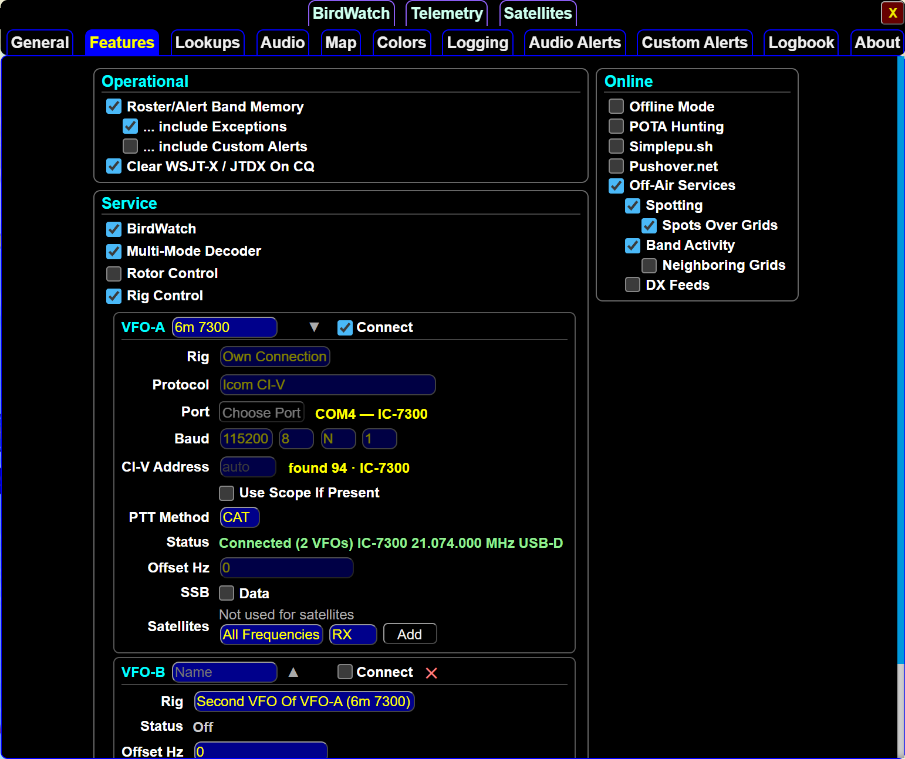
Operational¶
Roster/Alert Band Memory: the Call Roster’s Logbook, Hunting and Wanted choices and your Audio Alerts are remembered separately for each band and mode. An M badge shows next to their headings while this is on. It works while a single WSJT-X or JTDX is running; with several, the same settings are used for all bands and modes.
… include Exceptions also remembers the Exceptions for each band and mode.
… include Custom Alerts also remembers the Custom Alerts for each band and mode.
Clear WSJT-X / JTDX On CQ: when you start calling CQ, the DX Call and DX Grid left over from your last QSO are cleared in WSJT-X or JTDX.
Service¶
BirdWatch (Satellite Tracking): passes, the satellites on the map, and Doppler-corrected tuning of your rig. Turning it on adds its buttons and its own Settings tabs. See BirdWatch.
Multi-Mode Decoder: decodes CW, FT8, FT4, PSK, RTTY, SSTV and many other modes from your rig’s or an SDR’s audio, in a window of its own. Turning it on adds the Toggle Multi-Mode Decoder button. See The Multi-Mode Decoder.
Rotor Control: turns your antenna rotator toward a station (the roster’s Aim Rotator, or Ctrl+click on the map) or a BirdWatch satellite. The rotator can be on a serial port (Yaesu GS-232, Easycomm II, SPID), or reached through Hamlib’s rotctld, CatRotator or PstRotator. See Rig and Rotor Control.
Rig Control: GridTracker2’s own connection to your rigs and SDRs (rigctld, flrig, Icom CI-V, Icom LAN, FlexRadio SmartSDR, Kenwood or Yaesu CAT, SPY Server, SDR++), set up as a list of VFOs. The Multi-Mode Decoder and BirdWatch use it. See Rig and Rotor Control.
Network Audio: audio over your network (VBAN, RTP, PipeWire / PulseAudio) as Input and Output Devices of the Multi-Mode Decoder. See Network Audio.
Rotor Control, Rig Control and Network Audio are set up in the Radios tab.
Radios Tab¶
This tab, to the right of Features, appears while Rig Control, Rotor Control or Network Audio is turned on. It has a box for each one that is on:
Rig Control: the VFOs, see Rig and Rotor Control.
Rotor Control: the rotator’s connection and Follow Satellite, see Rotor Control.
Network Audio: the audio streams, see Network Audio.

Online¶
Offline Mode: turns off every online service, for example for Field Day or a POTA activation without internet. The online maps are replaced by the offline maps, and the Conditions, Lookup, POTA and radar buttons and the online logbook buttons are hidden. Ctrl+Y also toggles it.
POTA Hunting: shows Parks On The Air activations on the map, and adds the POTA Wanted choice and POTA column to the Call Roster. See Parks On The Air.
Simplepu.sh and Pushover.net: send roster alerts to your phone. Each shows its own box when turned on, see Push Notifications.
Off-Air Services: GridTracker2’s own online services. While it is off, the GridTracker Spotters, Spot Reports and DX Feed Spots buttons and the band activity graph are hidden. The options under it are:
Spotting: shows where your signal has been heard (RX spots) on the map.
Spots Over Grids: shows the spots over your grids instead of in their place.
Band Activity: the band activity graph in the main panel, from the activity around your grid.
Neighboring Grids: includes the activity in the grids around yours.
DX Feeds: DX Cluster and CW Skimmer spots, for the Feed Roster and the map. Turning it on adds the Feeds tab, the Feed Roster and a DX Feed Spots button. See The Feed Roster and DX Feeds.
SOTA Chasing: Summits on the Air activators from the DX Feeds spots. See Summits On The Air.
Note
Turning on POTA Hunting or SOTA Chasing also turns on Load At Startup and Log QSO for the GridTracker2 log in the Logging tab. GridTracker2 needs its own log to know which parks and summits you have already worked.
Lookups Tab¶

Callsign Lookup Service¶
The website used for callsign lookups:
CALLOOK (US Only): the default. Free, no login, but US callsigns only.
HamQTH: free, login required.
QRZ.com: free and paid members.
QRZCQ.com: paid members only.
For every service except CALLOOK, enter your Username and Password and click Test.
Lookups¶
Add Lookup Data to QSO Log event: when you log a QSO, details from the lookup (name, QTH and so on) are added to the QSO GridTracker2 logs.
Add Lookup Grid if QSO Grid Missing: if the QSO has no grid, the grid from the lookup is used.
Open Lookup on Transmit: opens the Lookup window for the station whenever you start transmitting to it.
Close Lookup After Logging: closes the Lookup window after the QSO is logged.
Callsign Databases¶
Databases GridTracker2 downloads and keeps up to date. The table shows when each was last downloaded and how many callsigns it holds.
Big CTY: the country (DXCC) prefix list. Always on.
US Callsigns: the FCC license database. Needed for the State and County columns in the rosters.
Canada Callsigns: the Canadian license database, for Canadian provinces.
Logbook of The World: which stations use LoTW, and when they last uploaded. Needed for the LoTW column and the Uses LoTW exception.
eQSL: which stations use eQSL.
ClubLog OQRS: which stations accept QSL requests through ClubLog OQRS.
Audio Tab¶
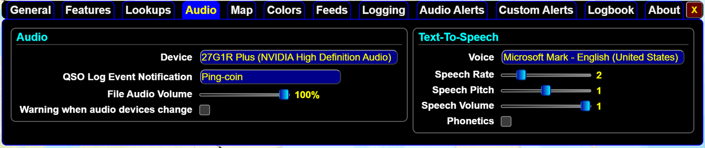
Audio¶
Output Device: the sound device GridTracker2 plays its alerts on.
QSO Log Event Notification: a sound played whenever a QSO is logged.
File Audio Volume: the volume of sound file alerts.
Warning when audio devices change: warns you when your sound devices have changed, for example when a USB headset is unplugged. It also warns when an input device the Multi-Mode Decoder listens to has changed or gone missing.
Warning
Don’t choose the sound card that connects your computer to your radio. GridTracker2’s alerts would be transmitted.
Text-To-Speech¶
The Voice, Speech Rate, Speech Pitch and Speech Volume of spoken alerts. Phonetics speaks callsigns and grids phonetically (Kilo Seven…).
Map Tab¶

Base Map¶
Map: the map drawn under everything else. There are more than 35 to choose from, including street, topographic, satellite and dark maps. In Offline Mode the offline maps are listed instead. A few maps need an API Key; its field appears when you pick one.
Brightness: dims the base map, so the grids stand out.
Background Color: the color shown where the map has no tiles, for example beyond the edge of a projection. It is kept for each map.
Auto Night Map: switches to a second map at night. While it is on, a Night column appears with its own map, brightness and path colors.
Paths¶
The width and color of the lines drawn on the map:
QSX: traffic between two other stations.
QRZ: traffic involving you.
RX Spot: paths to the stations that heard you (shown while Spotting is on). Its color can follow the band colors.
Animate: makes the paths move in the direction of the traffic, at the chosen speed. Ctrl+J also toggles it.
Grayline¶
Darkness: how dark the night side of the map is.
Terminator: where the line between day and night is drawn: Horizon, Civil, Nautical or Astronomical twilight.
Overlays¶
Range Rings Spacing: the distance between the range rings around your QTH, and their color. Turn the rings on with the Range Rings button.
Meridians & Parallels: the color of the Equator, tropics, polar circles and prime meridian, turned on with their button in the button panel.
Prediction Opacity: how opaque the propagation prediction layers are.
Grids¶
Grid Opacity: how opaque the colored grids are.
‘All Grid Overlay’ Opacity: how opaque the Maidenhead grid lines overlay is.
Live Grid Decay: how fast live grids fade out after they were last heard. “No Decay” keeps them until they expire.
Split QSL Grids: a grid you have worked that is also live is split diagonally: one half shows your logbook status, the other half the live traffic.
Auto Mouseover Grids: shows a grid’s details when you hold the mouse over it.
Display¶
Fit Map to QRZ: while you are transmitting, the map zooms to show you and the station you are working, then returns to your previous view.
Outline Directed CQ Areas: when a station calls a directed CQ (CQ NA, CQ EU, CQ JA…), the area they are calling is outlined on the map.
Missing Grid DXCC Fallback: a station that hasn’t sent a grid is drawn at the center of its DXCC entity.
Keep Other Layers With Award View: with an Award picked in the Map View Filters, grids, paths and spots stay on the map. Ctrl+U toggles it.
Group Overlapping Spots: POTA, SOTA and DX Feeds markers that would overlap are shown as one marker. Hold the mouse over it to see them all.
Map Settings Transparency: how see-through this tab is, so you can watch the map while you change the settings.
Colors Tab¶

Gridsquare Colors¶
The colors of the grids on the map, also shown in the map legend:
QSO / Worked and QSL / Confirmed: grids in your logbook.
QSX / Station-2-Station: live traffic between other stations.
QTH / Home Gridsquare: your grid.
‘CQ’ Stations and ‘CQ DX’ Stations: stations calling CQ.
QRZ / Your Traffic: stations calling you.
Band Colors¶
The color of each band. Band colors are used for map spots, pins and paths, in both rosters, in the Statistics window and in the Lookup window.
Each box has a Reset Colors button in its title to return to the defaults.
Feeds Tab¶
This tab appears while DX Feeds is turned on in the Features tab.

DX Feeds¶
Feed Spots Max Age: how long a feed spot stays on the map after it was last spotted, 1 to 60 minutes.
Clear All Feeds: clears all feed spots from the Feed Roster and the map. New spots keep arriving.
Allow Alert Script: lets feed spots run the roster alert script.
Allow Notifications (Pushover, Simplepush): lets feed spots send push notifications.
Modes and Bands¶
One tick box for each mode seen in feed spots, and for each band. Untick a mode or band to hide its spots in the Feed Roster and on the map.
Logging Tab¶
GridTracker2 is a log viewer, not a logging program. The Logging tab sets where your QSOs come from (which logs are loaded) and where new QSOs are sent. See Logging Options and Functions for how they fit together.

The columns are:
Connect: a live, two-way connection to the program (Log4OM and N3FJP AC Log). A dot next to it shows green while connected, red while not.
Menu Button: adds a button for that log to the button panel, so you can load it whenever you like.
Load At Startup: loads that log when GridTracker2 starts.
Log QSO: sends every new QSO to it.
Logbooks On This Computer¶
App Log(s): the log files of WSJT-X, JTDX and similar programs. GridTracker2 finds them automatically; use Add File to add others, and untick any you don’t want loaded.
GridTracker2: GridTracker2’s own backup log of the QSOs it logs. Backup Logs opens its folder. Keep this on if you use POTA Hunting or SOTA Chasing.
Local File(s): any other ADIF files you want loaded at startup. Click Add File (it also ticks Load At Startup). Files opened with the Load ADIF Log button are added here too.
Logging Programs¶
Logging programs on this or another computer, each with its IP address and Port:
ADIF UDP / N1MM: sends each QSO as ADIF over UDP, for N1MM Logger+, HRD Logbook 6.9 and later, and other programs that accept it.
Log4OM: Connect links to Log4OM’s remote control. With Enable Rig Control on, clicking a spot also tunes your rig through Log4OM. See Log4OM.
N3FJP Loggers: AC Log and the other N3FJP loggers. QSL By picks which confirmation counts as a QSL. With Enable Rig Control on, clicking a spot tunes your rig through AC Log. See N3FJP AC Log.
DXKeeper: DXLab’s logbook.
HRD Logbook <= v6.8.x: older versions of Ham Radio Deluxe’s logbook. For version 6.9 and later use ADIF UDP / N1MM.
Online Logbooks¶
Enter your account details and click Test to check them.
QRZ.com: your logbook API Key (a QRZ.com subscription feature).
ClubLog: callsign, password and email.
LoTW: your LoTW website login and password, used to download your confirmations. To upload new QSOs, tick Log QSO, then choose the TQSL Path (not needed on macOS), your TQSL Password if your certificate has one, and the Station Name (your TQSL station location). Uploads that fail are queued and retried with the next QSO.
eQSL.cc: user, password, and optionally a QTH Nickname.
HRDLOG.net: callsign and upload code.
Cloudlog/Wavelog: the URL of your server, an API key, and the Station Profile (click Test to load the list).
HamCQ.cn: API key.
PSK-Reporter 24 Hour History¶
Loads the stations that heard you on PSK-Reporter over the last 24 hours. These are reception reports, not QSOs.
Audio Alerts Tab¶
Audio Alerts speak or play a sound when a station you want is decoded. The alert ticks are separate from the roster’s Wanted ticks, so the roster can highlight more than you are alerted for. The Reference and Exceptions are shared with the roster: changing them here changes them in the roster window, and the other way around.

While DX Feeds is on, Call Roster and Feed Roster sub-tabs appear at the top: each roster has its own alerts. In the roster, a 🔔 after a Wanted item means it has an audio alert; click it to open its sub-tab.
Audio Alerts¶
Tick what you want to be alerted for: Callsign, Grid, DXCC, Marathon, WPX, POTA (with POTA Hunting on), SOTA (with SOTA Chasing on), CQz, ITUz, State, County, Continent and Watcher. Multiple alerts when a station is wanted for more than one of them.
For each one choose:
Type: Text-To-Speech, or Media File (a sound).
On Single: what is said or played when one station is wanted.
On Multiple: what is said or played when several stations are wanted at once.
On ATNO (DXCC, POTA, SOTA and Multiple): played instead when the station is an All Time New One, an entity, park or summit you have never worked.
Count shows how many stations are alerting right now.
Reference¶
Logbook: which QSOs count as worked:
Live Band & Mode: QSOs on the band and mode you are on now.
Live Band, Mix Modes: QSOs on your current band, in any mode.
Live Band, Digi Modes: QSOs on your current band in any digital mode.
Mix Band, Live Mode: QSOs in your current mode, on any band.
Mix Band & Modes: any QSO.
Mix Band & Digi Modes: any digital QSO.
Award Tracker: alerts for the awards you track in the roster’s Award Tracker instead.
The Feed Roster says “Spots” instead of “Live”, and adds Phone and CW choices.
Hunting: New (never worked), New+Unconfirmed (never worked, or worked but not confirmed) or Mixed.
Exceptions¶
Exceptions narrow down which stations alert: CQ Only, RR73 as CQ (a station ending a QSO counts as calling CQ), New Calls, Has Grid, Not My DXCC / Only My DXCC, Spotted Me, Uses eQSL, Uses OQRS. The Feed Roster adds Hide Self-Spot, Auto Band and Auto Mode. The … button opens the roster’s Exceptions tab for the rest (signal strength, frequency, LoTW, and so on). See The Call Roster.
Rules¶
Every Decode (Call Roster only): alerts on every decode of a wanted station, not just the first.
Custom Alerts Tab¶
Custom Alerts watch for one particular callsign or grid, whatever your roster settings.

To add one, pick:
Type:
QRZ: your own callsign, when someone calls you.
Callsign (exact), Callsign (partial) or Callsign (regex).
Gridsquare: a 4-character grid.
Value: the callsign, part of a callsign, regular expression or grid.
Notify: Text-To-Speech, Media File, Visual Popup (a small alert window) or Map Center (the map moves to the station).
Repeat: Until Deleted, Until Exit, Only Once or Never Repeat.
Then click ADD. The list below shows your alerts, when each last went off and the message that set it off, with buttons to reset or delete each one. See Setting Up Audio and Visual Alerts for examples.
Logbook Tab¶

Logbook Filters¶
Limit the logbook shown on the map, in the rosters and in Statistics:
Working Callsign(s): only QSOs made with these callsigns, separated by commas. Useful if you have operated under several callsigns, or portable (for example
N0TTL/7). While the field is empty, it shows the callsigns found in your logs.Working Grid(s): only QSOs made from these grids.
Working Date: only QSOs made after this date and time (UTC), for example the start of a contest or DXpedition.
Tick Enable? next to each filter you want to use, then click Apply Changes.
About Tab¶
The About tab shows your GridTracker2 version and the versions of the components it is built on. Include them when you ask for help or report a bug.
When a new version has downloaded, it is announced here with an Install and Restart button. If you start GridTracker2 with --disable-auto-updates, a new version is announced with a Download button instead.
Making GridTracker2 Work For You
Making GridTracker2 Work For You¶
This part of the guide covers the tools you will use while operating: the Call Roster and Feed Roster, POTA and SOTA, logging, alerts, the Statistics window and the other windows.
The Call Roster¶
The Call Roster lists the stations you are decoding in WSJT-X, JTDX and similar programs, one row per station, and highlights the ones you want: a new grid, a new DXCC entity, a state you need, a park, a friend. Click a callsign to call that station.
Open it with the Call Roster button in the side panel, or press Ctrl+F.
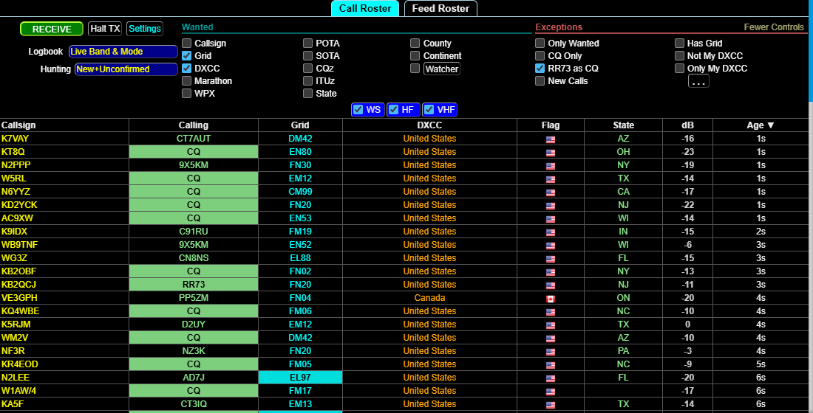
The roster window holds two rosters. While DX Feeds is turned on, Call Roster and Feed Roster tabs appear at the top. The Call Roster shows your decodes; the Feed Roster shows DX Cluster and CW Skimmer spots. Each roster has its own settings. This chapter covers the Call Roster, and almost everything in it also applies to the Feed Roster.
The window title counts the stations: how many were heard, how many are in the roster after your filters, and how many are wanted, for example “Call Roster: 147 heard • 107 in roster • 16 wanted”. With several WSJT-X or JTDX instances, their names follow.
Window Layout¶
From top to bottom:
Status, Halt TX and Settings. The status box shows RECEIVE, DECODE or TRANSMIT, like the main window. Halt TX stops transmitting on every WSJT-X and JTDX instance. Settings opens the roster’s settings.
Logbook and Hunting, which decide what counts as worked and what you are looking for.
Wanted and Exceptions, the boxes that pick out the stations you want and narrow the list down.
Instances: with more than one WSJT-X or JTDX running, a tick box for each. Untick one to hide its decodes.
The roster table.
More Controls, Fewer Controls, Hide Controls¶
Click Fewer Controls in the top right corner to shrink the controls to a single line, and More Controls to bring them back.
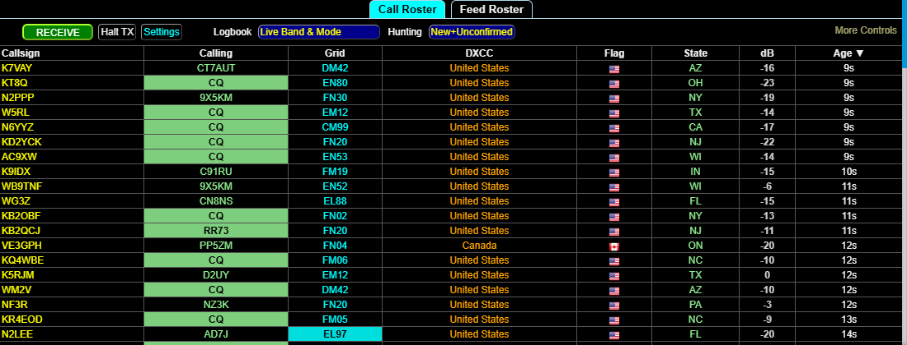
Right-click an empty part of the roster and choose Hide Controls to see only the table; right-click and choose Show Controls to bring them back.
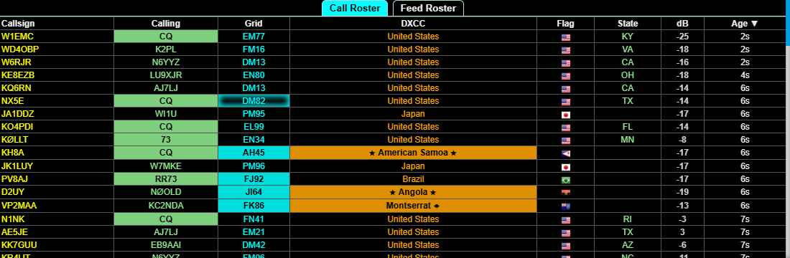
Compact Mode¶
Compact Mode shows each station as a small tile instead of a table row, which fits many stations into a small window. Turn it on with Compact Mode in the roster’s Settings → General (the button then reads Roster Mode, to go back). Compact Mode Entity chooses what each tile shows under the callsign: DXCC, grid, state and so on. Hover over a tile to see its details.
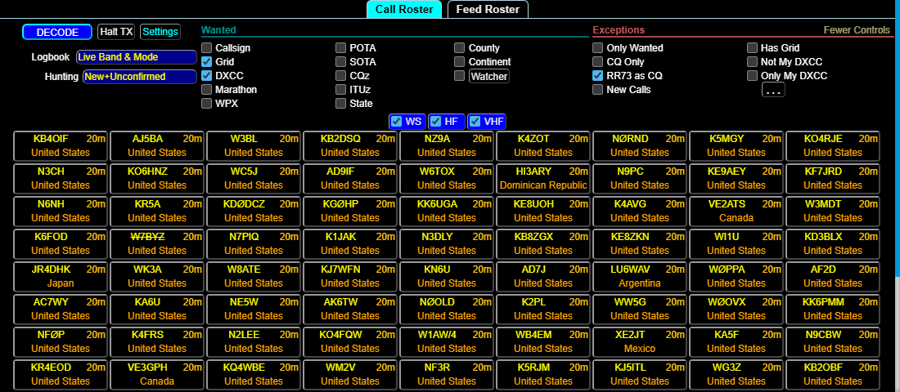
Who Is Calling Whom¶
The Callsign column is the station transmitting.
The Calling column is who they are calling: “CQ” (with its target, such as “CQ DX” or “CQ POTA”), or another station’s callsign.
The Grid column is the grid the transmitting station sent.
The Msg column, if you show it, is the whole decoded message.
For example, the message G3VMN NZ6L DM03 is listed with NZ6L in the Callsign column, G3VMN in the Calling column and DM03 in the Grid column. It’s easy to look for G3VMN in the Callsign column, but he is the one being called.
When a station calls you, its Calling cell shows your callsign in glowing yellow on blue, and the station stays in the roster even if your Exceptions would hide it.
Highlighting¶
The roster colors what you want, in each column’s color:
Highlighted (colored background, black text): new, not yet worked.
Shaded (a colored glow around the text): worked but not confirmed. This shows while Hunting is New+Unconfirmed or Mixed.
Normal text: worked and confirmed, or not wanted.
A callsign that is struck through has a confirmed QSO with you.
With Hunting set to Mixed and a “Mix Band” Logbook, a lighter background means new on this band but confirmed on another, and a lighter glow means worked on another band.
The Wanted column, if you show it, says why each station is wanted (“New Grid”, “Worked DXCC”, “20m State”), or names the Watcher that matched it. It also shows Calling (you are calling them), Caller (they are calling you) or Working (both).
A callsign outlined in green is in your WSJT-X or JTDX DX Call; outlined in red, you are also transmitting to it.
Markers¶
DXCC: ★ on both sides of the name means an All Time New One, an entity you have never worked. After the name, ◆ means you haven’t worked it on this band, and ● means you haven’t worked it in this mode. Hover over it to see which. These show whatever your Logbook choice.
Grid: ◇ after a grid means the station didn’t send it; GridTracker2 found it from a lookup or a SOTA summit, so it is likely but not certain.
County: “+2” after a US county means the station’s ZIP code covers 2 more counties. Click the county to do a full lookup.
POTA: a full background means you have never worked that park, a lighter one means you worked it but not today on this band and mode, and a glow only means you already worked it today. “?-????” means the station is calling CQ POTA but its park isn’t known yet.
SOTA: two dots before the summit mean you haven’t chased a summit in that association yet, one dot that you have chased one there; a dot after it means you haven’t chased a summit in that region. The background works like POTA’s.
LoTW: ✔ means the station uses Logbook of The World. A yellow “?” means their last upload is older than the Uses LoTW age you set. Hover over it for their last upload date.
Callsign: a small emoji after a callsign marks a GridTracker2 supporter; hover over it for their message.
Logbook and Hunting¶
Logbook chooses which of your QSOs count as worked:
Choice |
Counts QSOs |
|---|---|
Live Band & Mode |
on the station’s band and mode |
Live Band, Mix Modes |
on the station’s band, any mode |
Live Band, Digi Modes |
on the station’s band, any digital mode |
Mix Band, Live Mode |
in the station’s mode, any band |
Mix Band & Modes |
any QSO |
Mix Band & Digi Modes |
any digital QSO |
Award Tracker |
see Award Tracker |
Hunting chooses what is wanted:
New: never worked.
New+Unconfirmed: never worked, or worked but not confirmed (shaded).
Mixed: like New+Unconfirmed, and with a “Mix Band” Logbook, also marks what is new on the current band.
Wanted¶
Tick what you are hunting. Ticking an item also shows its column.
Wanted |
A station is wanted when |
|---|---|
Callsign |
you haven’t worked that callsign |
Grid |
you haven’t worked its grid |
DXCC |
you haven’t worked its DXCC entity |
Marathon |
its DXCC entity or CQ zone is new for the DX Marathon this calendar year |
WPX |
you haven’t worked its prefix |
POTA |
you haven’t worked that activator at that park on this band and mode today (with POTA Hunting on) |
SOTA |
you haven’t chased that summit today (with SOTA Chasing on) |
CQz / ITUz |
you haven’t worked its CQ or ITU zone |
State |
you haven’t worked its state or province |
County |
you haven’t worked its US county (needs the US Callsigns database) |
Continent |
you haven’t worked its continent |
Watcher |
it matches one of your Watchers |
A 🔔 after an item means you also have an audio alert for it; click the bell to open Settings → Audio Alerts. An M after the heading means Roster/Alert Band Memory is on: your Wanted choices are remembered separately for each band and mode (while a single WSJT-X or JTDX is running).
Note
Stations calling you are always flagged, so there is no separate Wanted box for them. To be alerted when someone calls you, add a QRZ Custom Alert.
Exceptions¶
Exceptions hide stations from the roster:
Only Wanted: only wanted stations (and stations calling you).
CQ Only: only stations calling CQ, including directed CQs.
RR73 as CQ: a station sending RR73 or 73 counts as calling CQ, since they are finishing a QSO and will usually call CQ next.
New Calls: hides stations you have already worked (by your Logbook choice). An activator at a park or summit you haven’t worked today still shows.
Has Grid: only stations that sent a grid.
Not My DXCC / Only My DXCC: only stations outside or inside your own DXCC entity, for example for a DX contest or for Field Day.
Spotted Me: only stations that have spotted you (shown while the Spot column is on).
Uses eQSL / Uses OQRS: only stations that use those services (shown while their database is on in Settings → Lookups).
The … button opens the Exceptions tab with more.
Columns¶
Right-click any column heading to tick which columns to show. Drag a heading onto another to move that column; Callsign always stays first. Click a heading to sort by it (▲ ascending, ▼ descending), and click again to reverse. The headings stay at the top while the roster scrolls.
Column |
Shows |
|---|---|
Callsign |
the transmitting station; click to call it |
Band, Mode |
its band and mode, in their colors (shown automatically when the roster has more than one) |
Calling |
who it is calling |
Rig |
which WSJT-X or JTDX instance decoded it |
Wanted |
why it is wanted |
Grid |
its grid; click to center the map on it |
Msg |
the whole message |
POTA, SOTA |
its park or summit |
DXCC |
its DXCC entity; click to center the map on it and flash its outline |
Flag |
its entity’s flag |
DXM |
what is new for the DX Marathon: DXCC, CQz or both |
State, County |
its US state or Canadian province, and US county |
Cont |
its continent |
dB, DT, Freq |
signal report, time offset and audio frequency |
Dist, Azim |
distance and bearing from you |
CQz, ITUz, PX |
its zones and prefix |
LoTW, eQSL, OQRS |
whether it uses those services |
Life |
how long it has been heard |
Spot |
how long ago, and how well, this station heard you |
Age |
how long ago it was last heard |
UTC |
the time of its last decode (underlined on even cycles) |
Right-click an empty area and tick Realtime to have Age, Life and Spot count up every second.
Calling a Station¶
Click a callsign to reply to that station: GridTracker2 tells the WSJT-X or JTDX that decoded it to call them, just like double-clicking the decode there.
WSJT-X replies to stations calling CQ. If nothing happens when you click a station that isn’t calling CQ, untick CQ only and tick Hold Tx Freq in WSJT-X’s main window.
JTDX replies according to its Misc → Accept UDP Reply Message setting: CQ only, CQ and 73, or any message. When replying to a station that isn’t calling CQ, your transmit audio frequency must differ from theirs.
JS8Call doesn’t support replies.
See Appendix B for the WSJT-X and JTDX settings this needs. With several instances, Settings → General → On QSO Reply decides whether the others stop transmitting and whether the main window follows the transmitting one.
Settings¶
Click Settings in the roster (or press Ctrl+S there) to open the roster’s own settings, titled “Call Roster Settings”. Close them with the red X or Esc. While the Feed Roster tab is shown, the same pane shows the Feed Roster’s settings.
General¶
Window Always On Top: keeps the roster window above other windows.
Roster Max Age: how long a station stays in the roster after it was last heard, 5 seconds to 5 minutes (up to 1 hour for the Feed Roster).
Clear Roster on Band change: empties the roster when you change band or mode.
Decode Delay On Focus: while the mouse is over the roster, new decodes wait (⌛ shows) so the row you are about to click doesn’t move.
Compact Mode and Compact Mode Entity: see Compact Mode.
Window Filters: brightness, saturation, invert, sepia and hue of the whole roster window, for example to dim it at night. Reset Filters (or Ctrl+L) undoes them.
Watcher¶
A Watcher highlights stations that match what you type, and makes them wanted while Watcher is ticked in Wanted. Use them for friends, special event stations, nets or a whole group of callsigns.
Name: a name for the Watcher. It is shown in the Wanted column when it matches.
Type: what to match: Callsign (the transmitting station), Calling (the station being called), Grid or Message (the whole message).
Regex: match a regular expression instead of exact text. Matching ignores upper and lower case.
Start Date and End Date (UTC): the Watcher only works between them. Auto Delete removes it after its end date.
Click the ✅ to save it. In the list, 👀 turns a Watcher on or off, 📝 edits it and 🚮 deletes it. The matching text is highlighted in white in the roster.
Right-click a callsign, grid or message and choose Add Watcher to make one quickly.
Tip
Some useful regular expressions:
^[KNW][0-9][A-WYZ]$matches US 1x1 special event callsigns.^(W|K|N|A[A-L])[0-9]matches US callsigns.POTA|SOTAas a Message Watcher matches stations calling CQ POTA or CQ SOTA.
regex101.com is a good place to try them out.
Exceptions Tab¶
More Exceptions, each with a slider (use the arrow keys for small steps):
Min dB: only stations at least this strong.
Max DT: only stations within this time offset.
Min Freq / Max Freq: only stations within this audio frequency range, for example to stay away from the edges of your receive filter.
Uses LoTW: only stations that use LoTW and have uploaded within the chosen number of months (∞ for any time).
Ignores¶
Ignored stations are never shown in the roster. Choose the Entity to ignore (Callsign, CQ, DXCC, Grid, CQ Zone or ITU Zone), fill it in and click +. A CQ ignore hides one kind of directed CQ, such as “CQ POTA”, from one DXCC entity or from all.
Each list has a trash can to remove one entry and Clear All to empty it. You can also add ignores from the right-click menus, which have Edit Ignores to open this tab. A station you are working is still shown, even if it is ignored.
Columns¶
Every column of the roster, in its current order:
the color picker under each changes that column’s color (the highlight color for wanted entries);
the tick box shows or hides it;
drag one onto another to move it.
Reset Colors returns this roster’s colors to their defaults, and Reset Column Order its columns and order. The Band and Mode colors come from the main window: click Band to open Settings → Colors.
Award Tracker¶
Choose Award Tracker as the Logbook to show only stations that would advance an award you are working toward. Click Add Awards, pick a Sponsor (ARRL, CQ Magazine, the European ROS Club, the FT8 Digital Mode Club, GridTracker, QRZ.com or Radio Amateurs of Canada), then the award. The list shows each award with an icon for your progress: a trophy when you have every endorsement, a medal when you have reached the award, a tally while you are working on it. Untick Track to pause an award, or remove it with its trash can. Hover over a callsign in the roster to see which award it would help.
Audio Alerts¶
Audio alerts for wanted stations are set in Settings → Audio Alerts. The alert ticks there are separate from the roster’s Wanted ticks, so you can highlight more than you are alerted for. The Logbook, Hunting and Exceptions are shared: change them in either place.
Push Notifications¶
With Pushover or Simplepush set up in Settings → Features, new wanted stations are sent to your phone.
Running a Script on Alerts¶
GridTracker2 can run a script of your own whenever new wanted stations appear, for example to send them somewhere else or to filter them further.
Put a script named
cr-alert.bat(Windows) orcr-alert.sh(macOS and Linux) in the Call Roster Scripts folder in GridTracker2’s data folder (see Files and Folders). On macOS and Linux make it executable (chmod 755 cr-alert.sh) and start it with a shebang line such as#!/usr/bin/python3.The next time there is a new wanted station, a Script Disabled button appears in the roster controls. Click it so it reads Script Enabled. Shift+– in the main window also toggles it.
Each time new wanted stations appear, GridTracker2 writes cr-alert.json next to the script, with every station in the roster keyed by callsign, then runs the script in that folder. Each station’s entry includes, among others, shouldRosterAlert (it is wanted), rosterAlerted (false the first time it alerts), dxccName, grid, band, mode, state, RSTsent, distance and hunting (why it is wanted).
This example sends new wanted stations to Pushover:
#!/usr/bin/python3
import json
import urllib.parse
import urllib.request
with open("cr-alert.json") as f:
data = json.load(f)
lines = []
for call, s in data.items():
if s.get("shouldRosterAlert") and not s.get("rosterAlerted"):
lines.append(", ".join(str(x) for x in [call, s.get("dxccName"), s.get("RSTsent"), s.get("grid"), s.get("band"), s.get("state")] if x))
if lines:
body = urllib.parse.urlencode({"user": "YOUR_USER_KEY", "token": "YOUR_API_TOKEN", "title": "GridTracker2", "message": "\n".join(lines)}).encode()
urllib.request.urlopen("https://api.pushover.net/1/messages.json", body)
For the Feed Roster, the script only runs with Allow Alert Script ticked in Settings → Feeds.
Hotkeys in the Roster Window¶
Key |
Action |
|---|---|
Ctrl+S |
Open the roster’s Settings |
Ctrl+W or Ctrl+O |
Open the Watcher tab |
Ctrl+E |
Open the Exceptions tab |
Ctrl+I |
Open the Ignores tab |
Ctrl+L |
Reset the Window Filters |
Esc |
Close the Settings |
The Feed Roster and DX Feeds¶
DX Feeds brings DX Cluster and CW Skimmer spots into GridTracker2, for every band and mode: CW, phone and digital. The spots are shown in their own roster, the Feed Roster, and on the map. You can hunt them with the same Wanted, Exceptions and Watchers as the Call Roster, and click a spot to work it with your radio.
Turning It On¶
In Settings → Features, under Off-Air Services, tick DX Feeds. This adds:
the Call Roster | Feed Roster tabs at the top of the roster window;
the DX Feed Spots button in the button panel, for the map;
the Feeds tab in Settings;
Call Roster | Feed Roster sub-tabs in Settings → Audio Alerts.
The spots come through GridTracker2’s own server from the G7VRD DX Cluster and CW Skimmer feed and Spothole. Beacon spots are left out.
The Feed Roster¶
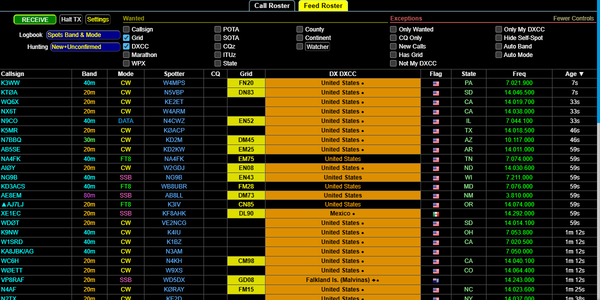
The Feed Roster works like the Call Roster, with these differences:
It has its own settings: Logbook, Hunting, Wanted, Exceptions, Watchers, Ignores, columns, colors, sorting, Compact Mode and Roster Max Age (up to 1 hour). One set of settings covers all bands and modes.
To tell the two apart at a glance, the Feed Roster’s tabs, Settings button and settings title are yellow where the Call Roster’s are cyan, and its callsigns are cyan and grids yellow (the other way around from the Call Roster).
The Logbook choices say Spots instead of Live (“Spots Band & Mode”, meaning the spot’s band and mode), and add Phone and CW choices: Spots Band, Phone Modes, Spots Band, CW Mode, Mix Band & Phone Modes and Mix Band & CW Mode.
Columns¶
The Feed Roster has some columns of its own:
Spotter: the station that reported the spot. Right-click it for Lookup, Add Watcher, Copy, Ignore Spotter and Edit Ignores.
CQ: ✔ when the spot’s comment starts with CQ (except “CQ Contest”).
Freq: the spot’s frequency in MHz.
DX DXCC and DX Cont: the spotted station’s entity and continent (the Call Roster’s DXCC and Cont columns).
DE DXCC and DE Cont: the spotter’s entity and continent.
Msg: the spot’s comment.
A ▲ before a callsign means one of your radios is on that spot’s band and mode, so you can work it straight away.
US stations get the same state and county lookups as decodes. A spot without a grid is placed at the center of its DXCC entity on the map, and its grid stays empty in the roster.
Exceptions¶
Besides the Call Roster’s Exceptions, the Feed Roster has:
Hide Self-Spot: hides spots where the station spotted itself. W1AW-#, W1AW/P and VE/W1AW all count as W1AW.
Auto Band: only spots on a band one of your radios is on (WSJT-X, JTDX, AC Log or Log4OM).
Auto Mode: only spots in a mode one of your radios is on. With both ticked, only spots on a radio’s band and mode.
With no radio connected, Auto Band and Auto Mode show everything. Not My DXCC and Only My DXCC apply to the spotted station.
Watchers and Ignores¶
The Feed Roster has its own Watchers and Ignores, separate from the Call Roster’s.
A Spotter Watcher highlights spots from a particular spotter. A plain Spotter Watcher also matches that spotter’s skimmers: W3LPL also matches W3LPL-# and W3LPL-2.
Ignores add DE DXCC (drop spots from spotters in that entity), DE Cont (drop spots from spotters on that continent) and Spotter (drop a spotter that sends false or questionable spots). An ignored spotter’s spots also leave the map.
Working a Spot¶
Click a callsign in the Feed Roster, or a spot marker on the map, and GridTracker2 sends it to the right place:
A radio already on the spot’s band and mode (WSJT-X, JTDX, AC Log or Log4OM) gets it. WSJT-X and JTDX get the call and grid in their DX Call and DX Grid, without starting to transmit.
Otherwise a connected AC Log gets it, on any band and mode: its entry tab is cleared and filled with the spot’s frequency, band, mode, call and grid. With Enable Rig Control on, AC Log also tunes your rig to the spot.
Otherwise a connected Log4OM gets the call in its QSO entry, and with Enable Rig Control on, tunes your rig.
Otherwise it goes to the active WSJT-X or JTDX as Gen Msgs.
A callsign that is in one of your radios’ DX Call is outlined in green. Rows that can’t be worked show an arrow pointer; hover over one to see how to work it (“Set a rig to 20m CW to work this station”).
See N3FJP AC Log and Log4OM for setting up the connection and rig control.
Logging a POTA or SOTA QSO by Hand¶
For CW and phone activators when no logging program is connected, click the park in the POTA column or the summit in the SOTA column to log the QSO yourself. This is offered while no AC Log or Log4OM is connected and no WSJT-X or JTDX is on the spot’s band and mode; hover over the park or summit to check.
The Log POTA / SOTA QSO window opens with the details filled in from the spot: your call, the station worked, the park and summit, the date and time (UTC), frequency, band and mode, and signal reports. Check them, add a comment if you like, and click Log QSO (or press Enter). The QSO is logged like any other, and a park QSO is spotted to POTA.
DX Feed Spots on the Map¶
Click the DX Feed Spots button to show the spots on the map. The markers show all bands, following only the Map View Filters and the Modes and Bands in Settings → Feeds:
Hover over a marker (or right-click it) to see the call, spotter, age, DXCC entity, grid, frequency, mode, distance, bearing, time and comment. Click it to work the spot as described above. See Spot Markers.
Settings → Feeds¶
The Feeds tab sets how long spots stay on the map, clears all feed data, chooses which Modes and Bands to receive, and whether feed spots may run the roster alert script or send push notifications.
Feed spots are kept for an hour after they were last spotted. The map shows them for Feed Spots Max Age, and the Feed Roster for its own Roster Max Age.
Feed spots never set off Custom Alerts.
Audio Alerts¶
With DX Feeds on, Settings → Audio Alerts has Call Roster and Feed Roster sub-tabs. Each roster has its own alert choices, sounds and speech. The Feed Roster’s default spoken alerts say “Feed”, for example “Wanted Feed Grid”, so you can tell them from Call Roster alerts.
SOTA Chasing¶
With DX Feeds on, you can also turn on SOTA Chasing to follow Summits on the Air activators. See Summits On The Air.
Parks On The Air (POTA)¶
Parks On the Air® (POTA) is an activity where amateurs operate from parks (Activators) while others (Hunters) contact them. See parksontheair.com for more.
GridTracker2 helps Hunters find parks they haven’t worked, and helps Activators find other Activators for Park to Park (P2P) contacts.
Setting Up¶
In Settings → Features, tick POTA Hunting in the Online box. It is on by default in new installations.
Turning it on also turns on Load At Startup and Log QSO for the GridTracker2 log in Settings → Logging. GridTracker2 uses its own log to know which parks you have worked, today, on which band and mode, because logging programs record POTA in different ways. Keep both ticked.
How Parks Are Counted¶
GridTracker2 follows the POTA rules: each activator, park, band and mode is a new contact each UTC day, and the day starts again at midnight UTC.
For example, if you work N0TTL at park US-1234 on FT8 at 2330Z, then he switches to FT4, he is new again on FT4. If he goes back to FT8 at 0001Z, he is new again on FT8, because it is a new UTC day.
Where Park Information Comes From¶
The POTA spots at pota.app, downloaded every 5 minutes. A newly spotted activation may take up to 5 minutes to appear, and an activator who has gone QRT may stay on the map until the next download.
Scheduled activations posted on pota.app, for activators you decode.
DX Feeds spots, when DX Feeds is on: a park reference in a spot’s comment gives that activator’s park.
You may hear activators who haven’t posted their activation and haven’t been spotted. They show “?-????” until their park becomes known.
POTA on the Map¶
The POTA button in the button panel shows or hides the parks on the map.
Icon |
Meaning |
|---|---|
An activator on your radio’s band and mode that you haven’t worked today. |
|
An activator you have worked today on this band and mode. It changes back to the tent if they change band or mode, or a new UTC day starts. |
|
An activator on a band or mode none of your radios is on. |
Like everything on the map, the parks follow the Map View Filters. For example, with Band on Auto and Mode on Mixed while you work 20 m FT8, an activator on 20 m SSB shows as a pine tree.
Hold the mouse over a park to see its reference and name, its location, the distance and bearing from you, and its spots: activator, grid, spotter, frequency, mode, how many times it was spotted, when, where the spot came from, and the comment.
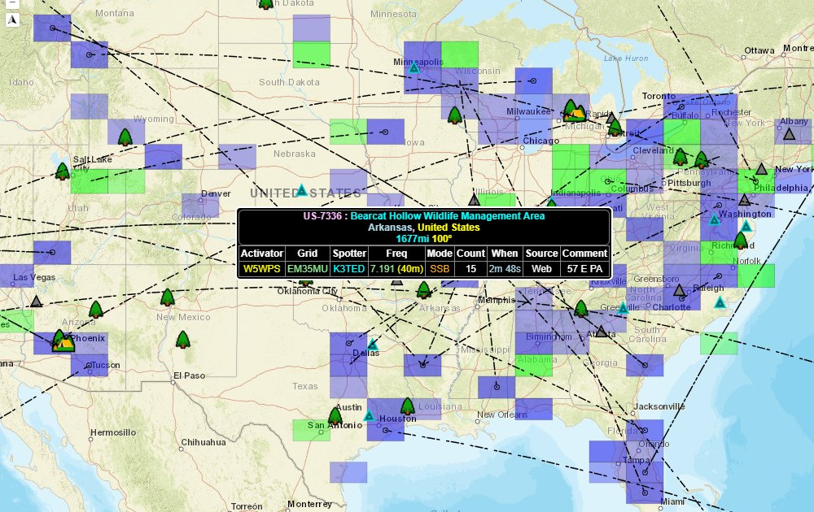
Click a park to work the activator: the spot goes to a radio on its band and mode, or to a connected AC Log or Log4OM (which can tune your rig), or to WSJT-X as Gen Msgs. See Working a Spot.
Right-click a park to pop its tooltip out into its own window. Callsigns there can be clicked to look them up.
A park whose activator is in your radio’s DX Call is ringed.
Overlapping parks, summits and DX spots in the same DXCC entity are grouped into one marker while Group Overlapping Spots is on in Settings → Map.
POTA in the Rosters¶
In the Call Roster (and the Feed Roster), tick POTA under Wanted. This also shows the POTA column, which you can drag to where you want it.
The park in the POTA column is highlighted:
with a full background when you have never worked that park, an All Time New One (ATNO);
with a lighter background when you have worked the park before, but not today on this band and mode;
with a glow only when you have already worked it today on this band and mode.
A station calling CQ POTA whose park isn’t known yet shows “?-????”. The park appears as soon as GridTracker2 learns it.
Once you have worked an activator, their further CQs may be hidden, depending on your Exceptions, until the UTC day changes, they change mode or park, or you change band and they are on that band too.
To highlight every station calling CQ POTA, add a Message Watcher with the text CQ POTA (tick Regex to match it anywhere in the message). See Watchers.
In Settings → Audio Alerts you can choose a sound or spoken alert for wanted parks, and a different one, On ATNO, for parks you have never worked.
Spotting to POTA¶
When you log a QSO with a known activator, GridTracker2 spots them on pota.app for you. The Event Viewer shows “Spotted to POTA”. This works for QSOs logged from WSJT-X or JTDX, logged in AC Log with a park in an Other field titled POTA_REF, and logged by hand from the Feed Roster.
The spot appears on pota.app with your callsign, the spot information, and the comment from the WSJT-X log window.
If the park wasn’t known when you logged the QSO (“?-????”), GridTracker2 can’t spot it, and that activator’s later CQ POTA calls keep showing as wanted.
The Logbook¶
The Statistics window’s Logbook tab has a POTA column, with its own search box, whenever your log has POTA QSOs. GridTracker2 reads a park from either POTA_REF or SIG=POTA with SIG_INFO in your ADIF logs, and writes POTA_REF when it logs a QSO with a known activator.
Summits On The Air (SOTA)¶
Summits on the Air (SOTA) is an award program for operating from, and contacting, mountain summits. Activators climb to a summit and operate from it; Chasers contact them. See sota.org.uk for more.
GridTracker2’s SOTA Chasing finds activators in the DX Feeds spots, shows them in the rosters and on the map, and records the summit with your QSO.
Setting Up¶
In Settings → Features, turn on Off-Air Services and DX Feeds.
Tick SOTA Chasing, under DX Feeds.
Like POTA Hunting, this turns on Load At Startup and Log QSO for the GridTracker2 log in Settings → Logging, so GridTracker2 knows which summits you have chased. A SOTA button is added to the button panel.
SOTA in the Rosters¶
The Feed Roster and the Call Roster both get a SOTA Wanted choice and a SOTA column (off by default: turn it on in the roster’s Settings → Columns, or tick SOTA under Wanted).
The column shows the summit reference. Hover over it for the summit’s name, height and points, and how many summits you have chased in its association and region.
Dots show what a summit is worth to you: two dots before the reference mean you haven’t chased any summit in that association yet, one dot that you have chased one there. A dot after it means you haven’t chased a summit in that region.
The highlighting works like POTA’s: a full background for a summit you have never chased, lighter for one chased before but not today, a glow only for one chased today.
SOTA under Wanted highlights summits you haven’t chased today, using the
SOTA_REFof the QSOs in your logs.
In the Call Roster, a station you decode that DX Feeds has spotted on a summit gets that summit. The station’s grid stays the one it sends; if it sends none, the summit’s grid is shown, marked ◇.
In Settings → Audio Alerts → Feed Roster, choose alerts for Wanted Feed Summit and Many Feed Summits, and On ATNO for summits you have never chased.
SOTA on the Map¶
The SOTA button shows or hides summits on the map. Each summit with activators has one marker, a snow-capped double peak:
The tooltip has the summit, its location, height and points, then every spot on it, newest first. Your own decodes of the activator are listed as spots from you. Click the summit to work the newest spot. SOTA summits are drawn above POTA parks, which are drawn above DX Feeds spots.
How Activations Are Followed¶
A spot on a summit places the activator there: the summit’s grid is used for the distance, and for a logged QSO that has no grid.
A later spot that doesn’t name the summit (from a skimmer, say) keeps the summit the activator is on.
A spot saying QRT, or a spot with no frequency, ends that activation: the activator leaves the Feed Roster and the map until spotted again.
An activator spotted on another summit leaves the old one at once.
An activator you are still decoding keeps their summit, even after their last spot has aged out.
Logging¶
A QSO logged with a spotted activator gets the summit’s SOTA_REF. This works for QSOs logged from WSJT-X or JTDX, logged in AC Log with an Other field titled SOTA_REF, and logged by hand from the Feed Roster’s SOTA column (see Logging a POTA or SOTA QSO by Hand).
Exporting Your Chaser Log¶
The Statistics window’s Logbook tab has a SOTA column, and an Export SOTA Chaser Log… button whenever your log has SOTA QSOs. It writes your chases as a CSV file for the SOTA database’s chaser log upload.
Click Export SOTA Chaser Log….
Pick the From and To times. They are in your local time; the file is written in UTC. Each export starts where the last one ended, so you don’t upload a QSO twice.
Check the QSOs listed. You can edit any field, or leave a QSO out with its ✕. Possible duplicates (the same station, summit, day, band and mode) are highlighted. Your changes only affect the file, never your logbook.
Click Export CSV… and save the file, then upload it on the SOTA database website.
Logging Options¶
Is GridTracker2 a Logging Program?¶
No. GridTracker2 displays your QSOs; it isn’t meant to be the master record of your contacts. It keeps a backup log of the QSOs it sees, and it can send each new QSO to your logging program and online logbooks, but your real log should live in a logging program or online logbook.
All of this is set in Settings → Logging.
Where Your Logbook Comes From¶
When GridTracker2 starts, it loads every log ticked Load At Startup, and combines them into one logbook. That logbook colors the map, decides what is wanted in the rosters, and fills the Statistics window.
App Log(s): the logs of WSJT-X, JTDX and WS – Digital Mode Suite. GridTracker2 finds them by itself in their usual folders, and lists them here. Untick any you don’t want loaded, for example when another copy of GridTracker2 uses them. Add File adds a log it didn’t find.
GridTracker2: GridTracker2’s own backup log (see below).
Local File(s): any other ADIF files: an export from your logging program, a contest log, an old logbook. Tick Load At Startup, then Add File.
N3FJP Loggers: your AC Log logbook. AC Log must be running.
QRZ.com, ClubLog and LoTW: your online logbooks. LoTW is the usual source of confirmations.
PSK-Reporter 24 Hour History: the stations that heard you in the last 24 hours. These are reception reports, not QSOs; they are shown as live grids.
A log downloaded from a website is kept in GridTracker2’s data folder and replaced at each download. Your logs on the websites are never changed.
Tip
WSJT-X’s own log only knows that you logged a QSO, not whether the other station confirmed it. To see your confirmations (QSLs), load your LoTW log, or a log from your logging program that holds your confirmations.
When the same QSO is in several logs, the QSL Location Authority in Settings → Logbook decides whose location details are used.
Loading Logs Whenever You Like¶
Tick Menu Button for a log to add a button for it to the button panel. Click the button to load or reload that log at any time, for example after uploading to LoTW.
The Load ADIF Log button (or Ctrl+L) opens any ADIF file and adds it to your logbook. It is also added to Local File(s), so it loads at every start; untick or remove it there if you only wanted it once.
Clear Log and Load Log¶
Clear Log in the side panel removes your logbook from GridTracker2: the QSO and QSL counts, the colored grids and the Statistics are cleared. No files are deleted. The button then reads Load Log; click it to load your startup logs again.
This is useful when you change which logs are loaded. For example, to see only your LoTW log: untick everything else’s Load At Startup, click Clear Log, then Load Log. Clear Log also clears the cached LoTW, QRZ.com and ClubLog logs, so they are downloaded fresh next time.
Where New QSOs Go¶
When you log a QSO in WSJT-X or JTDX (or a program that broadcasts ADIF, or by hand from the Feed Roster), GridTracker2 adds it to your logbook and sends it to every log ticked Log QSO:
GridTracker2, its own backup log;
logging programs: ADIF UDP / N1MM, Log4OM, N3FJP Loggers, DXKeeper, HRD Logbook;
online logbooks: QRZ.com, ClubLog, LoTW, eQSL.cc, HRDLOG.net, Cloudlog/Wavelog, HamCQ.cn.
The Event Viewer shows the result for each one, for example “Logged to QRZ.com”. Use Test next to each online logbook to check your login details.
LoTW uploads go through TQSL. Choose the TQSL program (TQSL Path, not needed on macOS), your certificate’s TQSL Password if it has one, and your Station Name (the station location in TQSL). An upload that fails, for example while you are offline, is queued and sent with your next QSO.
With Add Lookup Data to QSO Log event on in Settings → Lookups, details from the callsign lookup (name, QTH, grid and so on) are added to the QSO before it is sent.
QSOs with a known POTA activator or SOTA summit get its
POTA_REForSOTA_REF.
Note
GridTracker2 receives the QSO from WSJT-X’s “Log QSO” window, so WSJT-X must have Prompt me to log QSO turned on. See Appendix B.
The GridTracker2 Backup Log¶
The GridTracker2 row keeps a backup log of every QSO GridTracker2 logs, in ADIF files in the Backup Logs folder in GridTracker2’s data folder (one file for each callsign and grid you operate from, such as GridTracker2_N0TTL_CN84.adif). Click Backup Logs to open the folder. Every file in it is loaded when Load At Startup is ticked.
POTA Hunting and SOTA Chasing rely on this log to know which parks and summits you have worked, so turning either on also turns on this row’s Load At Startup and Log QSO.
See Files and Folders for where the data folder is on your computer.
Limiting What Is Shown¶
The Map View Filters choose the bands, modes and propagation modes shown on the map and in Statistics.
The Logbook Filters in Settings → Logbook limit the whole logbook to certain callsigns, grids or dates. When they leave QSOs out, the side panel shows Log Entries Filtered.
Alerts¶
GridTracker2 can tell you when something you want shows up, so you don’t have to watch the screen. There are three kinds of alerts:
Audio Alerts speak or play a sound when a roster has a wanted station: a new grid, a new DXCC, a park you need. They follow the roster’s Wanted choices.
Custom Alerts watch for one particular callsign, part of a callsign or grid, whatever your roster settings, and can speak, play a sound, pop up a window or move the map.
Push notifications send wanted stations to your phone. See Push Notifications.
The Audio Mute button (or Ctrl+M) silences all sounds and speech at once. Pop-ups, Map Center and push notifications still go out. If you hear nothing, check it first, then the Device in Settings → Audio.
Audio Alerts¶
Audio Alerts are set in Settings → Audio Alerts. Each roster has its own (Call Roster and Feed Roster sub-tabs).
Tick what you want to be alerted for: Callsign, Grid, DXCC, State and so on. These ticks are separate from the roster’s Wanted box, so the roster can highlight more than you are alerted for.
For each one, choose Text-To-Speech or Media File, and what is said or played On Single (one wanted station) and On Multiple (several at once).
For DXCC, POTA and SOTA, choose something different On ATNO, for an entity, park or summit you have never worked, so you know to drop everything.
Check the Reference (which QSOs count as worked, and what you are hunting) and the Exceptions. These are shared with the roster.
A 🔔 next to a Wanted item in the roster means it has an audio alert. Click it to jump to that alert.
Tip
To be alerted only for, say, new DXCC entities, while the roster still highlights grids and states too: tick only DXCC in Settings → Audio Alerts, and Grid, DXCC and State in the roster’s Wanted box.
Custom Alerts¶
Custom Alerts are set in Settings → Custom Alerts. Choose a Type, a Value, how to Notify you and how often to Repeat, then click ADD.
The alert list shows when each alert last went off and the message that set it off. The decodes that set off an alert are also listed, with a 🚩, in the Event Viewer.
Examples¶
When someone calls you: Type QRZ (your callsign is filled in), Notify Text-To-Speech or Media File, Repeat Until Deleted. Useful if you step away from WSJT-X while calling CQ.
When a friend is on the air: Type Callsign (exact), Value their callsign.
When a particular country appears: Type Callsign (partial) and the start of its callsigns, for example TF for Iceland. Callsign prefixes can be shared between countries, so check the entity, or use Callsign (regex) for an exact pattern such as ^TF[0-9].
When a grid you need appears: Type Gridsquare and the 4-character grid, for example FK68.
How You Are Notified¶
Text-To-Speech speaks the alert, using the voice set in Settings → Audio.
Media File plays a sound. More than 200 sounds are included, and you can add your own to the Extra Media folder (see Files and Folders).
Visual Popup opens a small Alerts window listing the alert and the message that set it off. The alerts in it are cleared when you change band or mode.
Map Center moves the map to the station’s grid.
Repeat¶
Until Deleted: every time it matches, until you delete the alert.
Until Exit: every time it matches, until GridTracker2 is closed.
Only Once and Never Repeat: only the first time it matches. The alert stays in the list; click its reset icon to arm it again.
Note
Custom Alerts check WSJT-X and JTDX decodes (including WSPR), not DX Feeds spots.
Band and Mode Memory¶
With Roster/Alert Band Memory on in Settings → Features, the Call Roster’s Wanted choices and the Audio Alerts are remembered separately for each band and mode, so you can, for example, hunt grids on 6 m and DXCC entities on 20 m. … include Exceptions and … include Custom Alerts extend this to those too. An M next to the headings shows it is on. It works while a single WSJT-X or JTDX is running.
The Statistics Window¶
Click the Statistics button in the side panel (or press Ctrl+I) to open the Statistics window: your logbook, your scores, and your progress toward the major awards. Clicking the QSO, QSL, Rx Calls or Rx DXCC count in the side panel opens it at the matching tab.
What the window shows depends on:
the logs you load (see Logging Options);
the Map View Filters: the award tabs show the band and mode chosen there, named on their “Viewing” line;
the Logbook Filters in Settings → Logbook.
The tabs are Logbook, Scores, DXCCs, Zones / WAC, WAS / WACP / US48, WPX / USC, Live and Decodes.
Highlighting¶
The award tabs use the same highlighting as the rosters:
normal colored text: confirmed;
shaded (a glow around the text): worked but not confirmed;
highlighted (black on a colored background): needed.
Logbook¶

Your whole logbook in one list, newest first. The heading shows how many QSOs are listed. It scrolls smoothly even for very large logs, and the search boxes and column headings stay at the top.
The columns are Station, Grid (VUCC grids follow it), Band, Mode, QSL (the letters say where the confirmation came from; hover for their names), Sent, Rcvd, DXCC, Flag, State, County, POTA, SOTA, When, and LoTW, eQSL and OQRS (while their databases are on in Settings → Lookups). The POTA and SOTA columns appear whenever your log has POTA or SOTA QSOs.
Sorting¶
Click a column heading to sort by it; an arrow shows the column and direction. Click the same heading again to reverse the order. Sorting by another column keeps the direction. Sent and Rcvd can’t be sorted.
Searching and Filtering¶
The row above the headings filters the list. Filters combine, so you can look for, say, 20 m FT8 QSOs with Japan that aren’t confirmed.
Station: callsigns containing what you type (upper or lower case).
Grid: grids starting with what you type:
EMfinds every EM grid,EM29that square. VUCC grids are searched too.Band, Mode, QSL and DXCC: choose from the values in your log. Mode also offers Phone and Digital; QSL offers Yes, No, or a particular source.
State, County, POTA and SOTA: entries containing what you type.
Current Day UTC: only today’s QSOs (UTC).
A trash can appears next to each search box while it has text; click it to clear the box.
Click a callsign to look it up. For an unconfirmed QSO with a station that uses ClubLog OQRS, click the ✔ in the OQRS column to request a QSL through ClubLog.
Export SOTA Chaser Log¶
When your log has SOTA QSOs, an Export SOTA Chaser Log… button appears next to the count. See Exporting Your Chaser Log.
Scores¶
Logbook: the callsigns in your log, and your first and last contacts.
Score Card: your best band and mode, with worked and confirmed counts, for callsigns, grids, DXCC entities, CQ and ITU zones, continents, US states, US counties, prefixes and Canadian provinces, plus your longest and shortest distances.
DX Marathon: the DXCC entities and CQ zones you worked in each of the last five years.
Award Types: worked and confirmed counts for each award, by band, mode and type of mode.
Mode Types: your QSOs by Mixed, Digital, Phone, CW and Other.
Distances: your longest and shortest QSOs by band, mode and type. Click a callsign to look it up.
DXCCs¶
The Confirmed Band Slots table counts your confirmed DXCC entities for Mixed, Phone, Digital and CW, and for each band. Below it, three lists: Worked, Confirmed and Needed, with each entity’s flag and DXCC number. Click a worked entity to open the Logbook filtered to it.
Zones / WAC¶

Worked CQ Zones, Worked ITU Zones and Worked All Continents, each with its worked, confirmed and needed counts.
WAS / WACP / US48¶

Worked All US States, Worked All Canadian Provinces, and US Continental Grids (the grids of the 48 contiguous states). Click a worked grid to open the Logbook filtered to it.
WPX / USC¶

Your worked and confirmed prefixes, each with the callsign that earned it, and your US counties.
Live¶

Every callsign heard this session, with its grid, band, DXCC entity, zones, whether you have worked (QSO) and confirmed (QSL) it, and when it was heard. A second table counts the callsigns heard from each DXCC entity. Clear Live in the side panel starts the list again.
Decodes¶

The most recent decoded messages, with their time, signal report, time offset, frequency, mode, message and DXCC entity.
Other Windows¶
User Guide¶
Click the User Guide button (the life ring) in the side panel to open this guide in its own window; click it again to close the window, or right-click it to bring the window forward. The window opens where you last left it.
Type in the search box at the top to find a word: matches are highlighted and counted, Enter goes to the next one and Shift+Enter to the previous one. The toolbar below it shows the page number, zooms, rotates, prints or saves the guide, and its ☰ button shows page thumbnails and the contents. Links to websites open in your web browser. Esc closes the window.
Callsign Lookup¶
Click the Lookup button in the side panel to open the Callsign Lookup window. Type a callsign and press Enter or click Lookup. Clicking a callsign almost anywhere in GridTracker2 (the rosters, the Logbook, the map’s tooltips, the station you are working in the side panel) also looks it up.

The lookup service is chosen in Settings → Lookups: Callook (US callsigns only, no login), HamQTH, QRZ.com or QRZCQ.com. What is shown depends on the service. From the top:
Generate Messages puts the call and grid into WSJT-X or JTDX without calling. Clear empties the window. When GridTracker acknowledges the station, that is shown above these buttons;
a card with the station’s photo, name and address. Click the card to copy the address. Under it are the grid (click to copy it; highlighted when it is new to you) and the distance and bearing from you;
your own log for that call: the bands and modes you have worked and confirmed it on, your last QSO, and the bands you have worked its DXCC entity on. A band with a dashed outline is worked but not yet confirmed; a filled one is confirmed;
the Details: license class, DXCC entity, zones, IOTA, time zone, county, latitude and longitude, QSL information, and whether the station uses LoTW, eQSL and ClubLog OQRS.
If a lookup doesn’t fit in the window, the rest scrolls.
With Open Lookup on Transmit on in Settings → Lookups, the station you start calling is looked up automatically. The Lookup window isn’t available in Offline Mode.
Current Conditions¶
Click the Current Conditions button (or press Ctrl+E) to see the solar-terrestrial conditions from HamQSL: the solar flux, sunspot number, A and K indices, HF and VHF band conditions, and the latest images of the Sun from SOHO and SDO. The images are refreshed every 30 minutes. Click the HamQSL banner to open their website.
While GridTracker2 receives the planetary K index, the Conditions button itself shows it, colored by its value, with an arrow showing whether it is rising or falling. It pulses during a geomagnetic storm (Kp above 5).
Band Activity¶
Right-click the band activity graph in the side panel to pop it out into a small window of its own, without a frame, which stays on top of your other windows. Drag it wherever you like, for example next to WSJT-X. Right-click it to close it. See Band Activity.
Pop-Out Details¶
Right-click a grid, pin, park or spot on the map to pop its details out into a window that stays open while you move the mouse away. Callsigns in it can be clicked to look them up.
Alerts¶
The Alerts window opens when a Custom Alert set to Visual Popup goes off. See Custom Alerts.
Features Only on Hotkeys¶
A few features have no button, only a hotkey. The full list of hotkeys is in Appendix C.
Hotkey |
Feature |
|---|---|
F1 |
Shows the list of hotkeys, with a Print button. |
Ctrl+K |
Takes a screenshot of the main window. It is copied to the clipboard, ready to paste into an email or a support request, and saved as a PNG picture in the Screenshots folder in GridTracker2’s data folder (see Files and Folders). |
Ctrl+X |
Hides or shows the latitude, longitude, distance, bearing and 6-character grid under the mouse pointer, in the top left corner of the map. |
Shift+F5 to Shift+F10 |
Remembers the current map view (position and zoom) in one of six memories. |
F5 to F10 |
Returns the map to a remembered view. |
Ctrl+T |
Switches RX spots between drawn over your grids and drawn instead of them. This is also Spots Over Grids in Settings → Features. |
Ctrl+U |
Keeps grids, paths and spots showing with an award layer. This is also Keep Other Layers With Award View in Settings → Map. |
Ctrl+Y |
Turns Offline Mode on or off. This is also in Settings → Features. |
Your Station: Rigs, Decoders and Satellites
Rig and Rotor Control¶
GridTracker2 can talk to your radios and your antenna rotator itself, without WSJT-X or a logging program in between:
Rig Control reads and tunes your rigs and SDRs. The Multi-Mode Decoder and BirdWatch use it.
Rotor Control turns your antenna toward a station, a point on the map, or a satellite.
Tick Rotor Control or Rig Control in Settings → Features, in the Service box. Their settings are in the Radios tab, to the right of Features, which appears while either of them (or Network Audio) is on.
Rig Control¶
Rig Control works with these:
Hamlib’s rigctld and flrig, which can share one rig with WSJT-X and other programs.
An Icom (CI-V), a Kenwood or a Yaesu (CAT) on a serial or USB port.
An SDR through SPY Server or SDR++.
A FlexRadio through SmartSDR, and a networked Icom (IC-705, IC-7610, IC-9700, IC-905 …) over the network, each with its audio too.
VFOs¶
Rig Control is set up as a list of VFOs, each in a box of its own. Each VFO is called by a letter, VFO-A, VFO-B and so on, from its place in the list. At first there are two: VFO-A, a rig of its own, and VFO-B, the second VFO of that rig.

In each box’s title line:
Name: your own name for the VFO. It is shown after its letter, e.g. VFO-C (SDR).
▲ and ▼ move the VFO up or down the list. Its letter changes with its place. BirdWatch uses the VFOs higher in the list first.
Connect: see Connect and Status.
✕ removes the VFO. It only shows while Connect is unticked, and the last VFO can’t be removed.
Add VFO adds a new VFO at the end of the list, up to eight (VFO-A to VFO-H).
Rig says where the VFO is:
Own Connection: a rig of its own, with its own connection settings below.
Second VFO Of VFO-A (or another VFO): the second VFO (VFO B, or Sub) of a rig set up in another box. It has no connection of its own; it uses that rig’s. Each rig can have one second VFO.
A rig whose second VFO can be read and set shows (2 VFOs) in its status. If it has none, the second VFO’s status says “The rig has no second VFO that can be read and set”.
The Multi-Mode Decoder and BirdWatch each pick the VFOs they use, in their own settings. If you remove a VFO, what used it uses None until you pick another one.
Connection Types¶
Pick the VFO’s connection in Protocol. The fields under it change to match.
Hamlib rigctld
Enter the Host and TCP Port where rigctld runs (127.0.0.1 and 4532 by default). Start rigctld for your rig first, for example rigctld -m <model number> -r COM3 -s 19200 (rigctl -l lists the model numbers).
Force VFO Mode: needed for the second VFO on a radio whose VFOs are called Main and Sub (for example the Yaesu FTX-1). It works like starting rigctld with
--vfo, but only on Rig Control’s own connection; other programs connected to the same rigctld aren’t affected. If your rig needs it, the Event Viewer tells you.
flrig
Enter the Host and TCP Port of flrig’s XML-RPC server (127.0.0.1 and 12345 by default). flrig must have your rig connected.
Icom CI-V, Kenwood CAT, Yaesu CAT
For a rig on a serial or USB port. The choices are Icom CI-V, Kenwood CAT (TS-2000+), Yaesu CAT (FT-991+) and Yaesu CAT (FT-817/818/857/897). A note under the Kenwood and Yaesu choices lists the other rigs that use them, for example Elecraft rigs and SDR programs with a TS-2000 port (SDR# CalicoCAT, SmartSDR CAT) under Kenwood.
Port: click Choose Port and pick the port from the list. Each port shows its name and, where the USB device has one, its serial number, so two rigs of the same model can be told apart (for example Silicon Labs CP210x USB to UART Bridge (COM3) — IC-7300_02018437). Ports that another VFO or the rotator already has open are grayed out. The port’s name shows beside the button, and on Windows also the rig’s model when the USB driver gives it (for example COM3 — IC-7300). GridTracker2 finds the rig’s port again by its USB device, so it keeps working when the system gives it another port name.
Baud: the rig’s CAT or CI-V baud rate, 4800 to 115200 (19200 by default), followed by the data bits, parity and stop bits (8 N 1). These must match the rig’s own menu settings.
DTR and RTS: see Other VFO Settings.
CI-V Address (Icom only): leave it blank. GridTracker2 asks the rig for its address and shows “found 94 · IC-7300” beside the field. Enter one only to insist on it, in hex (IC-7300 94, IC-9700 A2, IC-705 A4, IC-7100 88).
Use Scope If Present (Icom only): see Band Scope.
The FT-817, FT-818, FT-857 and FT-897 can only reach VFO B by swapping VFOs. For a satellite, use two of these rigs, each a VFO of its own.
Warning
Only one program can open a serial port. If WSJT-X (or another program) already has the rig’s port, the port can’t be opened, and the message under Choose Port says so. GridTracker2 keeps trying while Connect is ticked, and connects as soon as the other program lets the port go (even for a moment, as WSJT-X does when its settings are changed), so untick Connect while the other program should keep the rig. To use the rig in both, set WSJT-X’s Rig to Hamlib NET rigctl or flrig, and choose the same here.
On Linux, if your user isn’t allowed to open serial ports, a note under the port tells you the command to run.
SPY Server by Airspy
An Airspy, Airspy HF+ or RTL-SDR shared by SPY Server. Enter the Host and TCP Port of the server (5555 by default). The VFO is the frequency the server’s stream is centered on. GridTracker2 can tune it only if the server lets this client tune. Its I/Q stream is also offered as an input in the Multi-Mode Decoder (see What Uses Rig Control).
SDR++ (Server)
SDR++ started with --server. Enter the Host and TCP Port (5259 by default). The VFO is the frequency the server’s device is tuned to. Once connected, three menus from the server appear:
Source: the SDR++ source, as in SDR++’s own menu.
Device: the device that source uses. Refresh looks for devices again.
Sample Rate: the device’s sample rate. The decoder takes what it needs from it.
The menus show Not Connected until the server answers. The gain is set in SDR++ itself. The server takes one client at a time, and sends its I/Q only while a decoder uses it.
SDR++ (rigctl)
The VFO selected in the SDR++ window, through SDR++’s Rigctl Server module. Add that module in SDR++ and start it, then enter its Host and TCP Port (4532 by default). SDR++ keeps its own audio, and the module takes one client at a time.
FlexRadio SmartSDR
A FlexRadio 6000 or 8000 series radio, with SmartSDR (or a Maestro) running and connected to it. Enter the radio’s address in Host, or leave it blank to use the first FlexRadio found on your network, and the TCP Port (4992).
VFO-A is the slice that transmits, of the SmartSDR client GridTracker2 joins; VFO-B, its second VFO, is that client’s next slice.
Digital modes set in USB or LSB with SSB Data use DIGU or DIGL, shown as USB-D and LSB-D.
PTT Method CAT keys the radio (
xmit).Its DAX audio is offered to the Multi-Mode Decoder (see Network Audio).
Icom LAN
An Icom with a network connection (IC-705, IC-7610, IC-9700, IC-905 …), reached over your network the way Icom’s Remote Utility does, with no computer at the radio. Enter the radio’s address in Host and its UDP Port (50001), and the Username and Password of a network user set in the radio.
On the radio: turn Network Control on, and set up a network user (the IC-705’s MENU › SET › WLAN Set › Remote Settings › Network User1). Only one program can use the radio over the network at a time; if another has it, the status says which.
The radio tells GridTracker2 its CI-V address; CI-V Address is for insisting on another, as with a USB connection.
Frequency, mode, data mode, the second VFO and PTT work as with Icom CI-V.
Its receive and transmit audio is offered to the Multi-Mode Decoder (see Network Audio).
Note
An SDR has no mode of its own: a SPY Server or SDR++ (Server) VFO always shows USB, which is what its I/Q gives the Multi-Mode Decoder.
Connect and Status¶
A new VFO starts with Connect unticked. Set it up, then tick Connect to connect it.
While Connect is ticked, the VFO’s connection settings (Rig, Protocol, port, Baud, DTR, RTS, CI-V Address, Host, TCP Port, Force VFO Mode and Offset Hz) are grayed out and can’t be changed, so nothing half set reaches your rig. Untick Connect to disconnect the rig and change them. A second VFO’s Connect only works while its rig’s Connect is ticked too.
Status shows how the VFO is doing:
Off: Rig Control or the VFO’s Connect is off.
No port chosen: pick one with Choose Port.
Connecting (yellow).
Connected (green), with the rig’s name and its frequency and mode, e.g. “Connected (2 VFOs) IC-7300 14.074.000 MHz USB”. The second VFO’s frequency and mode are shown in brackets while its VFO is in use.
No Answer (orange): the connection is open, but the rig doesn’t answer, or it stopped answering 5 seconds ago (switched off behind its CI-V interface, for example). Its last frequency isn’t shown or used until it answers again. Check the baud rate, and that the rig’s CI-V or CAT port is turned on. A Yaesu may need RTS High (see Other VFO Settings).
Error (red): the connection failed. A port that can’t be opened is explained in full under Choose Port.
A connection that fails or is lost is tried again after a short wait, for as long as Connect is ticked. A rig that is switched off or unplugged, or whose port another program has open, connects by itself once its port is back or free, and Connect stays ticked until you untick it.
If the rig doesn’t go to a frequency GridTracker2 sent it, a warning is added to the Event Viewer.
Other VFO Settings¶
PTT Method: how the Multi-Mode Decoder keys the rig when it transmits (Send Picture in SSTV): CAT (the rig’s own PTT command), VOX (the rig’s VOX, keyed by the audio), DTR or RTS (a line of the serial port, as the rig’s PTT input is set up, serial rigs only), or None (it isn’t keyed). Nothing else in GridTracker2 keys your rig. If GridTracker2 closes or restarts while it has your rig keyed, it unkeys it first.
DTR and RTS (serial rigs only): the serial port’s two control lines while the rig is connected, Low (the default; RTS High for Yaesu CAT (FT-991+), below) or High. Leave a line Low unless your interface needs it High (an interface powered from the port’s lines, for example). A rig set to transmit, or to send CW or RTTY, on DTR or RTS (an Icom’s USB SEND or USB Keying setting, for example) needs that line Low. A newer Yaesu with CAT RTS turned on in its menu (the FT-991 and FT-991A come that way) doesn’t answer while RTS is Low, so picking Yaesu CAT (FT-991+) sets RTS High; set it Low only if you turn CAT RTS off in the radio. The line PTT Method uses shows PTT: it is always low until GridTracker2 keys the rig, and goes low again when it unkeys it. On Windows both lines stay low as the port opens, and are then set as chosen. On Linux and macOS the system raises both for a moment as a port opens; they are set as chosen right after.
Offset Hz: for a converter between the antenna and the rig, such as an LNB, an upconverter or a transverter. It is added to the frequency sent to the rig, and taken off what the rig reads, so GridTracker2 always shows the frequency on the air. It can be negative: an LNB with a 9750 MHz LO is
-9750000000. A VFO with an offset shows LO after its frequency.SSB Data: the digital modes the Multi-Mode Decoder sets on this VFO in USB or LSB use the rig’s data mode (USB-D, PKTUSB, DATA-U). Off unless ticked. BirdWatch’s voice modes aren’t affected. A second VFO doesn’t have it.
Satellites: what BirdWatch may use this VFO for. Pick a band, All Frequencies, or Custom (enter its range in MHz), then RX, TX or RX/TX, and click Add. Each range shows in the list with a ✕ to remove it. Until you add a receive range, a VFO is used for receiving on every frequency, and never for transmitting. With every range removed, it says “Not used for satellites”. See BirdWatch for how the VFOs are picked.
Band Scope¶
Use Scope If Present (Icom CI-V only) shows your radio’s own band scope in the Multi-Mode Decoder, above its waterfall. It works with the IC-7300 and the other Icoms that send their scope over USB. Off unless ticked.
The radio must be set up for it:
CI-V USB Baud Rate at 115200 on the radio, and Baud 115200 here.
CI-V USB Port set to Unlink from [REMOTE] on the radio.
The radio’s own scope turned on.
If something is missing, a yellow note under the checkbox says which: “The scope needs 115200 baud: set it here and on the radio (CI-V USB Baud Rate)”, “The radio won’t send its scope: set its CI-V USB Port to Unlink from [REMOTE]” or “The radio’s scope is off: turn it on at the radio”. See the Multi-Mode Decoder for using the scope.
What Uses Rig Control¶
The Multi-Mode Decoder reads the VFO each mode uses, shows signals at their frequency on the air, and can tune the rig, for example from its Frequency menu, a right-click on the waterfall, or a click on the band scope. Its own Rig Control checkbox, in its window’s settings, must be ticked for it to read or tune the rigs. An SPY Server or SDR++ (Server) VFO’s I/Q is in the decoder’s Input Device menus, named after the server and the VFO (e.g. “SPY Server: VFO-C”). See Multi-Mode Decoder.
BirdWatch follows a satellite with the rig, correcting the Doppler shift on the downlink and uplink VFOs, and can list only the satellites your rig can hear or work. Its rig box in the BirdWatch panel shows the VFOs’ frequencies. See BirdWatch.
Rig Control and Your Logging Program¶
Rig Control is separate from the Enable Rig Control options of Log4OM and N3FJP AC Log. Clicking a spot in the Call Roster or the Feed Roster, or a spot marker on the map, still tunes your rig through WSJT-X, Log4OM or AC Log, never through Rig Control. See Working a Spot.
Tip
To use one rig with WSJT-X, your logging program and GridTracker2 at once, connect them all to the same rigctld or flrig.
Rotor Control¶
Rotor Control turns an antenna rotator, from a controller on a serial port, through Hamlib’s rotctld, or through CatRotator or PstRotator.

Setting It Up¶
Tick Rotor Control.
Untick Connect. While it is ticked the settings are grayed out and can’t be changed.
Pick the Protocol:
Yaesu GS-232A/B, Easycomm II or SPID Rot2Prog: a controller on a serial or USB port. Click Choose Port and pick its port, then set the Baud (1200 to 115200, 9600 by default) and the data bits, parity and stop bits (8 N 1) to match the controller.
Hamlib rotctld: enter the Host and TCP Port where rotctld runs (127.0.0.1 and 4533 by default).
CatRotator / PstRotator: enter the Host and UDP Port the program listens on (127.0.0.1 and 12000 by default). The program’s position replies are received on the next port up (12001).
Tick Connect.
Status shows Off, No port chosen, Connecting, Connected with the rotator’s position (e.g. 123°, or 123° / 45° for a rotator with elevation), or Error. With CatRotator / PstRotator it shows “Sending to” the address and port, since there is no connection to be up or down. A connection that fails or is lost is tried again after a short wait.
Aiming the Antenna¶
Call Roster: right-click a callsign (in the Callsign or Calling column) and choose Aim Rotator. The choice is there while Rotor Control is on.
Map: hold Ctrl and click a point on the map. The antenna turns to the bearing from your QTH to that point.
The Event Viewer shows “Aiming rotator at” the station, or “Aiming rotator to” the bearing, or “Rotator not connected” in red if the rotator isn’t connected. A rotator with elevation is set level for a station on the ground.
Follow Satellite¶
With Follow Satellite ticked (on by default), the rotator follows the satellite selected in BirdWatch while it is up, azimuth and elevation, and points at where it will rise a few minutes before each pass. While Rotor Control is on, the BirdWatch panel shows the rotator’s position; click it to open these settings.
CatRotator and PstRotator¶
CatRotator / PstRotator used to be an option of its own in the Service box. It is now a Protocol of Rotor Control. If you had it turned on, your address and port are carried over, and Rotor Control is turned on with that protocol.
Network Audio¶
Network Audio brings audio into GridTracker2, and sends it out, over your home network instead of through a sound card. The Multi-Mode Decoder can then decode a rig that’s connected to another computer, and send SSTV pictures back to it.
There are two kinds:
Streams you set up in Settings → Audio: VBAN (Voicemeeter and other VBAN programs), RTP (PipeWire, PulseAudio and AES67 equipment) and PipeWire / PulseAudio (TCP).
A rig’s own network audio: a FlexRadio (DAX) or a networked Icom (IC-705, IC-7610, IC-9700, IC-905 …) set up as a VFO in Rig Control. Its audio needs nothing set up here.
Each stream and each such VFO appears in the Multi-Mode Decoder’s Input Device and Output Device menus, beside your sound cards.
Setting Up a Stream¶
In Settings → Features, under Service, tick Network Audio. Its streams are set up in the Radios tab, which appears to the right of Features (see Radios Tab). Click Add Stream for each stream, up to eight.

Each stream has a box of its own:
Name: your own name for the stream. The device menus show it after the protocol, for example VBAN: Shack PC.
Connect: a new stream starts with it unticked. Set the stream up, then tick Connect. While it is ticked the settings are grayed out; untick it to change them. ✕ removes a stream while Connect is unticked.
Protocol: VBAN, RTP, or PipeWire / PulseAudio (TCP).
Direction: Input (audio the decoder hears) or Output (audio it sends, such as SSTV pictures).
Found: streams announced on your network, if any (RTP’s and VBAN’s). Pick one to fill in its settings.
The fields the protocol needs: Host, UDP Port or TCP Port, Stream Name, Sample Rate with Mono or Stereo, and Channel (for a stereo input: Left, Right, or Mix of both).
Status: what the stream is doing, for example “Receiving 48 kHz, 2 ch, 16-bit from 192.168.1.20 (Stream1)”, “No audio for 2 s”, or an error in orange.
An input listens all the time while Connect is ticked, so its status shows straight away whether audio is arriving. A stream that fails, or whose far end restarts, is tried again by itself.
Then pick the stream in the Multi-Mode Decoder: in its Settings, as the Input Device (or Output Device) of every mode with Common Input Device on, or of one mode on the Decoders tab.
VBAN¶
VBAN is VB-Audio’s protocol, used by Voicemeeter and many other programs and devices. It’s the easiest way to bring audio from another Windows PC.
Input: the UDP Port to listen on (6980 by default) and the Stream Name to hear. Leave Stream Name blank to hear the first stream that arrives; the status says which. Leave Host blank to hear the stream from any computer, or enter a computer’s address to hear only that one. VBAN streams heard on port 6980 are listed under Found.
Output: the Host to send to, its UDP Port (6980), the Stream Name the receiving program expects, and the Sample Rate and Mono or Stereo.
An input takes whatever rate and format the sender uses: 8 to 32-bit, or 32 or 64-bit float. GridTracker2 sends 16-bit.
In Voicemeeter, add a stream in its VBAN window: an outgoing stream to this computer’s address for GridTracker2’s input, or an incoming stream named as your GridTracker2 output.
Note
PipeWire’s VBAN receiver (libpipewire-module-vban-recv) plays every stream at its own rate, 44.1 kHz unless set, whatever the sender says. Set its audio.rate to the rate of your GridTracker2 output, or the audio comes out off pitch.
RTP¶
RTP is the standard way PipeWire and PulseAudio send audio over a network, and what AES67 equipment uses.
Input: the Host is the multicast group to listen on (224.0.0.56, PipeWire’s and PulseAudio’s, by default), or blank for a stream sent straight to this computer. Enter the UDP Port (46000 by default), and the Sample Rate and Mono or Stereo the sender uses. A stream that announces itself (SAP) is listed under Found and sets them for you.
Output: the Host to send to (224.0.0.56 for every PipeWire and PulseAudio computer on your network, or one computer’s address), its UDP Port, and the rate and channels.
Announce (output): announces the stream, so PipeWire and PulseAudio computers listening for announcements pick it up by themselves: it shows as RTP Stream ( and the stream’s name ). Every such computer on your network then has it. It is on for a multicast group and off for one computer’s address until you change it.
On the PipeWire or PulseAudio computer (including PipeWire with pipewire-pulse):
pactl load-module module-rtp-send source=<source name> destination_ip=224.0.0.56 port=46000 rate=48000 channels=2 format=s16be
pactl load-module module-rtp-recv sap_address=224.0.0.56
The first sends a source to GridTracker2; the second plays the streams GridTracker2 announces. pactl list short sources lists the source names; <sink name>.monitor sends what a sink plays.
PipeWire / PulseAudio (TCP)¶
The “simple protocol”: plain audio over one TCP connection, to a PipeWire or PulseAudio computer that serves it. Use it where multicast doesn’t get through, for example over Wi-Fi or a VPN.
Enter the server’s Host and TCP Port (4711), and the Sample Rate and Mono or Stereo the server is set to. They must match: if they don’t, the status says so. An input and an output to the same server share one connection.
On the server, PulseAudio or PipeWire with pipewire-pulse:
pactl load-module module-simple-protocol-tcp rate=48000 format=s16le channels=2 record=true playback=true port=4711 listen=0.0.0.0 source=<source name> sink=<sink name>
For a permanent setup, put the same line, without pactl, in ~/.config/pulse/default.pa. Or with PipeWire itself, in a file such as ~/.config/pipewire/pipewire.conf.d/gridtracker-simple.conf, then restart PipeWire (systemctl --user restart pipewire):
context.modules = [
{ name = libpipewire-module-protocol-simple
args = {
capture = true
playback = true
audio.rate = 48000
audio.format = S16
audio.channels = 2
audio.position = [ FL FR ]
server.address = [ "tcp:0.0.0.0:4711" ]
capture.props = { target.object = "<source name>" }
playback.props = { target.object = "<sink name>" }
}
}
]
capture sends audio to GridTracker2 (its input); playback takes GridTracker2’s output.
Warning
The simple protocol has no password: anyone on your network can listen or play. Use it on your own network only, and open TCP 4711 in the server’s firewall.
A Rig’s Own Network Audio¶
A FlexRadio or a networked Icom set up as a VFO in Rig Control brings its own audio. It is listed in the device menus by the protocol and the VFO, for example FlexRadio DAX: VFO-A (Flex) or Icom LAN: VFO-B (IC-9700), and started only while the decoder uses it.
With a rig’s network audio as the Input Device and no Output Device picked, SSTV pictures are sent to the same rig. The rig is keyed by its PTT Method (CAT), as usual.
FlexRadio: the audio of VFO-A’s slice through DAX, 24 kHz. If the slice has no DAX channel, GridTracker2 gives it the first free one. Sending uses DAX TX.
Icom LAN: the radio’s receive audio and transmit audio, 16-bit at 16 kHz. To transmit the decoder’s audio, set the radio’s modulation input for data to the network: on the IC-705, MENU › SET › Connectors › MOD Input › DATA MOD › WLAN.
Clocks and Gaps¶
A network stream comes from a computer with its own clock, and its packets arrive in bursts. GridTracker2 holds a short queue of the audio (about 0.2 s) and plays it a tiny bit faster or slower to keep up with the sender, so no samples are lost or doubled and SSTV pictures and weather faxes stay straight.
Packets lost on the way (VBAN, RTP, FlexRadio DAX and Icom LAN number theirs) are replaced with the same length of silence, so the timing stays true. TCP never loses audio, but can’t tell when the server drops some.
Firewall¶
The first time a stream is opened, Windows may ask whether GridTracker2 may use the network: allow it on private networks. Inputs need these ports open on this computer: VBAN UDP 6980, RTP UDP 46000 (and UDP 9875 for announcements), FlexRadio and Icom LAN as their VFOs use them.
The Multi-Mode Decoder¶
The Multi-Mode Decoder decodes the signals your receiver hears, right inside GridTracker2, without another program. It listens to your rig’s audio (or an SDR’s), shows the whole passband as a waterfall, and decodes every signal it finds there in the mode you pick: CW, FT8, FT4, PSK, RTTY, MFSK, DominoEX and THOR, Olivia, NAVTEX, Feld-Hell, WEFAX, WSPR, SSTV, Packet and satellite data.
You don’t need Rig Control to use it. Without it, the decoder shows audio frequencies (Hz in your receiver’s passband). With it, the decoder shows each signal at its frequency on the air, and can tune your rig.
Its FT8, FT4 and WSPR decodes can also go to GridTracker2’s map, alerts and Call Roster, as if they came from WSJT-X.
This chapter covers the window and the settings shared by every mode. Each mode is described in Decoder Modes.
Turning It On¶
In Settings → Features, under Service, tick Multi-Mode Decoder. This adds the Toggle Multi-Mode Decoder button to the button panel.
Click the button to show or hide the Multi-Mode Decoder window.
Right-click it to show the window (it is never hidden by a right-click).
The window opens where you last left it. If it was open when you closed GridTracker2, it opens again at the next start.
Turning Multi-Mode Decoder off hides the window, stops it listening and removes the button.
Listening in the Background¶
In most modes the decoder only listens while its window is showing. When you hide the window, it lets go of the sound card.
In FT8, FT4 and WSPR it keeps listening with the window hidden, so their decodes keep reaching the map and the Call Roster (see Decodes in GridTracker2). A green dot on the Toggle Multi-Mode Decoder button shows that it is listening in the background. Hover over the button and its tooltip says so.
The Window¶

From top to bottom, the window has:
the top line: Settings, Clear, the audio levels, Test Signals, Detect Modes and the status;
the second line: Mode, the Frequency menu, and the mode’s own controls;
the band scope strip, for an Icom radio that sends its scope (see The Band Scope);
the scale, with the [ and ] handles;
the waterfall;
the frequency bar, with the frequency, band and mode;
the decoded lines (or, in SSTV, WEFAX and Feld-Hell, the pictures or the tape).
The Top Line¶
Settings: opens the window’s own settings panel (see Settings). Click it again, or the red X, to close it.
Clear: forgets every signal decoded and starts again from scratch: the lines, the waterfall, and what the decoder has learned about each signal.
Levels: the audio levels of the Input Device, for example
-3 dB 45%. Hover over them to set them (see Audio Levels).Test Signals: plays recordings of the mode’s signals into the decoder (see Test Signals).
Detect Modes: listens for every mode at once and names each signal it finds (see Detect Modes).
The status, on the right: Listening, Starting audio…, or an error in orange, such as an Input Device that couldn’t be opened. In FT8, FT4 and WSPR the status is on the frequency bar instead.
The Second Line¶
Mode: what is decoded. The modes are listed in The Modes. The mode you pick is kept when GridTracker2 restarts.
Frequency menu: each mode’s usual frequencies. Pick one to tune your rig there. It appears only with Rig Control (see The Frequency Menu).
UTC: lines across the waterfall on the UTC clock, each with its time: Off, 10s, 15s, 30s or 1m. FT8, FT4 and WSPR don’t have this menu; their waterfall shows each period instead.
Slot Finder (FT8 and FT4): marks the clearest frequency to transmit on in the even and odd periods.
Some modes add a row of their own under the second line: the submode menu for PSK, MFSK, DominoEX / THOR, Olivia and Feld-Hell, and the chart controls for WEFAX. See Decoder Modes.
The Scale and the Waterfall¶
The waterfall shows the passband as it is heard, the newest at the top. Low frequencies are always on the left and high on the right, in LSB and CW-R too. Each signal found is marked on it.
The scale above it shows the frequencies: audio frequencies without Rig Control, frequencies on the air with it.
[ and ] on the scale set the lowest and highest audio decoded. Drag them to leave out hum and noise at the low end, or a busy part of the passband. What is outside them is dimmed and not decoded. Hover over a handle to see its frequency. Each mode keeps its own [ and ].
When you change band, or pick a frequency from the Frequency menu, a bar is drawn across the waterfall with the new band and frequency on it. The waterfall is kept. When you turn the dial on the same band, the waterfall slides across so each signal stays at its frequency on the air.
How the waterfall moves and looks is set in Settings → General: Waterfall Speed, Waterfall Style, Palette, Resolution, Window and Sharp Pixels.
The Frequency Bar¶
The bar between the waterfall and the decoded lines shows, in its center:
with Rig Control, the rig’s frequency, band and mode, for example 14.074.00 (20m) USB (the frequency in green, the band in yellow, the mode in orange);
without it, the audio decoded, from the [ to the Bandpass, for example 250 Hz - 4 kHz in cyan.
In FT8, FT4 and WSPR its right end shows the status and how far into the period it is, for example [ 7 / 15 ].
Drag the bar up or down to give the waterfall or the decoded lines more room.
The Decoded Lines¶
Under the bar are the decoded lines, the newest kept in view. Their columns depend on the mode. In CW, for example, each signal has one line with its Frequency, dB (its signal over the noise), WPM and Decoded Text. PSK, RTTY, MFSK, DominoEX / THOR and Olivia use the same list, with the Baud in place of WPM.
A CQ is highlighted in yellow, the call after it in cyan, and its line is shaded green.
Working With Signals¶
These work in CW and in the modes listed the same way: PSK, RTTY, MFSK, DominoEX / THOR and Olivia.
Hover linking: hover over a line and its signal is marked on the waterfall. Hover over a signal on the waterfall and its line is shaded.
Pinning: click a line to pin its signal (in CW, PSK, RTTY, MFSK and DominoEX / THOR, a click on the signal on the waterfall does it too). Its marks stay on the waterfall and its line stays listed, even while you tune elsewhere. Its line has a light red edge. Click it again to let it go.
Deleting a line: right-click a line and pick Delete. A station that is still sending is listed again with what it sends next.
Copying text: select text in a line with the mouse to copy it. A click that selects text doesn’t pin.
In FT8 and FT4, a click on the waterfall or a message sets the focus instead, and a right-click on the waterfall turns the time skew on or off. Other modes have clicks of their own (Packet, Feld-Hell, Olivia). See Decoder Modes.
Tuning Lock¶
With Rig Control on, a lock sits before the rig’s frequency on the divider. Gold and closed, tuning is locked (as it starts); grey and open, it is unlocked. Click the lock to unlock it: the mouse wheel on the waterfall then tunes your rig, 10 Hz a step (hold Shift for 100 Hz, Ctrl for 1 Hz), each step landing on that step’s round number. A label over the waterfall shows the frequency tuned to and the change (its total while you keep turning the wheel), then fades; a click on the band scope shows one over the scope the same way. In FT8 and FT4, while the time skew is on, the wheel moves the skew instead. Click it again to lock it; a middle-click on the waterfall locks or unlocks it too. While BirdWatch follows a satellite with the rig, the lock stays closed: the decoder sends nothing to the rig then.
Test Signals¶
Test Signals (beside the levels) lets you see what the decoder does without waiting for signals on the air. Click it and pick a recording from the menu. Each entry gives the number of signals in it, and whether it starts with an RSID or was recorded off the air.
The window is cleared first. The recording is then played into the decoder over a band’s noise floor, and what your radio hears is silenced while it plays.
Many recordings have several stations at once. Every mode has some.
FT8 and FT4 recordings start on a period’s boundary: the button shows Test Starts In and the seconds left.
While one plays, the button shows Stop Test and the seconds left. Click it to stop.
What a test decodes stays in the window. It isn’t sent to the map or the Call Roster, and its pictures aren’t saved by themselves.
The button is shown while the decoder is listening and the mode has test signals.
Detect Modes¶
Not sure what a signal is? Click Detect Modes. The decoder listens for every mode at once and names each signal it finds, once it decodes: CW (with its speed), PSK31, PSK63, PSK125, QPSK31, RTTY (with its baud and shift), MFSK16, MFSK32, DominoEX and THOR (with their speed), Packet, SSTV (with its mode), each FT8 and FT4 station (with its message), and any mode an RSID names.

Each signal is labeled on the waterfall, and listed in place of the decoded lines with its Mode, Frequency, dB and what was Heard.
Click one, on the waterfall or in the list, to decode it: its mode and submode are picked and Detect Modes turns off. A CW signal is pinned, an HF packet station is locked onto, and the FT8 or FT4 focus is put on the station.
The button is orange while Detect Modes is on. Click it again to go back to the mode you were in. Picking a mode in Mode also ends it.
RSID¶
Many digital-mode programs (fldigi, MultiPSK and others) can start a transmission with an RSID, a short burst that names its mode. With RSID on (in Settings → General, on unless you turn it off), the decoder names each RSID it hears on the waterfall where the transmission starts, in every mode: for example RSID Olivia 8/500, RSID MT63-1000L or RSID BPSK31.
Click an RSID of a mode decoded here (BPSK31, BPSK63, BPSK125, QPSK31, RTTY 45, MFSK16, MFSK32, DominoEX, THOR, Packet 1200, Olivia, Contestia) to switch to that mode and submode. The transmission is decoded from its start, and nothing already decoded is cleared.
Audio Levels¶
The levels on the top line are those of the mode’s Input Device. Hover over them for two sliders and a peak meter:
SW: a gain inside the decoder, from -20 to +20 dB. Each mode keeps its own. It can’t undo clipping in the sound card.
HW: the Input Device’s own recording level, the same one your computer’s sound settings set. It is shown only when your computer has one for that device (on macOS, only for the default input). It changes the level for every program using that device.
The meter beside them shows the peak of the audio the sound card hands over, in dBFS. It turns yellow within 6 dB of full scale and red within 1 dB.
Set HW so the loudest signals stay out of the red: a sound card driven into clipping garbles every signal in the passband. The wheel steps either slider.
Tip
If your rig’s audio is too loud, turn down HW (or the rig’s own USB audio level) first. SW only helps a signal that is too quiet.
The Modes¶
Pick the mode in Mode on the second line. Each one is described in Decoder Modes.
Mode |
What it decodes |
|---|---|
Every CW signal in the passband, each on its own line with its speed. |
|
Every DominoEX or THOR signal, at the speed you pick or all speeds at once. |
|
Hellschreiber, printed on a tape as it is heard (Feld-Hell, X5 and X9). |
|
Each 7.5 second FT4 period. |
|
Each 15 second FT8 period. |
|
Every MFSK16 or MFSK32 signal. |
|
Maritime safety broadcasts on 518 and 490 kHz and HF NAVTEX. |
|
An Olivia or Contestia signal, in the submode you pick. |
|
AX.25 packets and APRS: AFSK 1200, FSK 9600, GMSK 4800 and HF 300 baud. |
|
Every PSK31, PSK63, PSK125 or QPSK31 signal. |
|
Every RTTY signal, its shift and baud found by itself. |
|
Satellite telemetry frames and SSDV pictures. |
|
Slow-scan TV pictures, received and sent. |
|
Weather fax charts. |
|
Each 2 minute WSPR period. |
The right-click menus of pictures, charts and messages (copy, save, delete, rotate) are described with each mode.
Using Rig Control¶
The decoder works on its own, from audio alone. Rig Control is optional. It lets the decoder:
read the rig’s frequency and mode, so signals are shown at their frequency on the air and the frequency bar shows the band;
tune the rig, from the Frequency menu, the mouse wheel on the waterfall (unlocked) or a click on the band scope;
set the rig’s mode when you pick a frequency;
give FT8, FT4 and WSPR decodes their band in GridTracker2.
To use it:
Set up your rig as a VFO in Settings → Radios → Rig Control. See Rig and Rotor Control.
In the decoder window, open Settings, and on the General tab tick Rig Control. It is off until you turn it on: while it is off, the decoder sends your rig nothing at all.
Pick the VFO the decoder reads: under Common VFO on the General tab, or for each mode on the Decoders tab (see Settings).
Note
Common VFO is None until you pick one. With Rig Control on and no VFO picked, the decoder still shows audio frequencies only.
While BirdWatch follows a satellite with a rig, the decoder sends that rig nothing: the Frequency menu is grayed out until BirdWatch stops following it.
The Band Scope¶
An Icom radio that sends its spectrum scope over USB (the IC-7300 and others) can show its own scope in a strip above the decoder’s waterfall. You see the whole span the radio shows, not only the audio passband.

To turn it on, tick Use Scope If Present in the Icom CI-V VFO’s box in Settings → Radios → Rig Control (see Rig and Rotor Control). It is off until you check it. The strip then shows while the decoder window is open, its Rig Control is on, and the mode’s VFO is that radio.
The frequencies run along its top, and the radio’s own waterfall under them, the newest at the top. Its colors start at the band’s noise floor, so it looks the same at every span.
Where the radio is tuned is marked, and the audio the decoder takes (between [ and ]) is shaded.
Click the strip to tune the radio there: what you click is put in the middle of the audio decoded.
− and + in its top corners narrow and widen the radio’s span, from ±2.5 kHz to ±500 kHz, going round at either end. The span is shown beside them, for example −500 kHz and +500 kHz. In the radio’s Fixed mode, the edges are set at the radio, and − and + are grayed out.
The radio needs these settings for the scope to come:
CI-V USB Baud Rate at 115200, on the radio and in Rig Control.
CI-V USB Port set to Unlink from [REMOTE], on the radio.
The radio’s scope turned on.
If one is missing, a yellow note under Use Scope If Present and over the strip says which, for example: “The scope needs 115200 baud: set it here and on the radio (CI-V USB Baud Rate)”. While the strip waits for the first sweep it shows “Waiting for the radio’s scope” in gray.
SDR Inputs¶
A SPY Server (an Airspy or RTL-SDR shared over the network) or an SDR++ (Server) set up as a VFO in Rig Control sends its I/Q stream to the decoder. Its stream is listed in every Input Device menu by the server type and its VFO’s name, for example SPY Server: VFO-C (HF+). Setting up these VFOs is described in Rig and Rotor Control.
Pick it as the Input Device, and pick the same VFO as the mode’s VFO, so the signals are shown at their frequency on the air.
The decoder hears the audio above the VFO’s frequency, as in USB.
An SDR gives far more than a rig’s 3 kHz: set Bandpass in Settings → General to decode more of it, up to the whole of a 96 kHz stream.
While the server can’t be reached, the status says Waiting for and the input’s name, and the decoder tries again by itself.
The server only streams while a decoder uses it.
Network Inputs and Outputs¶
Audio from another computer, or from a networked rig, is in the Input Device and Output Device menus too:
The streams set up in Network Audio (Settings → Audio), by protocol and name, for example VBAN: Shack PC or RTP (PipeWire / PulseAudio / AES67): Desktop.
A FlexRadio or Icom LAN VFO’s own audio, for example FlexRadio DAX: VFO-A (Flex) or Icom LAN: VFO-B (IC-9700).
While a network input’s first audio hasn’t arrived yet, the status says Waiting for audio from the input, with the stream’s own status after it. The decoder runs at the stream’s own sample rate, and starts again by itself if the stream changes rate. With a rig’s own network audio as the Input Device and no Output Device picked, SSTV pictures are sent back to the same rig.
The HW level isn’t shown for an SDR input; SW still works.
Decodes in GridTracker2¶
While the Multi-Mode Decoder is turned on in Settings → Features, GridTracker2 has an instance named MMD, as it has one for each WSJT-X or JTDX. Its mode is the decoder’s mode (CW, PSK63, RTTY, Olivia, FT8 …), and its band is the one Rig Control reads on that mode’s VFO. Without Rig Control, its frequency is 0 and GridTracker2 doesn’t know its band. It is there whether the window is open or not, and the Event Viewer notes when it starts and closes.
FT8 and FT4: the decodes go to GridTracker2’s map and alerts, as a WSJT-X instance’s do, also with the window hidden.
Send Decodes To Call Roster (FT8 and FT4 each, in Settings → Decoders; off until you turn it on): the decodes go to the Call Roster as well, and MMD appears among the roster’s instances. Turn it off and the calls it put in the Call Roster are taken out.
WSPR: the decodes go to the map, as WSJT-X’s WSPR decodes do, also with the window hidden.
While Send Decodes To Call Roster is on but Rig Control isn’t reading the mode’s VFO, the decoder’s settings show “Waiting for Rig Control to read the FT8 VFO’s dial” (or FT4’s) in orange.
Note
The MMD instance only receives. Clicking one of its stations in the Call Roster can’t answer it, since the decoder doesn’t transmit FT8 or FT4.
Sending SSTV Pictures¶
In SSTV mode the picture view has two tabs on its header: Receive (the pictures received) and Send, which builds a picture and transmits it through your rig. See Sending Pictures.
Settings¶
Click Settings on the window’s top line to open its settings panel. It has three tabs: General, Decoders and Band Plans. Close it with Settings again or the red X.

General¶
The waterfall, for every mode:
Waterfall Speed: how fast the waterfall moves down, from 0.1× to 4×. At 1× it is as heard (about 7 seconds in view); slower holds more time (about a minute at 0.1×), faster gives each moment more room.
Waterfall Style: how the levels are colored:
Auto Level: the colors follow the band’s level by themselves.
WSJT-X: the levels as heard, with Gain (contrast) and Zero (the level drawn black) sliders.
Crisp: the noise drawn black, with Floor (dB over the noise still drawn black) and Range (dB from black to white) sliders.
Palette: the waterfall’s colors: Classic, Ember, Twilight, Neon, Aurora, Clear Sight (easy to read with red-green color blindness), Prism, Glacier, Phosphor, Moonlight or Paper.
Resolution: sharper in time or in frequency: By Mode (CW, PSK and RTTY sharp in time for crisp dots and dashes, FT8 and FT4 sharp in frequency), Sharpest Time, Sharp Time, Balanced or Sharp Frequency.
Window: Hann or Blackman-Harris (a darker floor beside strong signals).
Sharp Pixels: each frequency drawn as a sharp block.
Then:
Bandpass: the audio decoded, from 0 Hz up. 2.5k to 4.5k suits a rig’s passband; 10k, 44.1k, 48k and 96k are for an SDR’s wider stream (the last three are the whole of a stream at that sample rate). Changing it starts the decoder again.
Rig Control: lets the decoder read each mode’s VFO and send the rig what each mode allows. Off until you turn it on; off, the decoder has nothing to do with your rigs and shows audio frequencies only. See Using Rig Control.
Follow BirdWatch: shown while BirdWatch is on with its Satellite Tracking toggled on. As BirdWatch’s rig starts following a satellite transmitter, the decoder switches to its mode (CW, SSTV, Packet, Sat Data, FT8 or FT4). You can still change Mode afterwards. While BirdWatch is on with its Rig Control, every mode reads BirdWatch’s Downlink VFO, and the VFO menus show it grayed out. Off until you turn it on.
RSID: names the mode of a transmission on the waterfall when its sender starts it with an RSID (see RSID). On unless you turn it off.
Common Input Device: one Input Device for every mode, picked in the menu under it. Off, each mode uses its own (on the Decoders tab), as you left it. On unless you turn it off.
Common Output Device: one Output Device for every mode that transmits (SSTV), picked in the menu under it. Off, SSTV uses its own. On unless you turn it off.
Common VFO: shown with Rig Control on. One Rig Control VFO for every mode to read and tune, picked in the menu under it (None until you pick one). Off, each mode uses its own VFO (on the Decoders tab). On unless you turn it off.
Tip
Pick the sound card your rig’s audio comes in on, often called “USB Audio CODEC”, as the Input Device. Don’t pick it as GridTracker2’s own Output Device in Settings → Audio, or GridTracker2’s alerts would be transmitted.
If an Input Device you picked has gone missing, or your computer’s audio inputs have changed, GridTracker2 warns you, with Warning when audio devices change on in Settings → Audio. A missing Input Device is replaced by your computer’s default input until it comes back.
Decoders¶
The Decoders tab has a box for each mode. Each box can have:
Input Device: the rig’s audio this mode listens to. Shown while Common Input Device is off.
Output Device (SSTV): the audio output pictures are sent to (the rig’s audio input). Shown while Common Output Device is off.
VFO: the Rig Control VFO this mode reads (the frequency shown, and the signals’ frequencies on the air) and, with Rig Control, tunes. None, or one of your VFOs by name. Shown with Rig Control on and Common VFO off. With Common VFO off, a mode with none picked reads your first VFO.
Set Frequency and Set Mode: what picking a frequency in the Frequency menu sends the rig (see The Frequency Menu). Shown with Rig Control on. Each is on unless you turn it off.
Some modes have settings of their own here, described in Decoder Modes:
FT8: Depth (Normal or Deep) and Send Decodes To Call Roster.
FT4: Send Decodes To Call Roster.
NAVTEX: Save Messages.
SSTV: Save Pictures, and its Folder (click it to open it, Choose to pick another).
WEFAX: Save Charts, and its own Folder, the same way.
Running one sound card for several radios? Turn off Common Input Device and Common VFO, and give each mode its own. For example, FT8 can listen to an SDR on a VFO of its own while CW listens to your HF rig.
A VFO removed in Rig Control is taken out of every mode’s menu at once; a mode that used it uses None until you pick another.
Band Plans¶
The Band Plans tab lists each mode’s usual frequencies: the ones the Frequency menu lists.

Pick a mode in the Frequencies menu, or All Modes.
Each row has the Mode, Band, Frequency (MHz), Rig Mode (USB, LSB, CW, FM or AM) and a Note (its region, net or DXpedition, or a station’s name and schedule).
Click a value to edit it in place.
To add a frequency, fill in the top row and click Add. The × at the end of a row deletes it.
Your edited copy is used from then on, and Your edited band plans are in use is shown at the top. Restore Shipped deletes your edits and goes back to the band plans GridTracker2 ships.
Decoder Modes¶
See The Multi-Mode Decoder for the window and the settings every mode shares.
Pick a mode in the Mode menu on the window’s second line. Each mode below has its own list or picture view, and some have controls of their own on a row under the second line. The mode you pick is kept when GridTracker2 restarts.
A few things work the same way in most modes:
Frequency menu: each mode’s usual frequencies, beside the Mode menu. It shows only when Rig Control is on (the window’s Settings → General), the mode’s VFO is connected, and the mode’s Set Frequency or Set Mode is ticked (the window’s Settings → Decoders; both are on unless you turn them off). Picking a frequency tunes the rig there (Set Frequency) and sets the rig’s mode (Set Mode). For USB and LSB, a VFO with SSB Data ticked (Settings → Radios → Rig Control) is set to its data mode instead. The frequencies come from the window’s Band Plans tab, where you can edit them.
Tuning lock: with Rig Control on, a lock sits before the rig’s frequency on the divider: gold and closed while tuning is locked (as it starts), grey and open while unlocked. Click it to unlock: the mouse wheel on the waterfall then tunes the rig, 10 Hz a step (hold Shift for 100 Hz, Ctrl for 1 Hz). In FT8 and FT4, while the time skew is on, the wheel moves the skew instead. Click it again to lock. A middle-click on the waterfall locks or unlocks it too. While BirdWatch follows a satellite with the rig, the lock stays closed and nothing is sent to the rig.
Right-click a line: in CW, PSK, RTTY, MFSK, DominoEX / THOR and Olivia, right-click a decoded line and pick Delete to remove it. A station that is still sending is listed again with what it sends next.
CW¶
CW decodes every CW signal in the passband at once, each on its own line. It follows each operator’s own speed, weighting and spacing (Farnsworth too) and copes with fading. A strong signal is taken out of the audio the others are decoded from, so a weaker station right beside it can still be read.

The list: Frequency (on the air with Rig Control, otherwise the audio frequency), dB (the signal over the noise in a narrow filter, so higher than FT8’s dB), WPM and Decoded Text.
A CQ and the call after it are highlighted, and the line is shaded green.
Text already decoded is corrected as the decoder learns an operator’s timing, for example at the start of a transmission or after a change of speed. Corrected text glows for a moment.
Click a line, or a signal on the waterfall, to pin it.
Frequency menu: the QRP calling frequencies from 160 to 10 meters, the 6 meter CW calling frequency and the 2 meter CW center of activity. Set Mode sets the rig to CW.
With Follow BirdWatch, a satellite’s CW beacon switches the decoder to CW.
FT8 and FT4¶
FT8 and FT4 decode each period on their own, without WSJT-X: 15 seconds for FT8, 7.5 seconds for FT4. Periods run on the UTC clock, so your computer’s clock must be right. FT8 gets a few fewer decodes than WSJT-X: about nine in ten on a busy band.

The list: UTC, dB (over 2500 Hz, as WSJT-X gives it), DT, Freq (audio Hz) and Message. The newest period is on top, with a line above each period’s first message.
Most messages show about 3 seconds before the period ends. Any new ones found at the end are added under them.
A message decoded a harder way is marked as WSJT-X marks its own (hover over the mark for what it means): o for ordered statistics decoding, a1 for a guessed CQ, a2 for a guessed call to you, a3 and a4 for the next message of a QSO or station heard on that frequency two periods before, and c for a message added to the same message sent two periods before.
A yellow mark on the scale shows each station decoded in the last two periods.
The bar under the waterfall shows how far into the period the decoder is, for example [ 7 / 15 ].
Focus¶
Click the waterfall, or click a message, to put a 50 Hz focus band (red) there. It is searched harder each period. Drag it along the waterfall to move it, and click inside it to let go. In FT8 the focus works at the Deep depth only; FT4 always uses it.
Time Skew¶
For a station whose clock is off, such as a DXpedition with no time source:
Right-click the waterfall. Orange period lines replace the usual gray ones, with the skew and their UTC time above them.
Turn the mouse wheel to move the timing (0.1 second a notch, or a second with Shift) until the orange lines line up with the station’s transmissions.
Every period is now decoded on that timing, and DT shows in orange, counted from the usual timing. Stations that are on time aren’t decoded meanwhile.
Right-click again to go back on time.
The skew is kept until GridTracker2 closes (FT8’s and FT4’s separately), so turning it on again comes back to it. Clear leaves it on; tuning the rig elsewhere or changing mode turns it off.
Slot Finder¶
Tick Slot Finder on the second line (FT8 and FT4 each have their own, off at first) to mark the clearest frequency to transmit on, from what was heard and decoded lately. Each mark is labeled with its audio frequency and Even, Odd or Even + Odd for the periods it is clear in.
Settings¶
In the window’s Settings → Decoders, under FT8 and FT4:
Depth (FT8 only): Normal, the default, decodes each period once, quickly. Deep takes out each signal decoded and searches again for weaker ones it covered, tries the harder ways above, decodes early and uses the focus. It finds more, at the cost of more processor time. FT4 always decodes at Normal depth, plus the focus.
Send Decodes To Call Roster: sends the decodes to the Call Roster as well as the map. The band comes from Rig Control reading the mode’s VFO; until it does, an orange note says Waiting for Rig Control to read the FT8 VFO’s dial.
Set Mode sets the rig to USB (its data mode with the VFO’s SSB Data).
Note
FT8 and FT4 decodes go to GridTracker2’s map and alerts through an instance named MMD, as a WSJT-X instance’s do, even with the window closed. A green dot on the Toggle Multi-Mode Decoder button shows it is listening in the background. The decoder doesn’t transmit, so MMD can’t be answered.
Frequency menu: FT8’s dial frequencies from 160 meters to 70 cm, with the DXpedition (Fox/Hound) frequencies and regional ones noted. FT4 has WSJT-X’s FT4 dial frequencies from 80 to 2 meters.
With Follow BirdWatch, a satellite transmitter in FT8 or FT4 switches the decoder to that mode.
Built on ft8_lib by Kārlis Goba, YL3JG. The searching again, the harder ways and the early decode follow WSJT-X, with thanks to Joe Taylor, K1JT, and the WSJT development team.
PSK¶
PSK decodes every PSK signal in the passband, each on its own line. Pick the submode on the row under the second line: PSK31, PSK63, PSK125 or QPSK31.
The list: Frequency, dB, Baud and Decoded Text, as in CW. A CQ and its call are highlighted.
Click a line, or a signal on the waterfall, to pin it.
Changing the submode clears the list and listens afresh.
A signal that starts with an RSID is found as soon as it starts. Click its RSID label on the waterfall to switch to its submode.
Frequency menu: PSK31’s usual frequencies from 160 to 2 meters. Set Mode sets the rig to USB.
RTTY¶
RTTY decodes every RTTY signal in the passband, each on its own line. Each signal’s shift (170, 425 or 850 Hz) and speed (45.45, 50 or 75 baud) is found by itself, so there is no submode to pick.
The list: Frequency, dB, Baud (as read) and Decoded Text, as in CW. A CQ and its call are highlighted.
Click a line, or a signal on the waterfall, to pin it.
A signal that starts with an RSID is found as soon as it starts.
Frequency menu: the usual RTTY frequencies from 80 to 10 meters. Set Mode sets the rig to USB.
MFSK¶
MFSK decodes every MFSK16 or MFSK32 signal in the passband, each found by itself and listed as PSK’s are. Pick MFSK16 or MFSK32 on the row under the second line. MFSK16 copies down to about 13 dB below the noise (in 3 kHz).
The list: Frequency, dB, Baud and Decoded Text.
An RSID clicked on the waterfall sets the submode.
Frequency menu: the W1AW MFSK16 bulletin frequencies and the MFSK16 frequencies used in New Zealand. Set Mode sets the rig to USB.
Written from ZL1BPU’s published MFSK16 specification and IZ8BLY’s varicode.
DominoEX and THOR¶
The DominoEX / THOR mode decodes every DominoEX or THOR signal in the passband, each found by itself and listed as PSK’s are. No tuning is needed, and a signal that drifts is followed.
Submode (the row under the second line): DominoEX or THOR at speed 4, 5, 8, 11, 16 or 22, or DominoEX All Speeds / THOR All Speeds to decode every speed at once. The default is DominoEX 11.
The list: Frequency, dB, Baud (the speed) and Decoded Text.
An RSID clicked on the waterfall sets the submode.
Frequency menu: the THOR22 NBEMS net frequency on 80 meters. Set Mode sets the rig to USB.
Written from ZL1BPU’s published DominoEX descriptions, with THOR’s error correction as W1HKJ describes it.
Olivia and Contestia¶
The Olivia mode decodes one Olivia or Contestia signal at a time.
Submode (the row under the second line): Olivia or Contestia at 4/250, 8/250, 8/500, 16/500, 16/1000 or 32/1000 (tones / bandwidth in Hz). The default is Olivia 8/500.
Where to listen: click the signal on the waterfall. Dashed lines on the waterfall show the band decoded, with the submode at the bottom between them.
An RSID heard for one of these submodes sets both the submode and where to listen, unless the signal being decoded is still printing.
The list: the signal’s line, as PSK’s is, with its Baud.
Olivia has no Frequency menu.
Feld-Hell¶
Feld-Hell prints Hellschreiber on a tape as it is heard, line after line, the newest line at the bottom. Each line is printed twice, one copy above the other, as Hell’s own machines printed it: a print that slants out of one copy is whole in the other. Nothing is decoded into letters; you read the print.
Submode (the row under the second line): Feld-Hell, Feld-Hell X5 or Feld-Hell X9.
The strongest Hell signal is found by itself, shown by cyan dashed lines on the waterfall. Click another signal on the waterfall to read it instead (orange lines), and click inside its band to go back to finding the strongest. The status shows where it is read and how strong.
Trim: click − or + to straighten a print that slants: raise it if the print runs downhill to the right, lower it if uphill. Click the value to set it back to 0.
Frequency menu: the Feld Hell Club’s frequencies from 160 to 6 meters. Set Mode sets the rig to USB.
WEFAX¶
WEFAX receives weather fax charts from the coast and weather stations that still send them on HF. Charts are shown in the same picture view as SSTV, the newest 12 kept in a strip on the right; click one to see it large. WEFAX’s charts are kept apart from SSTV’s pictures.

A chart starts by itself with its start tone. Its line rate and width are found by themselves, or you can pick them on the WEFAX row under the second line: LPM (lines a minute: Auto, 60, 90, 120 or 240) and IOC (the chart’s width: Auto, 576 or 288).
Start Now begins a chart that is already being sent. Stop ends the chart being received.
Charts are kept straight and lined up by themselves, even when the sound card’s clock is off or audio is lost for a moment. To do it by hand:
Trim: click − or + until the chart’s upright lines stand straight (what came is drawn again). Click the value to set it back to 0. Trim is kept for next time.
Click the chart’s real left edge, on the chart coming in, to line it up there.
The header above the chart shows its line rate and width (for example WEFAX 120/576), its UTC time, frequency and band, and saved once it is.
Right-click a chart for Save Picture…, Copy To Clipboard, Rotate (90° Right, 90° Left, 180° or As Received, for charts some stations send sideways), Filter or Delete. A rotated or filtered chart is saved and copied as shown.
Filter (once the chart has ended) cleans up a noisy chart. Use as many as you like, one after another:
Sharpen: crisper lines and lettering.
Noise Reduction: takes out specks and static, keeping lines and lettering.
Smooth: softens grainy noise.
Auto Contrast: stretches a faded chart to full black and white.
Equalize: spreads the gray levels evenly, to bring out a faint chart.
Lighten and Darken: lighten or darken the middle grays, keeping black and white.
Invert: swaps black and white.
Undo takes back the last filter (the number beside it says how many can be undone, up to 20). Undo All takes them all back. A file saved already stays as it was.
Each time the window opens, the newest 12 charts in the save folder are back in the strip.
Save Charts (under WEFAX in the window’s Settings → Decoders; off at first) saves each chart as a PNG when it ends, however much of it came. Folder shows where they go (
WEFAX Chartsat first, beside SSTV’sSSTV Pictures; click it to open it); Choose picks another.Frequency menu: the stations heard around the world (NOAA’s, Germany’s, Japan’s, Korea’s, Australia’s, the UK’s and others), each named with its assigned frequency and its hours where it has them. Set Mode sets the rig to USB.
Auto-Tune¶
With Rig Control on, tick Auto-Tune on the WEFAX row to have the rig tuned to each next chart from the stations’ published schedules (NOAA’s, Germany’s, Japan’s, Korea’s, Australia’s and the UK’s), one chart after another. Beside it, it shows the station, frequency, chart and time it is waiting for, or No chart scheduled.
For a station on several frequencies, the one that copied last time is used, else one suited to the hour (lower at night, higher by day).
A frequency whose chart never starts is passed over for a while.
Tuning the rig by hand turns Auto-Tune off. It is off each time GridTracker2 starts.
WSPR¶
WSPR decodes each 2 minute period once it has ended: every station between 1350 and 1650 Hz of audio, down to about -28 dB.
The list: UTC, dB, DT, Frequency (MHz on the air with Rig Control, otherwise audio Hz), Drift, Call, Grid, dBm and Distance (in the distance unit of Settings). The newest period is on top.
The bar under the waterfall shows how far into the period the decoder is, for example [ 47 / 120 ].
Decodes go to GridTracker2’s map as WSJT-X’s WSPR decodes do, even with the window closed.
Frequency menu: the WSPR dial frequencies from 2200 meters (136 kHz) to 70 cm. Set Mode sets the rig to USB (its data mode with the VFO’s SSB Data).
Written from the published WSPR protocol (K1JT’s description and G4JNT’s specification).
SSTV¶
SSTV receives slow-scan TV pictures in Martin 1 and 2, Scottie 1, 2 and DX, Robot 36 and 72, and PD 90, 120 and 180, each found by the VIS code that starts it. It can also send pictures (see Sending Pictures). Pick Receive or Send at the top of the picture view.

Each picture is drawn as it comes in, and the newest 12 are kept in a strip on the right. Click one to see it large, and click the large picture to go back to the newest.
Above the picture, in color: its mode, the UTC time it started, its frequency with its band, and saved once it is.
You don’t need to tune exactly: a picture is found anywhere up to 1000 Hz either side of where its tones belong. Dashed lines on the waterfall show where its sync (1200 Hz), black (1500 Hz) and white (2300 Hz) tones are, moved to where the newest picture was found.
A sender whose sound card runs a little fast or slow, one that drifts, or a satellite’s Doppler, is put right, so the picture stays straight and its colors true.
A sender that fades out part way is read on to the end, so the rest still comes if it comes back.
Right-click a picture for Save Picture…, Copy To Clipboard, Rotate, Filter (the same as WEFAX’s, see WEFAX) or Delete.
Each time the window opens, the newest 12 pictures in the save folder are back in the strip.
Save Pictures (the window’s Settings → Decoders, under SSTV; off at first) saves each picture as a PNG named by its UTC time, mode and frequency, however much of it came. Folder shows where they go (click it to open it); Choose picks another.
Frequency menu: the usual SSTV frequencies from 160 to 2 meters, and the ISS’s SSTV events on 145.800 MHz. Set Mode sets the rig to the frequency’s sideband (LSB below 10 MHz, USB above), or FM for the ISS.
With Follow BirdWatch, a satellite’s SSTV transmitter switches the decoder to SSTV.
Sending Pictures¶
The Send tab builds a picture and transmits it. The picture is shown on the right as it will be sent, with the status under it. Every change shows at once.

Warning
Send and Tune key your transmitter. Make sure your rig, its audio input and your antenna are ready, and that you are allowed to transmit SSTV on that frequency.
Picture
Mode: the SSTV mode sent, each with how long it takes: Martin 1 and 2, Scottie 1, 2 and DX, Robot 36 and 72, and PD 90, 120 and 180.
Background: GridTracker Logo, Map (the main window’s map as it is now), Waterfall (the decoder’s), Color, or Image File (pick it with Choose Image…). Refresh takes the background again, for example the map as it is now.
Color: the whole picture’s color, or what shows around a logo or image smaller than the picture.
Zoom and Position (X and Y): the logo’s or image’s size and place. Double-click Zoom for 1x, and X or Y to center.
Text (tick its title to put text on the picture)
Font: for every line of text.
Your Call, Your Grid and Text (a line of your own, up to 40 characters): tick each one to show it, and pick its color, its size (Small, Medium, Large or Extra Large) and its place. Hover over the small grid beside a line for a larger one over the picture, and click where the line goes.
Time Stamp (tick its title to put it on the picture)
UTC: Date, Time or both, as they are when the picture is sent.
Font, Corner (Top Left, Top Right, Bottom Left or Bottom Right) and its color.
Box: None, or Color for a box of that color behind it.
Transmit
PTT: how the rig is keyed: the PTT Method of the SSTV mode’s VFO in Rig Control (CAT, VOX, DTR or RTS). VOX sends a leader tone first.
Power: the audio level into the rig, from -45 to 0 dB below full. Set it so the rig’s ALC barely moves. It is kept for each band, and you can move it while sending.
Output Device: where the audio goes, set by Common Output Device or SSTV’s own Output Device in the window’s Settings. Same Sound Card As Input uses the output of the sound card the decoder listens to.
Simulate Rx: plays the picture into the decoder as if it were received, to see how it comes out. Nothing is keyed or sent. While it plays it shows Abort.
Send: keys the rig and sends the picture. It is red while sending; click it again to stop.
Tune: sends a steady 1900 Hz tone at the Power, for 30 seconds at most or until you click it again. Set the rig’s drive and ALC with it.
While one of these runs, the others are grayed out. The decoder doesn’t decode while you transmit, and sending stops if you leave SSTV mode or close GridTracker2.
Note
Sending needs the window’s Rig Control on with a VFO picked for SSTV, an Output Device, and a PTT Method other than None on that VFO. With CAT, DTR or RTS the rig must also be connected; VOX only needs the audio. Nothing is sent while BirdWatch is using the rig.
Written from the published SSTV mode specifications (JL Barber, N7CXI), with ideas from slowrx by Oona Räisänen, OH2EIQ.
Packet¶
Packet decodes AX.25 packets, listening for all of these at once: AFSK 1200 (APRS, the ISS’s digipeater), FSK 9600 and GMSK 4800 (G3RUH, from a rig’s 9600 data audio), and HF packet at 300 baud.
The list: UTC, Baud, From, To / Path and Message, one packet a line, the newest on top. A packet with one bit wrong, or two side by side, is put right rather than lost.
APRS is read: positions (plain, compressed and Mic-E, with the grid, course, speed and altitude), messages, status, objects, items, weather and telemetry. Other packets are shown as they are.
A message to you is highlighted.
AFSK 1200 heard through an SSB receiver (a satellite’s packets, or a rig tuned a little off) is decoded up to 600 Hz off its usual tones.
HF packet is found wherever its tones land between the [ and ], so a station a little off frequency is still decoded. Each place one was heard lately is ticked at the top of the waterfall; hover over a 300 baud line’s Baud to see where it was heard.
Click the waterfall, or a 300 baud line, to lock onto that place: only it is decoded, marked by a tick with guard lines either side. Click inside the guards to let go.
A packet heard while BirdWatch follows a satellite with the rig is marked via that satellite, in cyan.
Frequency menu: HF APRS (7.0486, 10.1476, 14.103 and 28.14 MHz), 10 meter APRS (29.25 MHz FM), the VHF APRS frequencies around the world, and the ISS’s digipeater (145.825 MHz, and 437.825 MHz). Set Mode sets the rig to FM for VHF and LSB for HF packet.
With Follow BirdWatch, a satellite transmitter sending AFSK, AX.25 or G3RUH switches the decoder to Packet.
Sat Data¶
Sat Data decodes satellite telemetry frames. It listens for:
FUNcube BPSK 1200 (AO-73 and its family, from SSB audio): its telemetry read (battery, photocurrent, sequence).
AX.100: GomSpace AX.100 Modes 5 and 6, the common cubesat framing, at 1200 to 9600 baud (from a rig’s flat 9600 data audio).
GENESIS: AMSAT-EA’s FSK at 800 and 200 bps (HADES-SA, HADES-L and the other HADES satellites, from SSB audio): telemetry, BBS and SSDV packets.

The list: UTC, Type, Baud, Satellite (the one BirdWatch follows) and Frame (a summary; hover over it to see the frame’s bytes). The newest is on top.
SSDV pictures: a satellite’s SSDV packets are put together into its pictures above the list, each filling in as its packets come (what hasn’t come yet is gray), with its image number and the packets received and missing under it. Right-click a picture for Save Picture… (as a JPEG), Copy To Clipboard or Delete.
With Follow BirdWatch, a satellite transmitter in BPSK, AX.100 or GENESIS switches the decoder to Sat Data, and the transmitter followed picks which of the three listen.
Sat Data has no Frequency menu: tune with BirdWatch.
BirdWatch¶
BirdWatch tracks amateur satellites. It shows where they are on the map, when they will pass over you, and the frequencies to tune to as they move. With Rig Control it can also keep your radio on a satellite’s downlink and uplink through the whole pass, and with Rotor Control it can point your antenna at it.
A few terms used in this chapter:
AOS (Acquisition Of Signal): the moment a satellite rises above your horizon.
LOS (Loss Of Signal): the moment it sets below your horizon again. The time between them is a pass.
TLE (Two-Line Element set): the two lines of numbers that describe a satellite’s orbit. BirdWatch works out every position and pass from them, so they need to be fairly recent.
Doppler shift: as a satellite comes toward you its signals are heard higher in frequency, and lower as it moves away. BirdWatch works out the shift for every second of the pass.
Turning It On¶
In Settings → Features, under Service, tick BirdWatch (Satellite Tracking). This adds:
the Toggle Satellite Tracking button to the button panel;
the BirdWatch panel on the map;
a row of BirdWatch tabs in Settings: BirdWatch, Skeds, Display, Alerts, Telemetry and Satellites.
BirdWatch works offline: the satellite data it needs comes with GridTracker2. While you are online (and BirdWatch is on), the data is kept up to date automatically.
Tip
Enter your station’s height above sea level in Elevation in Settings → General → Station (feet when your distance unit is miles or nautical miles, meters otherwise). BirdWatch uses it for the satellites’ positions, their Doppler shift, and when they rise and set.
The Buttons¶
Button |
Name |
What it does |
Hotkey |
|---|---|---|---|
|
Toggle Satellite Tracking |
Turns satellite tracking on and off: the BirdWatch panel, the satellites on the map and the three buttons below. Gray while off. |
Ctrl+F12 |
|
Auto Select Next AOS Satellite |
Turns Auto-Track on and off (see Auto-Track). Gray while off. |
Ctrl+\ |
|
Doppler |
Opens the transmitters window of the selected satellite (see The Transmitters Window). Gray while no satellite is selected. Right-click to bring the window forward without closing it. |
|
|
Pass Timeline |
Shows the passes of your tracked satellites over the next 24 hours (see Pass Timeline). |


The last three only appear while satellite tracking is on. Like the other buttons, you can drag them to another place in the button panel.
Ctrl+] and Ctrl+[ select the next and the previous of your tracked satellites, in the order of the Tracked Satellites list.
The BirdWatch Panel¶

The BirdWatch panel is as wide as the side panel and sits on the opposite side of the window, over the map’s corner. It is only as tall as what it shows.
Click the title BirdWatch to hide the panel. Click the ☰ that appears in its place to bring it back.
Right-click the title (or the side panel’s GridTracker2 title) to swap the two panels from one side to the other. This is the same as Control Panel On Left Side in Settings → General.
The boxes under the title can be put in another order: drag a box by its top border. Reset Panels in the Display tab of Settings puts them back.
Most of the panel is about the selected satellite. Click a satellite on the map to select it (click it again to clear the selection), or let Auto-Track select one for you. The selection is also noted in the Event Viewer.
Satellite Information¶
The first box shows the selected satellite’s name in cyan, and under it its longer name if it has one.
Hold the mouse over the name to see what the satellite database knows about it: its other names, status, launch date, operator and countries.
Click the name to center the map on the satellite.
Right-click the name to open the satellite’s page in the SatNOGS database in your browser (not in Offline Mode).
The – in the corner folds the box down to the name; + opens it again.
Under the name, one item is shown large at the top (the featured item, with its name in brackets under it). By default it is Time To AOS, counting down to the next rise, which becomes Time To LOS while the satellite is up: orange while it is below your horizon, green while it is up.
The rows below it can be:
Azimuth and Elevation: where to point your antenna: the compass direction to the satellite, and its angle above your horizon (green while it is up, red while it is below).
Latitude/Longitude and Grid: the point on the ground under the satellite, and its grid square.
Slant Range: the straight-line distance from you to the satellite. Range Rate: how fast it is moving away from you (+) or toward you (–).
Ground Distance: the distance along the ground to the point under it.
Altitude, Velocity and Heading: its height, its speed, and the direction it is moving over the ground.
Footprint: the diameter of the area on the ground the satellite can be heard from.
Doppler: the Doppler shift right now, Signal Loss (free-space path loss) and Signal Delay (one way). Hover to see the frequency they are worked out for: the satellite’s first downlink.
AOS, LOS and TCA (Time Of Closest Approach, when it is highest): the time of each and the azimuth at it. DOS (Duration Of Signal): how long the pass lasts.
Max Elevation: how high this pass climbs. An 👁 after it marks a visible pass: the satellite is high enough and in sunlight while your sky is dark, so you may see it with your own eyes.
Rotor Control: where your rotator points (while Rotor Control is on). Orange until it is connected. Click it to open its settings.
These are hidden until you turn them on: Pass Progress (how much of the pass has gone by), Orbital Period, Inclination, Apogee, Perigee, Revolution (the orbit number since launch) and Sun Elevation (the sun’s height at your location, measured from the map’s Terminator setting; below 0 is night).
Hold the mouse over a row to see what it means. To arrange the list:
Right-click a row’s name for a menu: Featured makes it the large item at the top, the ticks show or hide each row, Enable All shows every row, and Default List puts the list back as it was (the colors you picked stay).
Right-click a value to pick its color.
Drag a row to move it up or down the list.
Times are shown in UTC or your local time, as you chose for the clock in the side panel. Distances use the unit in Settings → General.
Rig Box¶
While Rig Control is on, a box with a yellow border shows your radio’s two frequencies for the satellite: the downlink VFO (the one you receive on) on the first row in yellow, and the uplink VFO (the one you transmit on) on the second. Each has its mode after it. The uplink row is left out while you follow a transmitter with no uplink, such as a beacon.
The small icon before each frequency is that VFO’s Connect: click it to connect or disconnect. It is light blue while connected, orange while connecting, red when the radio can’t be reached, and gray while off.
Re-center (beside the frequencies, while the radio follows a satellite) puts both VFOs back on the transmitter’s Doppler-corrected frequency, dropping your own tuning away from it. It lights up while you have tuned away; hover over it to see by how much.
The lock beside the uplink row is Lock VFOs (see Following a Satellite With Your Rig).
Follow and Unfollow (while a satellite is selected and the radio is connected) start and stop following the selected satellite. Unfollow leaves the radio where it is.
Click the box to open the transmitters window. Right-click it to open BirdWatch’s settings.
Sky Views¶
Four drawings of the selected satellite’s pass can be shown under the information. Pick them in Panel View in the Display tab of Settings. In each, AOS is green, LOS red, and a cyan dot shows where the satellite is now while it is up. Hold the mouse over one for a reminder of how to read it.
Skybox (on by default): the whole sky as a circle seen from below, north at the top and east on the right. The horizon is the outer circle and straight overhead is the center. The pass’s track runs across it, with its highest point marked.
Pass Profile: the satellite’s elevation through the pass, with the AOS and LOS times under its ends.
Horizon: the pass as you would see it facing the horizon: compass directions along the bottom, elevation up the side.
Earth (on by default): the satellite seen from the side, above the curve of the Earth. Your station is on top with your horizon dashed. The line to the satellite is green while it is above your horizon and red while it is below, with its height (↑) and its distance from you (↔).
Satellites on the Map¶

Each tracked satellite is drawn on the map as a small satellite icon with its name under it (yellow on blue, and black on light green for the selected satellite), and moves as it goes around the Earth. An icon is drawn dim while the satellite is in the Earth’s shadow (while the Grayline is on).
Click a satellite to select it; it is ringed. Click it again to clear the selection.
Right-click a satellite to select it and open its transmitters window.
Hold the mouse over a satellite to see its transmitters, with their frequencies corrected for where it is right now.
For the selected satellite (and the one under the mouse) BirdWatch also draws:
its Footprint: the circle on the ground that can hear it right now. Stations inside it can work each other through the satellite.
its Predicted Path: its ground track, from a little behind it to up to an orbit ahead. The part already flown and the part to come are drawn differently, and a mark with its time is placed every ten minutes ahead.
Their colors and styles are in Map in the Display tab of Settings. The stations of your Skeds are drawn on the map too.
Pass Timeline¶

The Pass Timeline button opens a chart at the top of the map with the next 24 hours of passes of every tracked satellite, one row each. Now is at the left edge (the red line), and the hours are marked along the top.
Each pass is a yellow bar from its AOS to its LOS. The higher the pass climbs, the taller and brighter the bar. Where there is room, its highest elevation and its length in minutes are written on it, and an 👁 marks a visible pass.
Hold the mouse over a bar to see its AOS and LOS times and azimuths, the time to AOS and LOS, its duration and its highest elevation.
Click a bar to select its satellite.
Under the satellites, each active station of your Skeds has a row of its own (its callsign in light green), with a bar for each mutual pass: green for a two-way satellite, cyan for a listen-only one.
Export Passes (.ics) saves the next three days of passes as a calendar file you can open in your phone’s or computer’s calendar. Each pass has a reminder before it rises. Only passes that climb at least the Lowest Max Elevation of Pass Alerts are saved, and the reminder comes Minutes Before AOS (both in the Alerts tab of Settings).
The red X closes the timeline.
The Transmitters Window¶

The transmitters window lists the selected satellite’s active transmitters, from the SatNOGS database. Open it with the Doppler button, a right-click on the satellite on the map, or a click on the rig box. It follows the selection: select another satellite and the window shows its transmitters.
The columns are:
Transmitter: its name, in yellow. Hover for its details (its type, service, and whether it is an inverting transponder).
Mode: its downlink mode (FM, USB, CW, a data mode and its baud…). Where the uplink’s mode is different, as on an inverting transponder, it follows in orange.
Downlink: the frequency to tune to right now, corrected for Doppler. For a transponder (a range of frequencies) it is the middle of the range, with its half width after it in gray (±15 kHz). Hover to see the satellite’s own frequency.
Uplink: the frequency to transmit on right now, corrected the other way.
Shift: the Doppler shift right now.
Amateur transmitters come first, and two-way ones (repeaters and transponders) before beacons. Transmitters outside the amateur service are drawn dim. With Rig Control on, a small letter after each frequency shows which VFO it would go to. The table takes its colors from the App Theme.
With Rig Control connected you can click the table to tune your radio, see Following a Satellite With Your Rig.
Pass Alerts¶
BirdWatch can announce a tracked satellite a few minutes before it rises, for example: “AO-91 rises in 5 minutes, max elevation 42 degrees”. Each pass is announced only once, and only passes that climb high enough. Turn on Announce Upcoming Passes in the Alerts tab of Settings, see Pass Alerts below.
Logging Satellite QSOs¶
With Log Satellite Contacts ticked (BirdWatch tab of Settings), a QSO you log while the selected satellite is up is logged as a satellite contact: its propagation mode is set to Satellite and the satellite’s name is added (the ADIF PROP_MODE SAT and SAT_NAME). If your logging program already set them, its values are kept. Your satellite QSOs then show under Prop: Satellite in the Map View Filters.
Settings: BirdWatch Tab¶
The BirdWatch tabs sit in a row of their own above the other Settings tabs, in BirdWatch’s colors. They are there while BirdWatch is ticked in Settings → Features. Right-click the rig box in the BirdWatch panel to go straight to the BirdWatch tab.

Rig Control¶
The box in the title turns BirdWatch’s use of your radio on or off. While it is ticked, your radio follows the selected satellite, whether you selected it or Auto-Track did. While it is off, BirdWatch sends your radio nothing. It is on by default; the radio itself is set up in Rig Control, see Rig and Rotor Control.
The note under it is a reminder that each VFO’s Satellites row in Rig Control says what it receives and transmits on, and that you can right-click a transmitter’s downlink or uplink to pick its VFO.
Lock VFOs: turning one VFO’s dial tunes the other with it, for a linear transponder. The other VFO moves by the same amount, the other way for an inverting transponder. Both keep following the Doppler shift. The lock in the rig box is the same setting.
Auto-Track¶
Mode: what Auto-Track picks, see Auto-Track:
Next Pass: the satellite that is up, or the next to rise.
Skeds First (the default): a mutual pass with an active station in the Skeds tab wins, from three minutes before it opens. Otherwise, as Next Pass.
Skeds Only: only mutual passes. Between them the selection is left as it is.
Lowest Max Elevation: Auto-Track only selects a satellite whose pass climbs at least this high, 0° to 60°. At 0° every pass counts.
Logging¶
Log Satellite Contacts: see Logging Satellite QSOs.
Doppler Table¶
Hide Rows With No Uplink: leaves the transmitters you can’t transmit to, such as beacons, out of the transmitters window.
Sticky Mode: when Auto-Track selects a satellite, the radio first follows a transmitter in the same mode as the one you followed before (FM to FM, for example). Otherwise, and for a satellite you select, it follows the transmitter you last followed on that satellite, else the first in the table. A click in the table always sets what you click.
Settings: Skeds Tab¶
The stations you share passes with, and your mutual passes with them. See Skeds: Passes With Another Station.

Stations¶
Each station is a row:
Active: the station counts for Auto-Track, the Mutual Passes, the Pass Timeline, the map and the alerts. Untick it to keep a station in the list without using it.
Callsign and Grid: the other fields wait for a callsign (a callsign that isn’t one is shown in orange). A moment after you stop typing it, it is looked up with your lookup service (Settings, Lookups), and the grid from the answer is filled in if Grid is empty. A 6-character grid (CN87XX) puts the station within a few kilometers; a 4-character one only within about 100 km, which can move a low pass’s start by up to a minute. A grid that isn’t one is shown in orange.
Height: the station’s height above sea level, if you know it (feet with miles or nautical miles as your distance unit, meters otherwise). It changes little.
Min El: the lowest elevation the station can work, for its trees and buildings. Leave it blank to use your own.
Notes: anything you like, such as “FM satellites only”.
✕ removes the station.
A station too far away to ever share a pass with you, for the satellites you track, gets a note in orange under its row (and on the map), for example “A mutual pass will never happen: 5433 mi apart, too far for the satellites you track”. Two stations can only both see a satellite when they are closer together than what each can see of it at its highest point; tracking a higher satellite (AO-07 reaches about 7,900 km, the ISS about 4,500 km) can change that.
The buttons under the list:
Add Station adds an empty row.
Paste Sked Line adds the stations in the lines you have copied, for example from an email: each line needs a callsign and a grid, and may have a height (
120m,400ft) and a lowest elevation (min 15°). A station already in the list, by its callsign, is updated.Copy My Sked Line copies your own line, for example
K7ABC CN87XX 120m min 10°, for the other station to paste.
Under them:
Your Min Elevation: the lowest elevation you can work a mutual pass at, 0° to 45°. At 0°, your horizon.
Minimum Mutual Duration: mutual windows shorter than this, 1 to 10 minutes, are left out everywhere: the list, Auto-Track, the timeline and the alerts. Off by default.
Mutual Passes¶
The mutual passes of the next 72 hours, in order. Each row shows the satellite (with (RX only) for one with no uplink), the day and time in UTC, how long it lasts, the station, and both elevations at the best moment (yours / theirs). A pass under way is shaded green. Hold the mouse over a row for each side’s azimuths and highest elevation; click the satellite’s name to select it.
ICS saves that pass as a calendar event, and Copy copies it as a line of text, for example:
SO-50 2026-11-12 18:42–18:49 UTC (7m 10s) K7ABC CN87 31° / W1XYZ FN31 22° 145.850 up / 436.795 down FMSave All As ICS and Copy All do the same for every pass in the list.
The calendar event runs from the start to the end of the mutual window, with both callsigns and its length in the title. Its description has the line above, each station’s whole pass, and the date of the satellite’s TLE. A reminder comes the Alerts tab’s Minutes Before AOS before it. Times hold to a few seconds only while both stations use fresh TLEs, so the TLE’s date is included when you copy too.
Settings: Display Tab¶
Panel View¶
The drawings shown in the BirdWatch panel: Skybox, Pass Profile, Horizon and Earth (see Sky Views). Reset Panels puts the panel’s boxes back in their first order.
Map¶
Footprint: draws the footprint of the selected satellite and the one under the mouse. Pick its Ring and Fill colors and the fill’s Transparency.
Predicted Path: draws the selected satellite’s ground track. Pick its Line color, Dash (dotted behind the satellite, dashed ahead), Outline (a halo in a color of your choice, so the line stands out on any map) and Width. Time adds a mark with its time every ten minutes ahead, in the size you set.
Options are grayed out while their item is off.
Settings: Alerts Tab¶
Pass Alerts¶
Announce Upcoming Passes: announces each pass of a tracked satellite before it rises.
Announce Mutual Passes: announces a mutual pass with an active station (see Skeds) before it opens, for example: “Mutual pass with W1XYZ on SO-50 in 5 minutes, 7 minutes long”. It uses the same minutes and the same ways as the passes’ announcements, and can be on by itself.
The options below them appear while one of them is on:
Minutes Before AOS: how long before it rises, 1 to 30 minutes.
Lowest Max Elevation: only passes that climb at least this high, 0° to 80° (10° by default). This also chooses which passes Export Passes saves.
Also When It Rises: a second announcement at AOS, with the azimuth to look at.
Speak: says it aloud, with the voice, rate and volume of Audio Alerts (and their mute).
Before AOS and When It Rises: your own wording, if you like. In it,
{N}is the satellite’s name,{T}the minutes to AOS and{D}the degrees (its highest elevation before AOS, the azimuth it rises at). Leave a box empty to use the wording shown in gray.Mutual Pass: your own wording for mutual passes:
{C}is the station’s callsign,{N}the satellite’s name,{T}the minutes to it and{M}how many minutes it lasts.
Show In Traffic List: adds the announcement to the Event Viewer.
Send With Pushover / Simplepush: sends it to your phone as well, with the services set up in Settings → Features → Online (see Push Notifications). Not in Offline Mode.
Test Alert: makes an announcement now, in every way that is turned on.
Settings: Telemetry Tab¶
The Telemetry tab chooses where BirdWatch gets its TLEs. A satellite can only be tracked while one of these sources has a TLE for it.

AMSAT.org¶
AMSAT TLE is AMSAT’s daily set of TLEs for the amateur satellites, built in and kept up to date. Tick Enable to use it (it is on by default). The line shows how many element sets it holds and their date, or Off.
TLE Precedence¶
When a satellite is in more than one source, the first source in this order that has it is used (AMSAT, Local, Remote, TLE by default). An override (below) always wins.
Add TLE¶
Pick what to add, then click +:
Local: a TLE file on your computer. + opens a file chooser.
Remote: a TLE file on the internet, by its address (https:// or ftp://). If the site needs a login, fill in the Username and Password under it; otherwise leave them empty. Press Enter or click + to load it.
TLE: paste or type the two lines of a TLE (a name line before them is optional). As you type, the line under the box says whether they are valid: each line must be 69 characters, the first starting with 1 and the second with 2, with correct checksums, both for the same satellite. + waits until they are.
Manual: a form for a TLE’s values, one by one: Name, Catalog Number, Revolution, Epoch (UTC), Inclination, RAAN, Eccentricity, Argument Of Perigee, Mean Anomaly, Mean Motion (revolutions per day) and BSTAR. Hover over a field for what it means; a value out of range is pointed out. The form has its own Save and Cancel.
If you add a satellite that is already in another source, BirdWatch asks whether to make your TLE an override: it is then used for that satellite instead of the other source’s. AMSAT’s own address can’t be added as a remote source; use the AMSAT TLE line instead.
Your Sources¶
Each kind you have added gets its own box. Every row starts with Enable, so you can turn a source off without removing it, and ends with ✕ to remove it.
Local TLE Files: the end of each file’s path (hover for the whole path) and how many element sets it holds, or “File not found”. A changed file is noticed and loaded again by itself.
Manual TLEs: each satellite you typed in, with the date of its TLE and an Override badge if it overrides another source. ✎ edits it.
Remote TLE: HTTP or FTP, the address, and how many element sets it holds (or “Not loaded yet”, or what went wrong). Refresh Every 24 Hours loads it again each day (on by default once it has loaded). 🔑 shows its username and password so you can change them, and ↻ loads it now.
Settings: Satellites Tab¶

Tracked Satellites¶
The satellites BirdWatch tracks. At first these are the ISS, SO-50, AO-91, RS-44 and AO-07. Each row shows the satellite’s name (hover for its details), its catalog number, its longer name and, when it is not simply in orbit, its status.
✕ stops tracking a satellite; the ⊖ in the header stops tracking all of them.
✎ opens the satellite’s TLE in the Manual form of the Telemetry tab. What you save there overrides the TLE it had, for example when a new satellite’s TLE has changed after launch and your sources haven’t caught up.
Add Satellite¶
Type part of a name or a catalog number in the search box. The list shows the satellites in your TLE sources that match, with how many were found.
Only With Uplinks: only satellites with a transmitter you can transmit to.
Scan By Rig: only satellites your connected radio Can Hear (a downlink in its receive range) or Can Work (a downlink it can hear and an uplink it can transmit on, with a second VFO). It needs Rig Control connected to a radio whose frequency ranges are known: rigctld, or an Icom over CI-V (flrig doesn’t report them). It is a guide only: BirdWatch doesn’t know about a second radio or a transverter.
Scan Near AOS: checks every satellite the filters let through, and lists the ones that are up now and will stay up for five more minutes, and the ones that will rise within the hour. Their AOS In column counts down to their rise.
+ tracks a satellite (✓ means it already is); the ⊕ in the header tracks every satellite in the results. ✎ opens a satellite’s TLE in the Manual form.
Auto-Track¶
With the Auto Select Next AOS Satellite button on (it is on by default), BirdWatch selects a satellite for you:
While satellites are up, it picks the most useful one: first one you can work (an amateur repeater or transponder), then one you can hear. Of equally useful ones, it picks the one that sets first.
It keeps that satellite until it sets, even if a better one rises meanwhile.
While none is up, it selects the next one to rise.
Only passes that climb at least Auto-Track’s Lowest Max Elevation count.
You can still click another satellite. Your choice stays until Auto-Track’s pick moves on to the next pass. The Event Viewer notes each satellite Auto-Track selects.
With an active station in the Skeds tab, Auto-Track’s Mode (BirdWatch tab of Settings) also counts mutual passes:
Skeds First (the default): from three minutes before a mutual pass opens until it ends, its satellite is selected, even if another one is still up, so your rotator and radio are there in time. A two-way satellite wins over a listen-only one at the same time, then the one that lasts longer. The rest of the time, Auto-Track works as above.
Skeds Only: only mutual passes are selected; between them, the selection is left as it is.
Next Pass: mutual passes make no difference.
In Skeds First and Skeds Only, a satellite you select yourself, even while a sked is under way, stays selected until its LOS if it is up or rises within 15 minutes, otherwise for 15 minutes; then Auto-Track picks again. A mutual pass Auto-Track has picked is kept until it ends, even if another one opens meanwhile. A satellite that is always up for both stations (a geostationary one such as QO-100) is listed, but Auto-Track doesn’t select it and it isn’t announced.
Skeds: Passes With Another Station¶
Skeds help you set up a QSO through a satellite with a station you know, or listen to the same pass. Add the station’s callsign and grid in the Skeds tab, and BirdWatch works out the mutual passes of the next three days: the times when a tracked satellite is up for you both at once, above your own lowest elevation and theirs. Satellites with an uplink count for a QSO; listen-only ones are marked (RX only). Mutual passes are worked out again every ten minutes, and at once when you change a station, your QTH or the satellites you track.
You see them:
In the Skeds tab’s Mutual Passes list, with how long each lasts and both elevations.
In the Pass Timeline: a row for each active station, under the satellites, with a bar for each mutual pass (green for a two-way satellite, cyan for a listen-only one) and its satellite and length on it. Hold the mouse over a bar for the details; click it to select the satellite.
On the map: each active station as a light green diamond with its callsign, larger and bright green while a mutual pass with it is under way. Hold the mouse over it for its next mutual passes in full: the satellite, the time, how long, the time to it (or left), both elevations at the best moment, and each side’s azimuths and highest elevation.
In the BirdWatch panel: a Mutual Pass row with the station and the time to the selected satellite’s next mutual pass (
W1XYZ AOS 55m 11s), or to its end while it is under way (LOS 4m 12s). Made the featured item, the time goes on its own line under the callsign. Hold the mouse over it for the details; click it to open the Skeds tab.As an announcement, with Announce Mutual Passes (Alerts tab).
The active station. Click a station’s diamond on the map, a pass in the Mutual Passes list, or a bar in its timeline row to make that station the active one. Its satellite (for the map, the one of its next mutual pass) is selected, as if you had clicked it (kept until its LOS if it is up or rises within 15 minutes, else for 15 minutes). The Mutual Pass row then shows that station’s pass, Skeds First prefers its passes over the others’, and the station is marked in yellow on the map, in the list and in the timeline. It is kept when GridTracker2 restarts. Click the active station’s diamond again to have no active station (the satellite stays selected).
To arrange the sked, send the other station the pass: Copy (a line of text) or ICS (a calendar event) in the Mutual Passes list. If they use GridTracker2 too, Copy My Sked Line gives them your callsign, grid, height and lowest elevation to paste into their own list.
Following a Satellite With Your Rig¶
With Rig Control set up and connected, BirdWatch tunes your radio for the selected satellite and keeps correcting the Doppler shift through the pass: the downlink VFO is kept where the signal is heard, and the uplink VFO where the satellite will hear you.
Which VFO Does What¶
In Settings → Radios → Rig Control, each VFO has a Satellites row that tells BirdWatch what it may use that VFO for: a band (10m to 1.2cm), All Frequencies, or a Custom range in MHz, each for RX, TX or RX/TX. Add as many ranges as you need. A new VFO is set to All Frequencies RX; a VFO with no ranges is not used for satellites. For example, for a 2m/70cm FM satellite on a dual-band radio, you might give VFO-A “70cm RX” and its second VFO “2m TX”.
When BirdWatch needs a VFO for a downlink or an uplink, it uses the first VFO in the list whose ranges fit. Use the ▲ and ▼ beside a VFO’s name to change the order. See Rig and Rotor Control for setting up the VFOs themselves.
To send one transmitter’s downlink or uplink to a particular VFO, right-click it in the transmitters window and pick the Downlink VFO or Uplink VFO. Automatic goes back to the first VFO that fits. A picked VFO’s letter is shown after the frequency in the App Theme’s accent color.
Starting and Stopping¶
When a satellite is selected, the radio follows one of its transmitters: the one you last followed on that satellite, else (with Sticky Mode and Auto-Track’s pick) one in the same mode as before, else the first in the table. The Event Viewer notes which transmitter is followed, and its downlink and uplink.
In the transmitters window, with Rig Control connected:
Click a transmitter’s name to follow all of it: its mode is set, and its downlink and uplink are followed. The uplink is only followed on a radio with a second VFO. Click the name again to stop.
Click its Mode to set only the mode, its Downlink to follow only the receive side, or its Uplink to follow only the transmit side. Click again to stop that part.
What is followed is highlighted, and a green line at the top of the window says that the radio is following.
When the uplink is followed and the transmitter’s description gives a CTCSS (PL) tone, the tone is set too, on radios that can set one.
Unfollow in the rig box stops following and leaves the radio where it is; Follow starts again.
Voice and Data Modes¶
The mode set on the radio comes from the transmitter: FM for FM voice and packet, USB for SSB and for PSK data, and CW or AM as they are. On an inverting transponder the uplink gets its own mode (for example LSB up, USB down). Modes the radio has no name for are left alone. BirdWatch’s voice modes stay as they are even when a VFO’s SSB Data is ticked in Rig Control.
Your Own Tuning¶
You can still tune the radio yourself. When you move a VFO’s dial away from the Doppler-corrected frequency, for example to find a station on a linear transponder, BirdWatch keeps your offset and goes on correcting the Doppler shift around it. Re-center in the rig box drops your offsets. Following another transmitter starts again with no offset.
With Lock VFOs on, turning one VFO’s dial moves the other with it, so you stay on the same spot of a linear transponder; on an inverting transponder the other VFO moves the other way.
Note
If a VFO reads far from the frequency BirdWatch sent (for example the radio can’t tune that band), it is set again, and after a few tries it is no longer followed. If setting the uplink moves the downlink, your radio has no separate VFO for the uplink, and the uplink is no longer followed. Both are explained in the Event Viewer.
Rotor Control: Follow Satellite¶
With Rotor Control on, tick Follow Satellite in its box in Settings → Radios. Your rotator then follows the selected satellite while it is up, and a few minutes before it rises points at where it will come up. The rotator’s position is shown in the BirdWatch panel’s information. See Rig and Rotor Control for connecting the rotator.
Multi-Mode Decoder¶
The Multi-Mode Decoder’s Follow BirdWatch switches the decoder to the mode of the transmitter your radio follows (CW, SSTV, Packet, Sat Data, FT8 or FT4), and listens on BirdWatch’s downlink VFO. See The Multi-Mode Decoder.
Data Credits¶
Satellite names, details, modes and transmitters come from SatNOGS DB, by the Libre Space Foundation and its volunteer contributors, licensed under CC BY-SA 4.0.
The amateur satellites’ element sets (TLE) and frequencies come from AMSAT, The Radio Amateur Satellite Corporation. Thank you, AMSAT, for keeping the amateur satellites flying and their element sets up to date.
These credits are also shown at the bottom of the Satellites tab. See License Agreement and Copyright for the full notices.
Other Programs
N3FJP AC Log¶
N3FJP’s Amateur Contact Log (AC Log) works with GridTracker2 in two ways:
Logging: QSOs from WSJT-X and JTDX are sent to AC Log, and your AC Log logbook can be loaded into GridTracker2.
Connected: GridTracker2 follows AC Log’s rig and entry tab, so the map and rosters follow your phone and CW operating too. Clicking a spot fills AC Log’s entry tab, and can tune your rig.
AC Log Settings¶
In AC Log, open Settings → Application Program Interface (API)… and tick TCP API Enabled (server). Note the Port (1100 by default).

For the connected features, set up rig control in AC Log under Settings → Rig Interface. See the N3FJP website for details.

GridTracker2 Settings¶
In Settings → Logging, on the N3FJP Loggers row of the Logging Programs box:
Enter AC Log’s IP address (127.0.0.1 when it runs on the same computer) and the Port you noted.
Log QSO: sends each QSO logged in WSJT-X or JTDX to AC Log.
Load At Startup: loads your AC Log logbook when GridTracker2 starts. AC Log must already be running.
Menu Button: adds an N3FJP button to the button panel, to reload your AC Log logbook whenever you like.
QSL By: which confirmations in AC Log count as QSLs: Any, Card, eQSL, LoTW, QRZ.com or Clublog. Shown while Load At Startup or Menu Button is ticked.
Connect: links GridTracker2 to AC Log. A dot next to it shows green while connected, red while not.
Enable Rig Control: clicking a spot tunes your rig through AC Log. Shown while Connect is ticked; needs rig control set up in AC Log.
Logging From WSJT-X¶
For WSJT-X QSOs to reach AC Log, WSJT-X must send to GridTracker2 (see Appendix B), and Log QSO must be ticked on the N3FJP row. Each QSO you log in WSJT-X is then added to AC Log, and “Logged to N3FJP” shows in the Event Viewer.
Connected Operation¶
With Connect ticked:
AC Log becomes one of your radios. Its frequency, band and mode show at the top of the side panel, and the status bar shows CONNECTED while AC Log is the active radio. When AC Log has no rig frequency, the band and mode follow its entry tab. With several radios, use the ◀ ▶ selector to choose AC Log.
The call and grid in AC Log’s entry tab show in GridTracker2 as you type, even before you tab out of the call, and clear when you clear the entry tab.
QSOs you log in AC Log are added to GridTracker2’s logbook, even several in quick succession.
A QSO logged in AC Log with a park in an Other field titled
POTA_REFis spotted to POTA (with POTA Hunting on).
Set the Map View Filters’ Band and Mode to Auto so the map follows AC Log.

There is a short delay before frequency and band changes show, depending on the polling rate set in AC Log’s Rig Interface settings.
Working Spots Through AC Log¶
When you click a callsign in the Feed Roster, or a POTA, SOTA or DX Feeds marker on the map, and no radio is already on that spot’s band and mode, AC Log gets the spot on any band and mode:
Its entry tab is cleared and filled with the spot’s frequency, band, mode, call and grid.
With Enable Rig Control on, AC Log also tunes your rig to the spot’s frequency and mode.
If you have titled any of AC Log’s Other fields
POTA_REForSOTA_REF, they are filled with the spot’s park or summit.
Tip
To have parks and summits filled in automatically, open AC Log’s Other field settings and title one field POTA_REF and another SOTA_REF. GridTracker2 notices the titles when it connects, and when you change them.
Log4OM¶
Log4OM works with GridTracker2 in two ways:
Logging: QSOs from WSJT-X and JTDX are sent to Log4OM.
Connected: through Log4OM’s UDP remote control, GridTracker2 follows Log4OM’s rig, sends spots to its QSO entry, and can tune your rig through it.
Logging¶
In Settings → Logging, on the Log4OM row of the Logging Programs box, enter Log4OM’s IP address and Port (2236 by default) and tick Log QSO. Each QSO is sent as an ADIF record over UDP. In Log4OM, add a UDP inbound connection on the same port to receive them (see Log4OM’s documentation of its connection settings).
Connected Operation¶
Tick Connect on the Log4OM row. GridTracker2 talks to Log4OM’s UDP remote control on Log4OM’s default ports (it sends to port 2241 and listens on 2242). Turn on the remote control in Log4OM if it isn’t already. The dot next to Connect shows green while Log4OM answers, red while it doesn’t.
While connected:
Log4OM becomes one of your radios. Its rig frequency, band and mode show at the top of the side panel, and the status bar shows CONNECTED while Log4OM is the active radio.
When Log4OM runs on the same computer, GridTracker2 reads your station callsign and locator from Log4OM’s settings.
Clicking a callsign in the Feed Roster, or a POTA, SOTA or DX Feeds marker on the map, sends the call to Log4OM’s QSO entry, unless you have already typed a call there yourself. The side panel shows the call and grid sent.
Rig Control¶
Tick Enable Rig Control (shown while Connect is ticked) to have a spot click also tune your rig, through Log4OM, to the spot’s frequency and mode. Log4OM must have your rig connected (CAT).
See Working a Spot for how GridTracker2 chooses where a spot goes when you have several radios and programs.
Push Notifications to Your Phone¶
GridTracker2 can send new wanted stations from the Call Roster to your phone through Simplepu.sh or Pushover. Feed Roster stations are sent too when Allow Notifications (Pushover, Simplepush) is ticked in Settings → Feeds.
GridTracker2 must be running for notifications to be sent. Turn the services on in Settings → Features, in the Online box; each one then shows its own settings box.
Both services can follow a Use Daily Schedule: notifications are only sent between the Start Time and End Time you choose, for example not at night.
Simplepu.sh¶
Install the Simplepush app on your phone from the App Store or Google Play, and create an API Token.
In Settings → Features, tick Simplepu.sh and enter the token in API Token.
Tick Notification Only if you want plain notifications rather than tasks.
Click Test. A test message should arrive on your phone.
Note
Simplepush moved from Simplepush.io to Simplepu.sh. Keys from the old service no longer work: create a new API Token in the app.
Pushover¶
Register at pushover.net. Pushover has a 30-day free trial, then a one-time purchase per platform.
Install the Pushover app on your phone and log in.
On the Pushover website, create an application. Call it GridTracker2, for example.
Copy the application’s API Token.
Find your User Key on the Pushover home page.
In Settings → Features, tick Pushover.net and enter the User Key and API Token.
Click Test. A test message should arrive on your phone.


Each notification is titled “GT Alert” (or “Feed Alert” from the Feed Roster) and lists each new wanted station: callsign, DXCC entity, signal report, grid, band and state, with why it is wanted.
For more control over what is sent, you can also run your own script on roster alerts: see Running a Script on Alerts.
HamClock¶
HamClock can listen to WSJT-X and JTDX messages to show the station you are working. GridTracker2 can pass those messages on to HamClock, so HamClock and GridTracker2 can both follow WSJT-X. You need HamClock version 2.51 or later.
GridTracker2¶
In Settings → General, in the Forward UDP Messages box:
Add the IP address of the computer running HamClock to IP(s)/Hostname(s). Separate several addresses with commas if you forward to other programs too.
Set the Port HamClock will listen on, for example 2238.
Tick Enabled?.
HamClock¶

In HamClock’s setup, enter WSJT-X for the “Cluster? Spider host:” and the port you set in GridTracker2 for “port:”. Click Done.
When you start a QSO, HamClock shows the DX station in its DX window, updates its VOACAP DE-DX prediction, and places the DX station on its map.

Other Programs¶
Decoding Programs¶
GridTracker2 listens to the WSJT-X UDP messages, so it works with every program that sends them:
WSJT-X and JTDX: see Appendix B.
WS – Digital Mode Suite (formerly WSJT-X Improved): set up like WSJT-X. Its logs are found automatically.
MSHV: set up its UDP messages like WSJT-X.
JS8Call-Improved: turn on its WSJT-X UDP server. JS8Call doesn’t send its receiving and decoding status or regular heartbeats, and clicking a callsign in the Call Roster can’t reply in JS8Call.
You can run several of these at once, for example one WSJT-X per radio. Give each WSJT-X its own name (wsjtx --rig-name=HF), and send them all to GridTracker2, using multicast if other programs need the messages too. GridTracker2 shows a radio selector, and the Call Roster can show all their decodes together, with a tick box for each instance.
Logging Programs That Broadcast ADIF¶
Programs such as fldigi can broadcast each logged QSO as an ADIF record over UDP. Turn on Receive ADIF UDP Broadcasts For Logging in Settings → General and set the same port in the program. GridTracker2 then adds those QSOs to your logbook and sends them on to your logs, as if WSJT-X had logged them. Old QSOs replayed this way aren’t spotted to POTA.
Logging Programs and Online Logbooks¶
Settings → Logging can send each new QSO to:
N1MM Logger+, HRD Logbook 6.9 and later, and other programs that accept ADIF over UDP, through the ADIF UDP / N1MM row;
DXKeeper;
HRD Logbook 6.8 and earlier;
QRZ.com, ClubLog, LoTW (through TQSL), eQSL.cc, HRDLOG.net, Cloudlog / Wavelog and HamCQ.cn.
It can load your logbook from QRZ.com, ClubLog, LoTW, N3FJP AC Log and PSK-Reporter. See Logging Options.
Rotators¶
Turn on Rotor Control in Settings → Features and pick the CatRotator / PstRotator protocol (or a controller on a serial port, or Hamlib’s rotctld). Right-click a callsign in the Call Roster and choose Aim Rotator, or Ctrl+click a point on the map. See Rig and Rotor Control.
Forwarding to Other Programs¶
Forward UDP Messages in Settings → General passes every WSJT-X message GridTracker2 receives on to other programs, for example HamClock, another copy of GridTracker2, or an online service such as ft8battle.com. It accepts several addresses or hostnames, separated by commas.
Files, Help and Troubleshooting
Files, Folders and Command-Line Options¶
The Data Folder¶
GridTracker2 keeps your settings, backup logs and other files in its data folder:
System |
Data folder |
|---|---|
Windows |
|
macOS |
|
Linux |
|
Tip
On Windows, type %APPDATA%\GridTracker2 into the File Explorer address bar to open the folder. Backup Logs in Settings → Logging opens the backup log folder directly.
Inside it:
Backup Logs: GridTracker2’s own backup log, one ADIF file for each callsign and grid you have operated from, such as
GridTracker2_N0TTL_CN84.adif. See The GridTracker2 Backup Log.Screenshots: the pictures saved by Ctrl+K.
Extra Media: put your own sound files here to use them in alerts. They are listed with the built-in sounds the next time GridTracker2 starts.
Call Roster Scripts: put a
cr-alert.bat(Windows) orcr-alert.sh(macOS and Linux) script here to run it on roster alerts. See Running a Script on Alerts.Ginternal: GridTracker2’s own files: your settings (
app-settings.json), window positions (windows.json), and the downloaded callsign databases and logs. You shouldn’t need to touch these; use Export Settings in Settings → General to back up your settings.logs: the error log,
main.log. On macOS it is in~/Library/Logs/GridTracker2instead. Include it when you report a problem.
Uninstalling GridTracker2 leaves the data folder in place, so your settings and backup logs are kept.
Backing Up¶
Your real log should be in a logging program or online logbook, which have their own backups. To back up GridTracker2 itself:
Export Settings in Settings → General saves all your settings to a file of your choice. Import Settings restores them, on this or another computer.
Copy the Backup Logs folder.
Upload failures to LoTW are queued in your system’s temporary folder, and sent with your next QSO.
Where Your Logs Are Found¶
At startup, GridTracker2 looks for the logs of WSJT-X, WS – Digital Mode Suite and JTDX in their usual folders:
System |
Searched folder |
|---|---|
Windows |
|
macOS |
|
Linux |
|
The logs it finds are listed under App Log(s) in Settings → Logging, where you can untick them or add others.
The Program¶
System |
Installed in |
|---|---|
Windows |
|
macOS |
your Applications folder, if you dragged it there |
Linux |
|
Command-Line Options¶
Option |
Effect |
|---|---|
|
Runs a separate copy of GridTracker2 with its own settings, logs and windows, in a data folder named |
|
GridTracker2 still tells you when a new version is available, but doesn’t download it until you click Download. |
On Windows, to start GridTracker2 from a command prompt or batch file and see its messages there, first run set ELECTRON_NO_ATTACH_CONSOLE=true.
Running Several Copies¶
Normally only one copy of GridTracker2 can run: starting a second one just exits. To run several, for example one for each radio, start each with its own name:
GridTracker2.exe --gt-name=HF
GridTracker2.exe --gt-name=VHF
On Windows, add the option to a copy of the GridTracker2 shortcut (right-click it, choose Properties, and add it at the end of Target). Each copy has its own data folder and settings: set each one’s UDP port to match its WSJT-X, and in Settings → Logging → App Log(s), untick the logs another copy uses.
Updates¶
GridTracker2 checks for a new version shortly after it starts and then once a day. A new version downloads by itself; the Event Viewer then shows Install and Restart, which saves your settings, installs the update and restarts GridTracker2. The About tab in Settings shows the same. With --disable-auto-updates, the message list shows an About button instead: click Download in Settings → About first.
FAQ and Troubleshooting¶
The map doesn’t show all my QSOs¶
You have almost certainly limited what is shown:
Check the Map View Filters. To see everything, set Band, Mode and Prop to Mixed, Data to Logbook, and Award to None.
Check Settings → Logbook: are Working Callsign(s), Working Grid(s) or Working Date enabled? If they leave QSOs out, the side panel shows Log Entries Filtered.
Check Settings → Logging: are all the logs you want ticked Load At Startup, including your WSJT-X logs under App Log(s)?
The QSO or QSL count looks wrong¶
The counts depend on which logs you load, and on the Logbook Filters. GridTracker2 combines all your loaded logs, so check Settings → Logging. Remember that WSJT-X’s own log has no confirmations: load your LoTW log, or your logging program’s log, to see QSLs.
Nothing happens in GridTracker2 when WSJT-X decodes¶
See Connecting to WSJT-X or JTDX. Check that the status bar isn’t showing IGNORE: click it to resume reading messages.
Clicking a callsign in the Call Roster doesn’t call the station¶
Check the WSJT-X or JTDX settings in Appendix B, especially Accept UDP requests. If it works for stations calling CQ but not for others, untick CQ only and tick Hold Tx Freq in WSJT-X’s main window. JTDX replies according to its Accept UDP Reply Message setting. JS8Call can’t reply from GridTracker2.
I don’t hear any alerts¶
Is the Audio Mute button on? Press Ctrl+M to toggle it.
Is the right Device chosen in Settings → Audio? Don’t use your radio’s sound card.
Are the alerts ticked in Settings → Audio Alerts, and do your roster Exceptions let the station through?
My spots turned into colored areas¶
The spot view is set to RX Heatmap. Click the Spot Reports button (or press Ctrl+O) to cycle to RX Spots, or right-click the button to choose.
A park shows “?-????”¶
The station is calling CQ POTA but hasn’t been spotted or scheduled on pota.app yet. The park appears as soon as GridTracker2 learns it. See Parks On The Air.
The hotkeys don’t work¶
Hotkeys only work while the main window is active and the Settings panel is closed, and letter hotkeys need Ctrl. See Appendix C.
GridTracker2 doesn’t start¶
Only one copy can run at a time. If GridTracker2 is already running (check the taskbar), starting it again does nothing. To run more than one copy, see Running Several Copies.
On Linux, if the window opens but shows no text, run
fc-cache -fvand start it again. If that doesn’t help, try starting it with--disable-gpu.
Windows Firewall and antivirus software¶
GridTracker2 receives WSJT-X’s messages over your network, even when both run on the same computer, so firewalls and antivirus programs can block it. Allow GridTracker2 (and WSJT-X) on private and public networks. Check again after an update.
Where are my settings and logs?¶
Submitting Bug Reports¶
Is It a Bug?¶
First check whether it is really a bug, or a setting that is easy to overlook while you are chasing that rare DX:
Read FAQ and Troubleshooting.
Search our Discord server for earlier discussions.
Look through the GitLab issues to see whether it has already been reported.
Make sure you are running the latest version (Settings → About).
It Is a Bug!¶
Open a new issue on GitLab. The issue form asks for:
## Summary
(Summarize the bug concisely)
## Version
(From Settings -> About. Please check the bug still happens in the latest version first.)
## Operating System and Platform
(Be specific, e.g. "Windows 11 24H2", "macOS 15 Sequoia", "Debian Bookworm, kernel 6.11.6".
Linux users, please include the output of: uname -r)
## Steps to reproduce
(How we can make it happen - this is very important)
## What is the current bug behavior?
(What actually happens)
## What is the expected correct behavior?
(What you should see instead)
## Relevant logs and/or screenshots
(Paste logs in code blocks (```), and attach screenshots)
## Possible fixes
(If you can, link to the line of code that might be responsible)
Please fill it in as completely as you can. Useful attachments:
a screenshot: Ctrl+K copies the main window to the clipboard and saves it in the Screenshots folder;
the error log,
main.log, from thelogsfolder in GridTracker2’s data folder (see Files, Folders and Command-Line Options).
Everyone on the development team is notified of new issues, and a note is posted on our Discord server, although it may take a while to reply.
Appendices
Appendix A: Installing GridTracker2¶
Download GridTracker2 from gridtracker.org/downloads. Choose the package for your system, as described below. When it is installed, continue with Appendix B to connect it to WSJT-X or JTDX.
Windows¶
Download the Windows installer,
GridTracker2-<version>-setup.exe. One installer works on both 64-bit and 32-bit Windows. (For Windows 7 and 8, download the separate Windows 7 installer.)Double-click the installer in your Downloads folder.
Tip
If Windows refuses to run the installer, right-click it, choose Properties, and on the General tab tick Unblock if it is there. Then run it again.
Accept the license agreement.
Choose whether to install for yourself only (the default, no administrator rights needed) or for everyone on the computer, and where to install it. The defaults are fine for most people.
Click Install, then Finish to start GridTracker2.
The installer adds GridTracker2 to the Start menu and the desktop.
Note
The first time GridTracker2 runs, Windows Firewall may ask whether to allow it on your network. Allow it on private networks at least, so it can receive messages from WSJT-X. After an update, check that the firewall still allows it.
macOS¶
Download the macOS disk image,
GridTracker2-<version>.dmg. It works on both Intel and Apple Silicon Macs.Open it, and drag GridTracker2 to your Applications folder.
Open GridTracker2 from the Applications folder.
macOS asks whether GridTracker2 may find devices on your local network. Click Allow: GridTracker2 needs this to receive messages from WSJT-X.
macOS may also ask whether GridTracker2 may send notifications. That is up to you.
Linux¶
Packages are available for Intel and AMD (x86_64), 64-bit ARM (arm64 / aarch64) and 32-bit ARM (armv7l). Pick the one for your distribution and architecture; <version> and <arch> stand for the version and architecture in the file name.
Debian, Ubuntu, Raspberry Pi OS and other Debian-based distributions¶
sudo apt install ./GridTracker2-<version>-<arch>.deb
Fedora, Red Hat and other RPM-based distributions¶
sudo dnf install ./GridTracker2-<version>-<arch>.rpm
Arch Linux and other pacman-based distributions¶
sudo pacman -U ./GridTracker2-<version>-<arch>.pacman
Alpine Linux¶
sudo apk add --allow-untrusted ./GridTracker2-<version>-<arch>.apk
Any distribution: AppImage¶
Make the AppImage executable and run it:
chmod +x GridTracker2-<version>-<arch>.AppImage
./GridTracker2-<version>-<arch>.AppImage
Any distribution: tar.gz¶
Unpack the archive anywhere, even on a USB stick, and run gridtracker2 from the unpacked folder:
tar -xf GridTracker2-<version>-<arch>.tar.gz
Tip
If GridTracker2 starts on Linux but shows no text at all, the font cache may be out of date. Run fc-cache -fv, then start GridTracker2 again.
Appendix B: Configuring WSJT-X and JTDX¶
WSJT-X¶
In WSJT-X, open File → Settings.
On the General tab, enter your callsign and grid. We recommend your 6-character grid (for example CN84NL rather than CN84) for more accurate maps and spot reports. We also recommend Double-click on call sets Tx enable and Disable Tx after sending 73.
On the Reporting tab:
Prompt me to log QSO, Clear DX call and grid after logging and Accept UDP requests are required. Without them GridTracker2 can’t log your QSOs or call stations from the Call Roster, and the map behaves strangely.
Under UDP Server, the address and port are where WSJT-X sends its messages:
127.0.0.1and2237by default, when GridTracker2 runs on the same computer.We recommend Enable PSK Reporter Spotting, so other stations can see where they are being heard, and the band activity graph has more data.
In WSJT-X’s main window, untick CQ only and tick Hold Tx Freq (both are just below the band buttons). If the Call Roster can call stations that are calling CQ but not other stations, these two boxes are usually why.
WS – Digital Mode Suite and MSHV are set up the same way.
JTDX¶
In JTDX, open Settings.
On the General tab, enter your callsign and grid, preferably your 6-character grid.
On the Reporting tab, Prompt me to log QSO, Clear DX call and grid after logging and Accept UDP requests are required. We recommend Enable PSK Reporter Spotting.
To reply from the Call Roster to stations that aren’t calling CQ, set JTDX’s Misc → Accept UDP Reply Message to CQ and 73 or any messages.
GridTracker2¶
The first time it runs, GridTracker2 reads the address and port from your WSJT-X or JTDX settings, so usually there is nothing to do. When everything is working, the status bar at the top of the side panel shows RECEIVE and your frequency and mode appear above it.
If it still shows “waiting for message” after 15 seconds or so, open Settings → General and check the Receive UDP Messages box:
The Port must match the port in WSJT-X’s UDP Server setting.
If WSJT-X sends to a multicast address (224.0.0.0 to 239.255.255.255), tick Multicast? and enter the same address in IP.
Using Multicast¶
Normally only one program can receive WSJT-X’s messages. If you also run other companion programs (a logging program, JTAlert, another copy of GridTracker2), set WSJT-X’s UDP Server to a multicast address such as 224.0.0.73, tick Multicast? in every program, and use the same address and port in all of them. Multicast is also the way to run WSJT-X and GridTracker2 on different computers on the same network.
In WSJT-X, also tick the network interfaces to send multicast on (Outgoing interfaces), including the loopback interface when GridTracker2 runs on the same computer.
Alternatively, use Forward UDP Messages in GridTracker2’s General tab to pass the messages on to one more program.
Firewalls and Antivirus Software¶
If GridTracker2 still doesn’t receive anything, a firewall or antivirus program may be blocking it. Allow both WSJT-X and GridTracker2 on your network (private and public networks, if your security software asks). After changing these settings, restart both WSJT-X and GridTracker2. Windows users should check the firewall settings again after GridTracker2 updates.
Appendix C: Hotkeys¶
Hotkeys let you reach GridTracker2’s functions straight from the keyboard. They work while the main window is the active window and the Settings panel is closed. Press F1 to see the list in GridTracker2; its Print button prints it.

Note
Letter hotkeys use the Ctrl key, so that typing in text fields can’t set them off. Ctrl+C and Ctrl+V are left for Copy and Paste. Older versions used plain letters, and some functions have moved: the Call Roster is now Ctrl+F, the Conditions window Ctrl+E, path animation Ctrl+J, time zones Ctrl+H, and 9 shows the Canadian provinces layer.
Map Layers¶
Key |
Action |
|---|---|
1 |
Show the grid map (no award layer) |
2 |
CQ zones award layer |
3 |
ITU zones award layer |
4 |
Worked All Continents (WAC) award layer |
5 |
Worked All States (WAS) award layer |
6 |
DXCC award layer |
7 |
US counties award layer |
8 |
US continental grids (US48) award layer |
9 |
Canadian provinces (WACP) award layer |
= |
Cycle through the award layers |
Ctrl+U |
Keep grids, paths and spots with an award layer (“Keep Other Layers With Award View”) |
0 |
US weather radar on or off |
Ctrl+B |
Maidenhead grid lines on or off |
Ctrl+D |
Moon on or off |
Ctrl+H |
Time zones on or off |
Ctrl+N |
Grayline on or off |
Ctrl+G |
GridTracker Spotters on or off |
Ctrl+O |
Cycle the spot view: off, RX Spots, RX Heatmap |
Ctrl+T |
RX spots over the grids, or instead of them |
Map View¶
Key |
Action |
|---|---|
Ctrl+Q |
Cycle the Data filter: Live, Logbook, Logbook & Live |
Ctrl+P |
Grid squares or push pins |
Ctrl+W |
Mercator or azimuthal equidistant (AEQD) projection |
Ctrl+J |
Path animation on or off |
Ctrl+Z |
Center the map on your grid |
Ctrl+X |
Hide or show the position under the mouse pointer |
Shift+F5 to Shift+F10 |
Remember the current map view (six memories) |
F5 to F10 |
Return to a remembered map view |
Windows¶
Key |
Action |
|---|---|
Ctrl+F |
Open the Call Roster |
Ctrl+I |
Open the Statistics window |
Ctrl+E |
Open the Current Conditions window |
Ctrl+S |
Open the Settings panel |
Esc |
Close the Settings panel, the Event Viewer, BirdWatch’s Pass Timeline or the hotkey list |
F1 |
Show the hotkey list |
F11 |
Full screen on or off |
F12 |
Hide or show the side panel |
BirdWatch¶
These work while BirdWatch is on, see BirdWatch.
Key |
Action |
|---|---|
Ctrl+F12 |
Satellite tracking on or off |
Ctrl+] |
Select the next tracked satellite |
Ctrl+[ |
Select the previous tracked satellite |
Ctrl+\ |
Auto Select Next AOS Satellite on or off |
Other¶
Key |
Action |
|---|---|
Ctrl+L |
Open an ADIF log file |
Ctrl+M |
Mute or unmute audio |
Ctrl+K |
Copy the main window to the clipboard, and save it as a picture in the Screenshots folder |
Ctrl+Y |
Offline Mode on or off |
Shift+– |
Call Roster alert script on or off |
Every Window¶
Key |
Action |
|---|---|
Ctrl (or Alt) and + or – |
Zoom the window in or out |
Ctrl+Alt and the mouse wheel |
Zoom the window in or out |
Ctrl+0 (or Alt+0) |
Reset the window’s zoom |
Cmd+Q (macOS) |
Quit GridTracker2 |
The roster window has hotkeys of its own; see Hotkeys in the Roster Window.
Happy Holidays